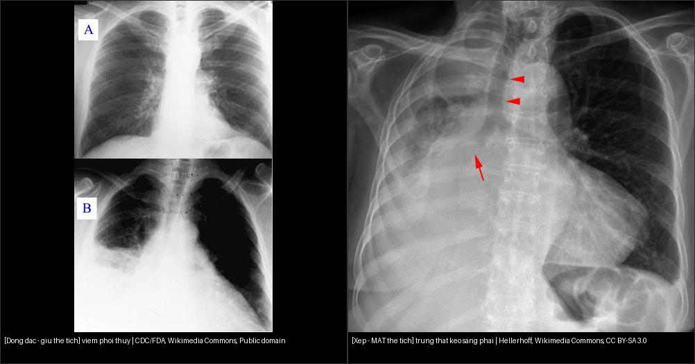
tong-quanTổng hợp y văn
📚 Bài tổng quan hệ: bảng DDx bắt buộc + bài liên quan chéo.
Bài học · Nguồn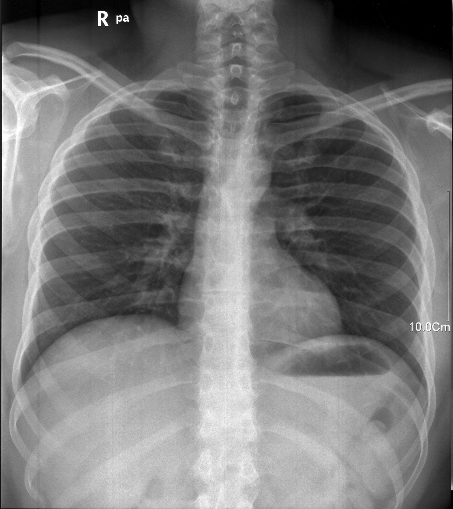
pattern:binh-thuong vung:nguc anatomy:ngucTổng hợp y văn
Biến thể bình thường (normal variant) + cạm bẫy (pitfall).
Bài học · Nguồn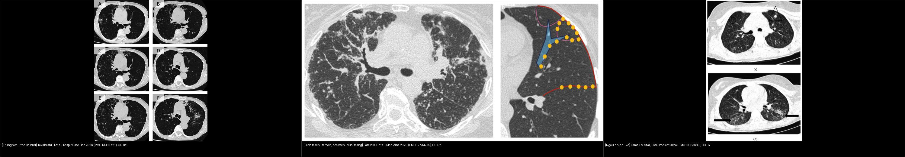
pattern:vi-cau-truc vung:phoi anatomy:phoiTổng hợp y văn
Trung tâm (tree-in-bud) / vách (sarcoid) / ngẫu nhiên (kê) — HRCT thật.
Bài học · Nguồn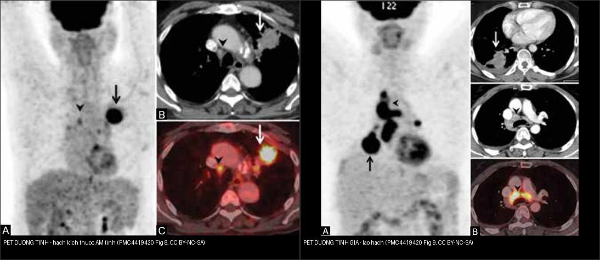
pattern:hach vung:trung-that score:IASLC protocol:PET-CT-ngucTổng hợp y văn
Vùng N + ngưỡng 10mm.
Bài học · Nguồn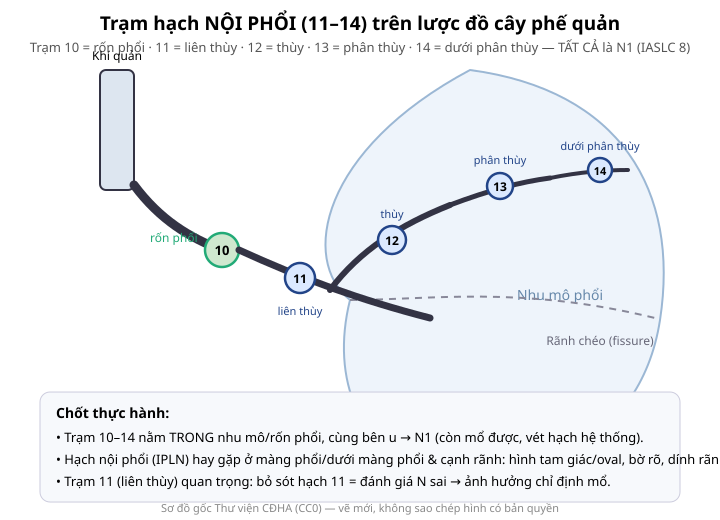
pattern:hach pattern:not vung:phoi vung:ron-phoi +4Tổng hợp y văn
📚 Bài tổng quan hệ: bảng DDx bắt buộc + bài liên quan chéo.
Bài học · Nguồn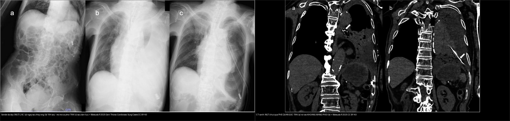
pattern:ong-day vung:nguc protocol:xq-ICU protocol:CT-ngucTổng hợp y văn
NKQ 3–5 cm + CVC (PAPVR) + NGT lạc phế quản; đầu NGT ≥ 10 cm dưới GOJ.
Bài học · Nguồn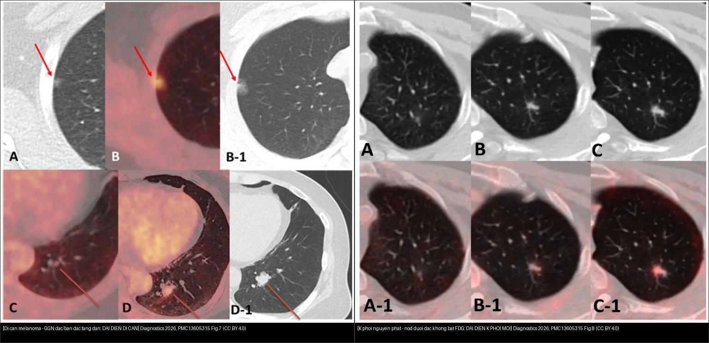
pattern:not pattern:not-co-tien-su-ung-thu vung:phoi score:Lung-RADS +2Tổng hợp y văn
Bối cảnh đổi xử trí: di căn (toàn thân) vs K phổi nguyên phát mới (mổ chữa được) vs lành; mGGN/chồi gai/kéo màng phổi + mô hình gộp FDG-PET/CT Se 76,2%/Sp 83,8%; FDG âm không loại trừ, FDG dương không chốt ác.
Bài học · Nguồn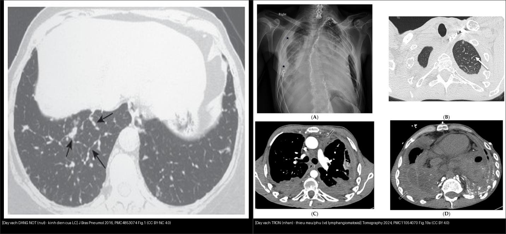
pattern:day-vach-lien-tieu-thuy pattern:bach-mach vung:phoi protocol:HRCT +1Tổng hợp y văn
Dày vách dạng nốt (beaded) + dày bó mạch, KHÔNG giãn phế quản co kéo = PLC; phân biệt phù (vách trơn đối xứng) / sarcoid (nốt dưới màng phổi) / xơ; PET/CT Se 86–97%, tách sarcoid AUC 0,973; giữ nghi ngờ cao vì dễ nhầm ILD → sinh thiết sớm.
Bài học · Nguồn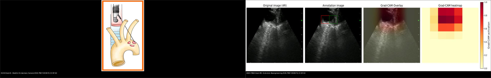
pattern:hach vung:trung-that score:IASLC score:CLNS +3Tổng hợp y văn
EBUS tới trạm 1/2/3p/4/7/10–12; EUS-B tới 5/6/8/9 + thượng thận/gan trái. ≥3 kim/trạm, ROSE, CLNS ≥3 (Sp 96,3%) và N2a/N2b ấn bản 9.
Bài học · Nguồn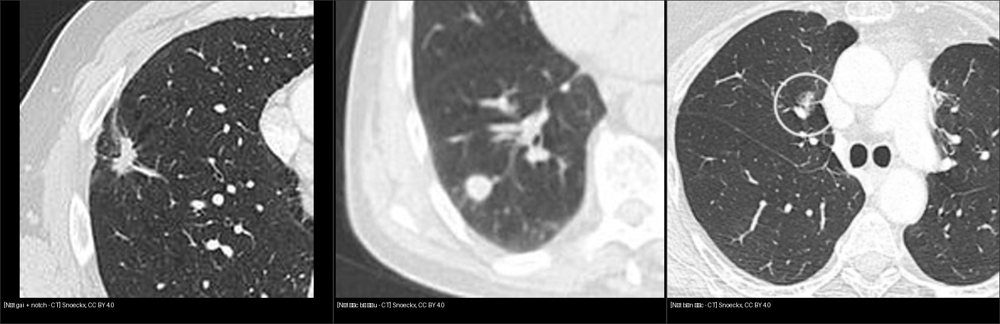
pattern:not vung:phoi score:Lung-RADS protocol:Fleischner +1Tổng hợp y văn
Gamut nốt + Fleischner / Lung-RADS.
Bài học · Nguồn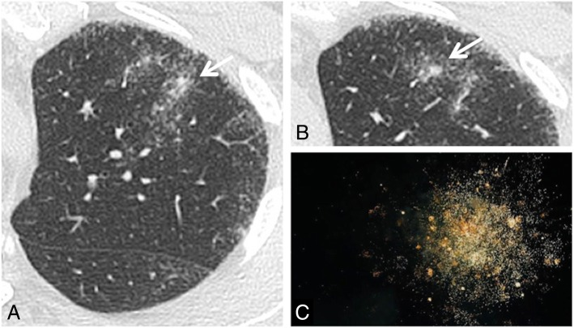
pattern:not-da-o vung:phoiTổng hợp y văn
Trung tâm/bạch mạch/ngẫu nhiên.
Bài học · Nguồn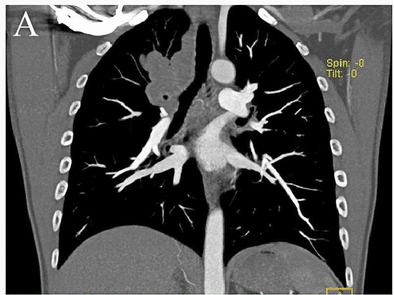
pattern:khoi vung:phoi score:TNMTổng hợp y văn
Trên 30mm + hạch 10mm.
Bài học · Nguồn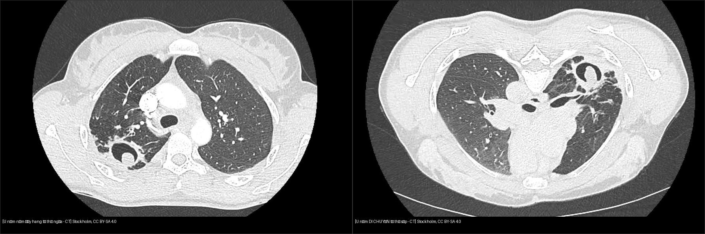
pattern:hang vung:phoiTổng hợp y văn
Thành ≤4mm/>15mm + liềm khí Monod.
Bài học · Nguồn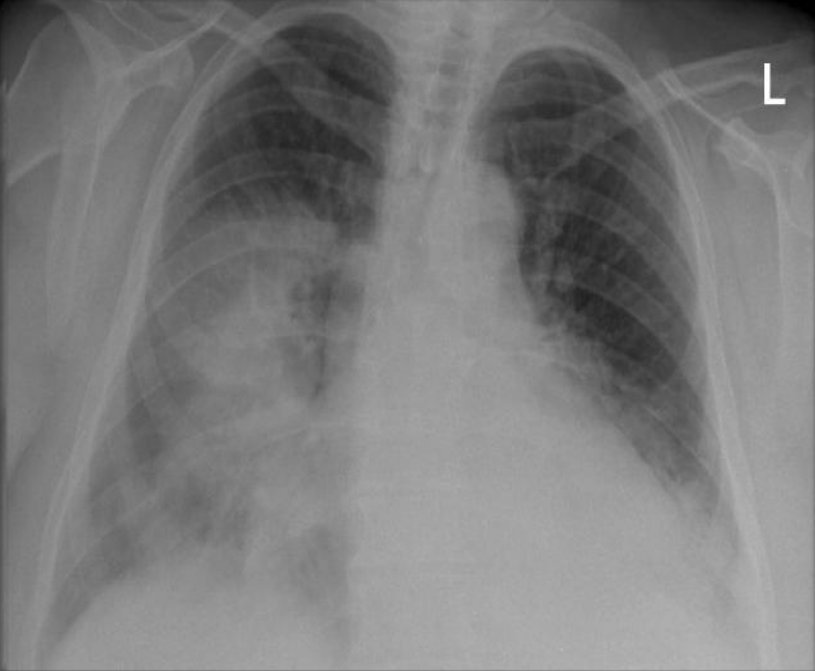
pattern:dong-dac vung:phoiTổng hợp y văn
Phân biệt đông đặc (consolidation) vs xẹp (atelectasis).
Bài học · Nguồn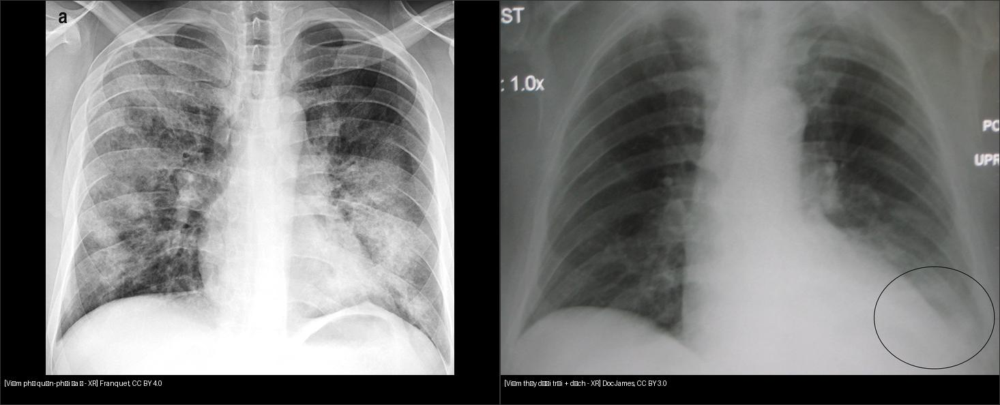
pattern:dong-dac vung:phoiTổng hợp y văn
Thùy vs đa ổ vs hang lao.
Bài học · Nguồn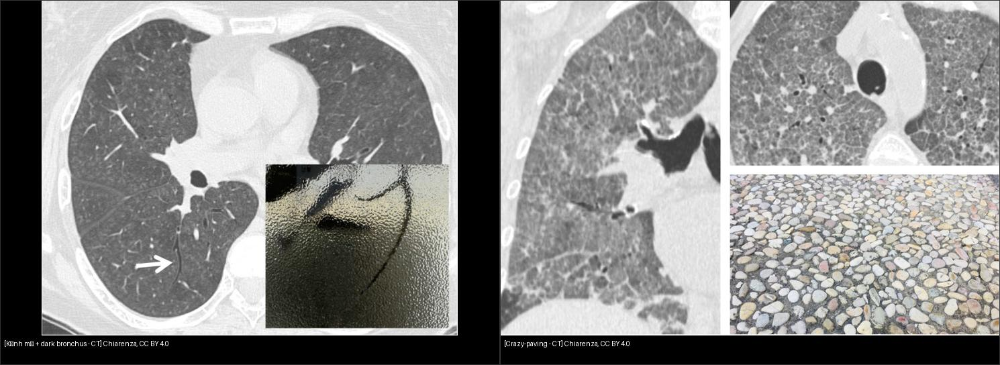
pattern:kinh-mo vung:phoi protocol:HRCTTổng hợp y văn
Dark bronchus + crazy-paving.
Bài học · Nguồn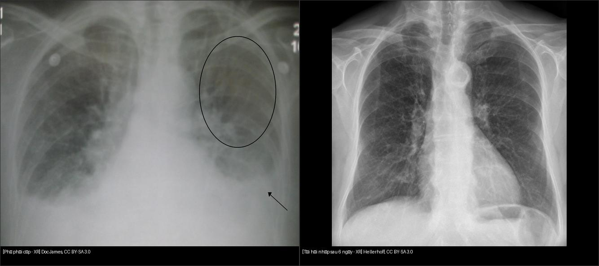
pattern:mo-ke vung:phoiTổng hợp y văn
Kerley B + tim to vs ARDS.
Bài học · Nguồn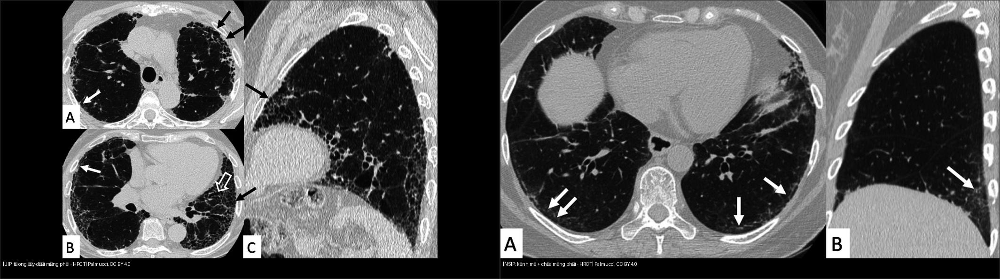
pattern:mo-ke pattern:kinh-mo vung:phoi protocol:HRCTTổng hợp y văn
Tổ ong đáy vs chừa màng phổi.
Bài học · Nguồn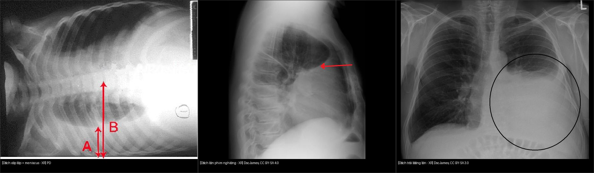
pattern:tran-dich vung:mang-phoiTổng hợp y văn
Dịch tự do (free fluid) vs khu trú (loculated).
Bài học · Nguồn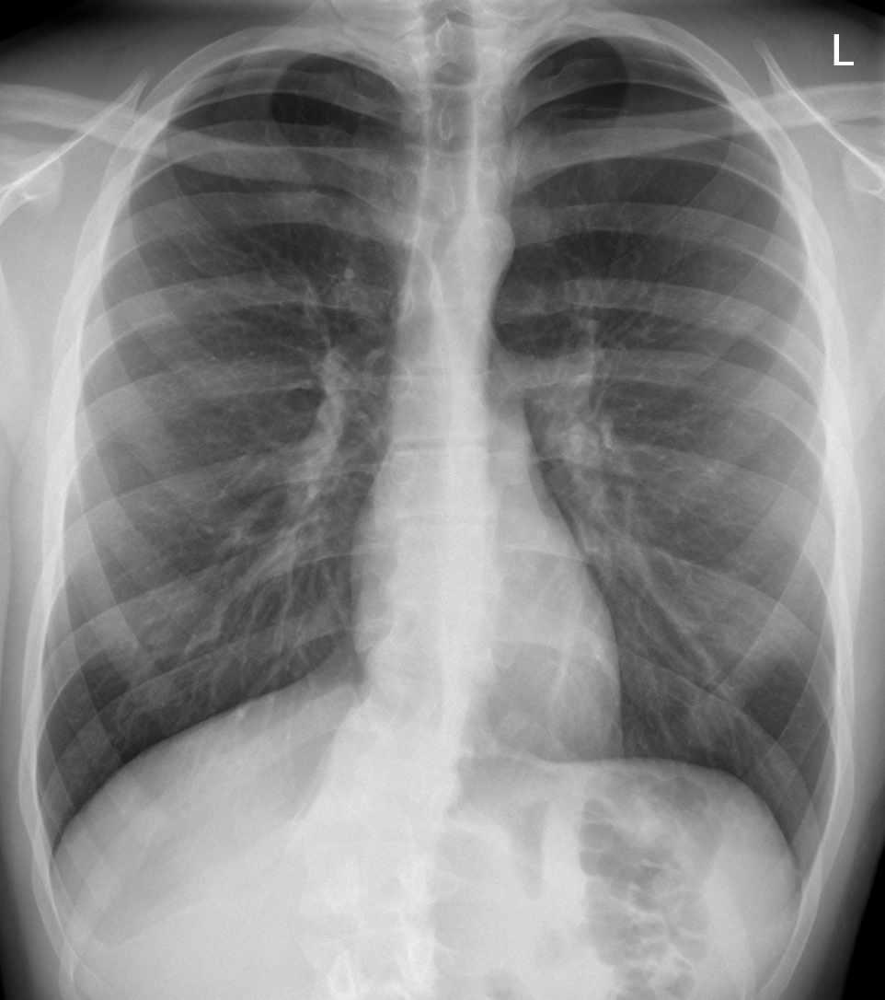
pattern:tran-khi vung:mang-phoiTổng hợp y văn
Đường màng phổi + deep sulcus phim nằm.
Bài học · Nguồn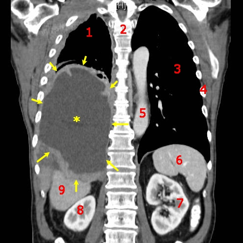
pattern:u-mang-phoi vung:mang-phoiTổng hợp y văn
Rind + co rút + amiăng.
Bài học · Nguồn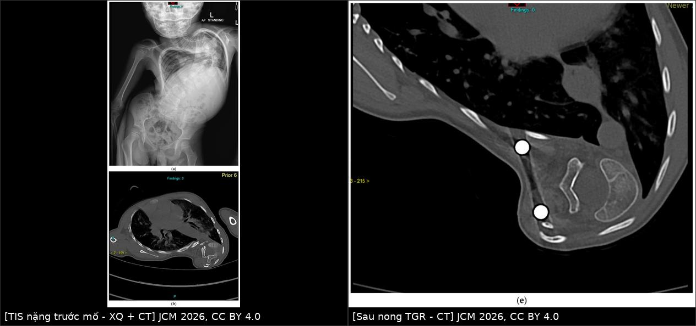
pattern:han-che-thong-khi pattern:hep-long-nguc vung:long-nguc vung:duong-tho +6Tổng hợp y văn
21,9% biến chứng hô hấp sau mổ; BL/TBV ≥15% OR 29,2. Trẻ chỉ khó thở khi FVC < 50%; PSG trước mổ, rút ống sang NIV ở nhóm nguy cơ cao.
Bài học · Nguồn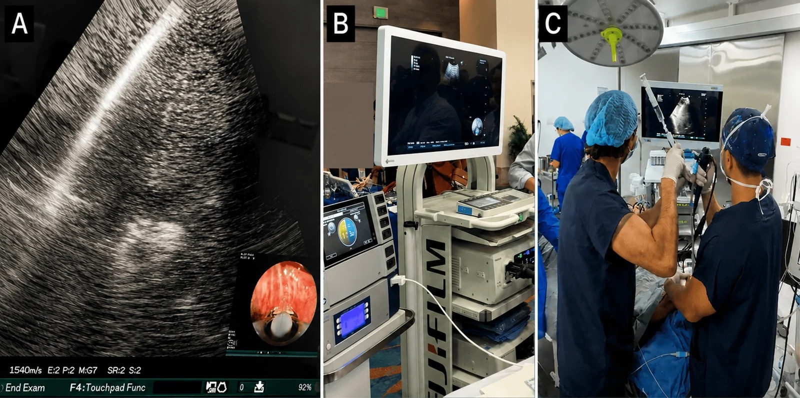
pattern:hach-trung-that vung:trung-that protocol:EBUS-TBNA protocol:cryobiopsy +2Tổng hợp y văn
Đường hầm bằng kim 22/19G → cryoprobe 1,1 mm, làm lạnh 3–5 giây. Cryo 91–93% vs TBNA 69–78%; lymphoma 95% vs 15%; u hạt 89,8% vs 78,1%.
Bài học · Nguồn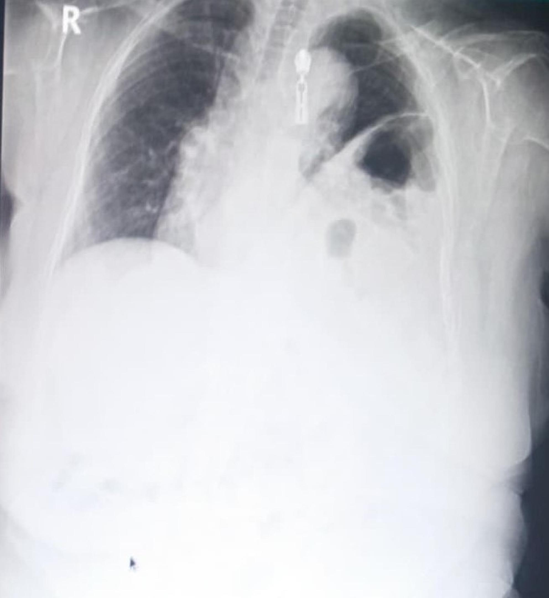
pattern:ngoai-mang-phoi vung:thanh-ngucTổng hợp y văn
Góc tù + Bochdalek.
Bài học · Nguồn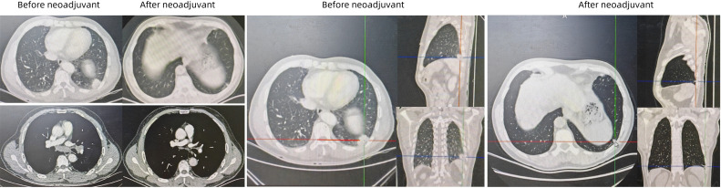
pattern:hach pattern:tai-phat vung:trung-that score:IASLC +3Tổng hợp y văn
Hạch > 5 mm hoặc còn FDG sau hóa–miễn dịch phải chọc lại; TBNA 63,6% vs cryobiopsy 95,5%; ypN2a 24,4 vs ypN2b 9,9 tháng; 9,2% RECIST PD vẫn đạt MPR.
Bài học · Nguồn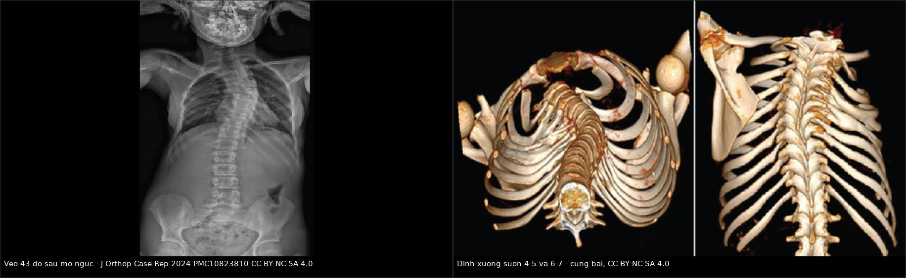
pattern:veo-cot-song vung:long-nguc anatomy:cot-song-nguc protocol:EOS-toan-than +2Tổng hợp y văn
📚 Bài tổng quan hệ: bảng DDx bắt buộc + bài liên quan chéo.
Bài học · Nguồn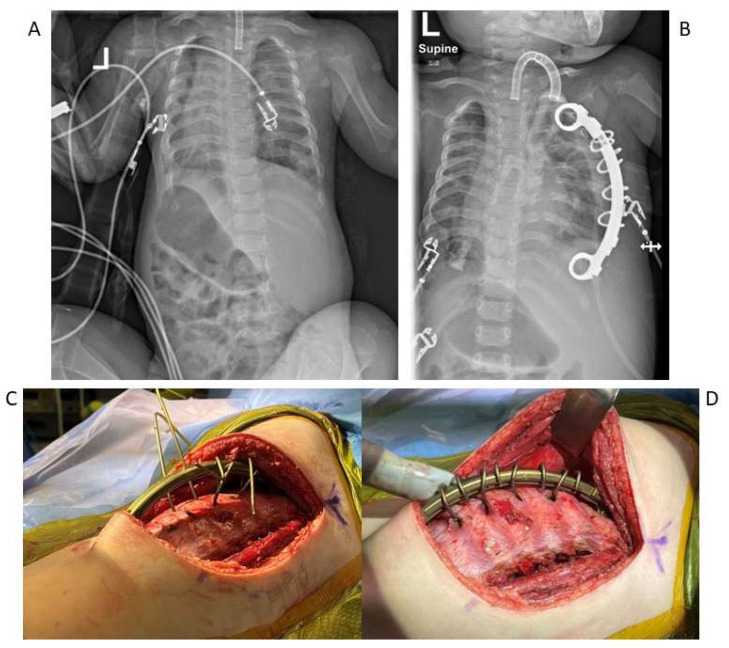
pattern:long-nguc-khong-du pattern:hep-long-nguc pattern:dinh-suon vung:long-nguc +7Tổng hợp y văn
TIS = chẩn đoán CHỨC NĂNG. SAL 86→97%, T1–T12 +32%, Cobb 65→58°: thành công không nằm ở Cobb. Nong 6 tháng, 1,8 biến chứng/BN; gù >70° tránh VEPTR.
Bài học · Nguồn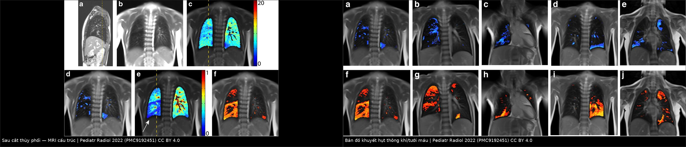
pattern:hau-mo pattern:qua-sang vung:phoi protocol:MRI-chuc-nang +3Tổng hợp y văn
Giãn bù (không phải teo); vẹo cột sống 17,9%, pectus 14,3%; spirometry chỉ 26,7% trẻ; CT chỉ khi triệu chứng.
Bài học · Nguồn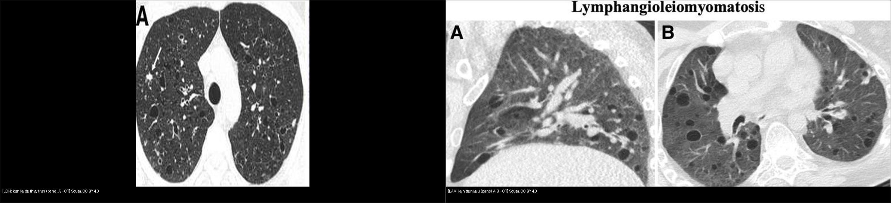
pattern:gian-phe-quan pattern:ken-khi vung:duong-thoTổng hợp y văn
Nhẫn ngọc >1,0 + kén ≤2mm.
Bài học · Nguồn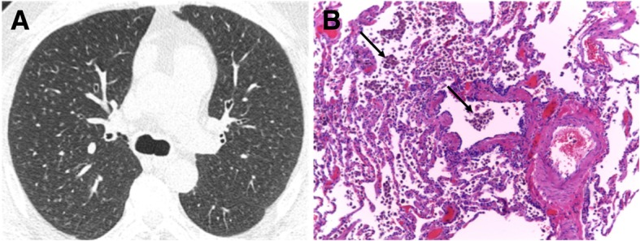
pattern:tieu-phe-quan vung:duong-tho protocol:HRCT-tho-raTổng hợp y văn
Bẫy khí thở ra.
Bài học · Nguồn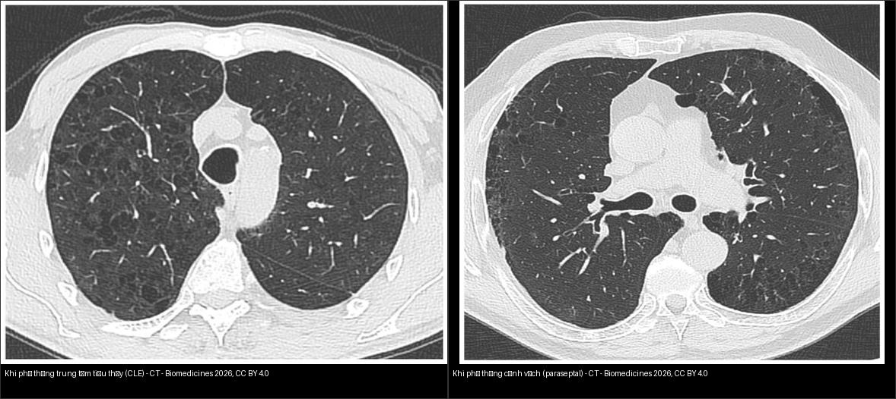
pattern:qua-sang vung:phoi protocol:HRCT-hit-tho-ra score:Fleischner-CLETổng hợp y văn
CLE vs paraseptal vs panlobular; central dot.
Bài học · Nguồn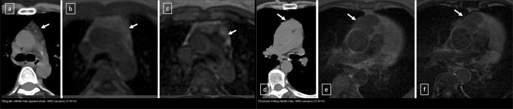
pattern:khoi vung:trung-that score:ITMIGTổng hợp y văn
3 khoang + chemical-shift SII.
Bài học · Nguồn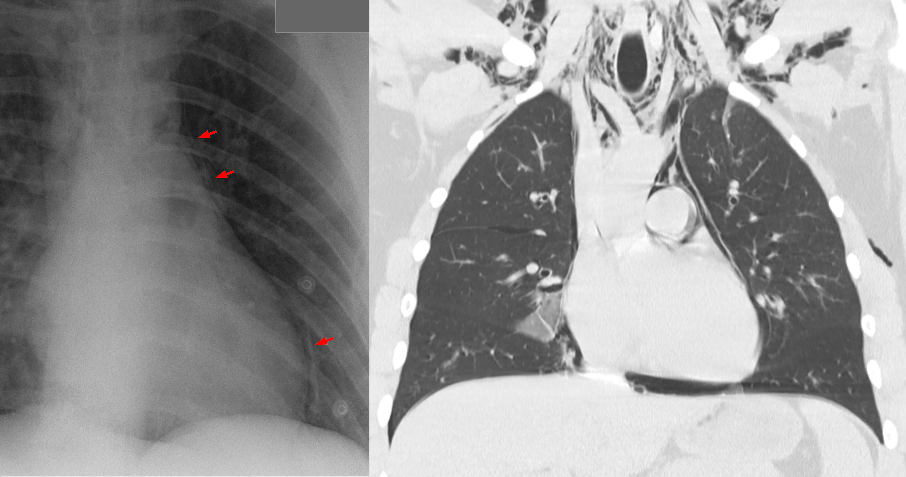
pattern:khi-trung-that vung:trung-thatTổng hợp y văn
Macklin + thủng thực quản.
Bài học · Nguồn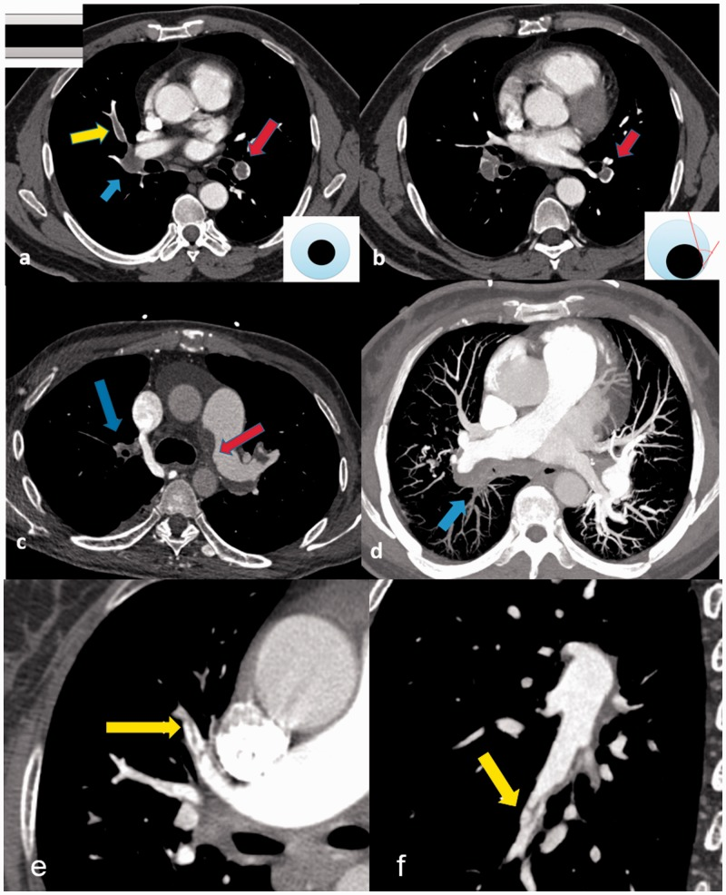
pattern:khuyet-thuoc vung:mach-nguc protocol:CTA-ngucTổng hợp y văn
Góc nhọn/tù + flap + IMH 50-70HU.
Bài học · Nguồn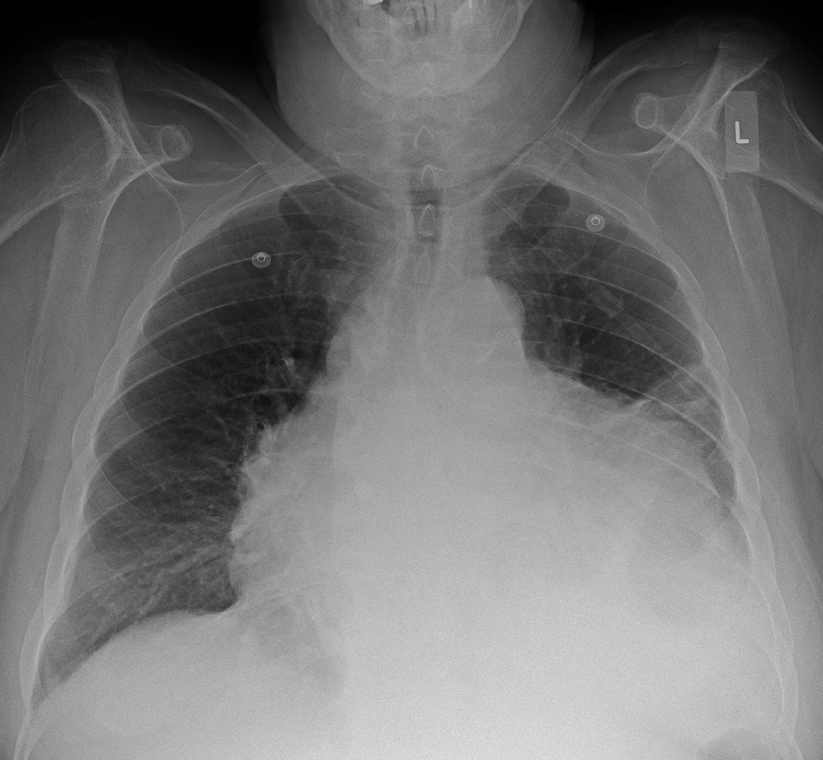
pattern:tran-dich-mang-tim vung:mang-timTổng hợp y văn
Chai nước + RA collapse.
Bài học · Nguồn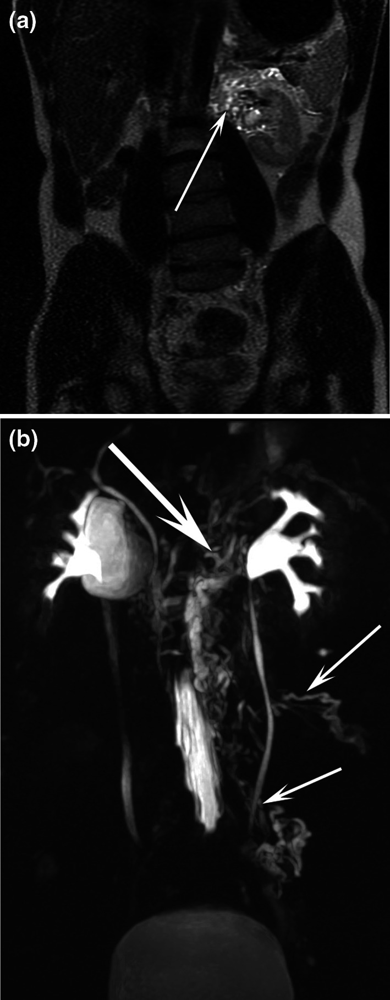
pattern:duong-trap-nieu pattern:ro-bach-huyet pattern:nuoc-tieu-trang vung:tiet-nieu +5Tổng hợp y văn
Chylomicron niệu >15 mg/dL. MRL nặng T2 thấy rò; ăn ít mỡ >70% thành công; xơ hóa → NBCA → mổ cắt ly mạch (24 tháng sạch).
Bài học · Nguồn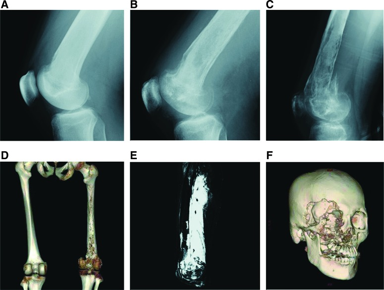
pattern:loansan-bach-huyet pattern:tieu-xuong pattern:tran-dich-duong-trap vung:da-he +6Tổng hợp y văn
Nhiều ổ ly giải tủy + nang lách + tràn dưỡng trấp → GLA; tiêu xương vỏ tiến triển → GSD. Sirolimus đích 5–15 ng/mL, đáp ứng 6 tháng; xạ trị 40–45 Gy.
Bài học · Nguồn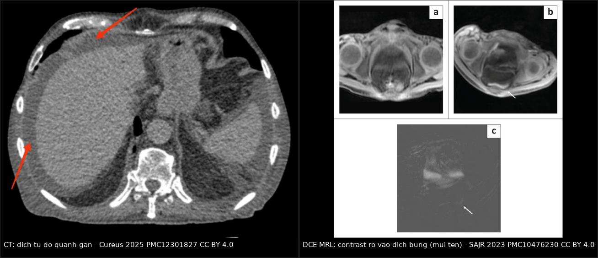
pattern:dich-bang vung:bung anatomy:ong-nguc protocol:lymphangiography +2Tổng hợp y văn
📚 Bài tổng quan hệ: bảng DDx bắt buộc + bài liên quan chéo.
Bài học · Nguồn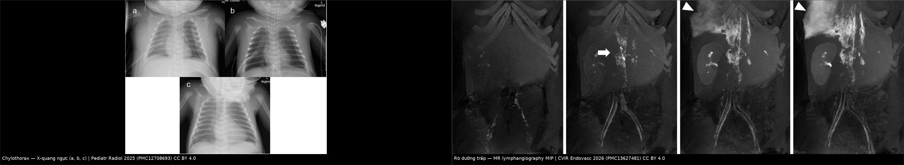
pattern:tran-dich vung:mong-phoi anatomy:ong-nguc protocol:lymphangiography +2Tổng hợp y văn
Dịch sữa: TG > 110 mg/dL + chylomicron; pseudochylothorax chol > 200; nội khoa 86,9%, TDE ~94,6%.
Bài học · Nguồn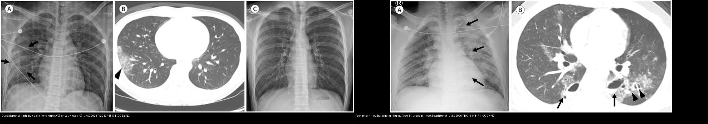
pattern:chan-thuong pattern:dung-dap-phoi pattern:rach-phoi pattern:tran-khi-mang-phoi +5Tổng hợp y văn
Đụng dập tan ~7 ngày; rách thành hang; flail ≥ 3 sườn × 2 chỗ.
Bài học · Nguồn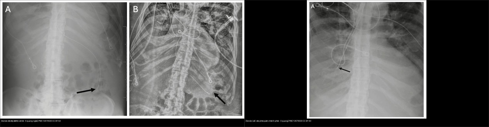
pattern:sac-hit-sac pattern:roi-loan-nuot vung:duong-nuot vung:thanh-quan +8Tổng hợp y văn
Phân độ PAS 1–8 & Hyodo 0–12; mờ theo trọng lực = viêm phổi hít sặc; xác nhận vị trí sonde dạ dày (3–10 cm dưới cơ thắt thực quản–dạ dày).
Bài học · Nguồn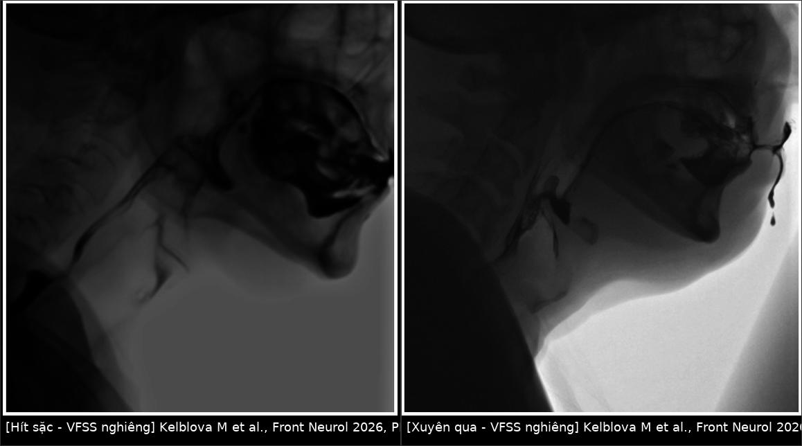
pattern:hit-sac pattern:sac-tham-lang pattern:roi-loan-nuot vung:duong-nuot +7Tổng hợp y văn
GMFCS III–V nguy cơ cao; >80% sặc ở trẻ là thầm lặng; CFA sens 80–100%/spec 68–79%; IDDSI 3–4; PEG khi cần nuôi >3–6 tuần.
Bài học · Nguồn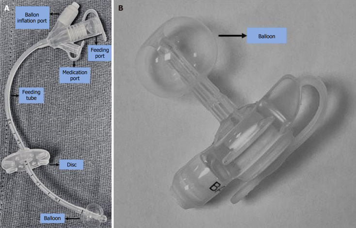
pattern:bien-chung-ong-nuoi vung:da-day vung:thanh-bung score:ASPEN +4Tổng hợp y văn
Buried bumper 10,5%; biến chứng nặng 14,4%; thay bóng đầu sau 6–12 tuần; xác nhận: hút dịch → siêu âm → cản quang; refeeding 10,4%.
Bài học · Nguồn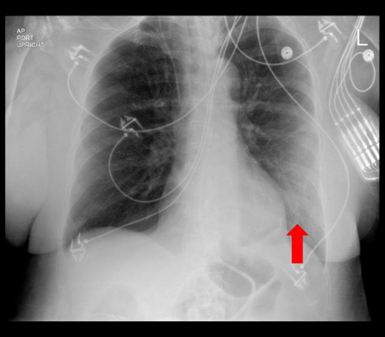
pattern:dong-dac pattern:hang vung:phoi score:CPIS +4Tổng hợp y văn
VAP sau ≥ 48 giờ thở máy: mờ mới vùng phụ thuộc; cấy ETA ≥ 10⁵ / BAL ≥ 10⁴ / PSB ≥ 10³ CFU/mL; cuff 25–30 cmH₂O, đầu giường 30–45°, không chlorhexidine thường quy; VAE chỉ nhạy ~40%.
Bài học · Nguồn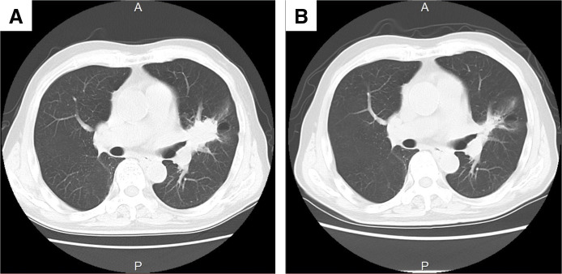
pattern:vien-phoi-mien-dich pattern:kinh-mo vung:phoi protocol:CT-nguc +2Tổng hợp y văn
irAE trước mổ 18,5%; 78,3% được mổ; MPR 38,9% vs 63,1%, pCR 27,8% vs 36,8%. CIP có thể tử vong POD 25 dù corticoid — phân độ CTCAE, loại trừ xẹp phổi/PE/phù phổi/nhiễm.
Bài học · Nguồn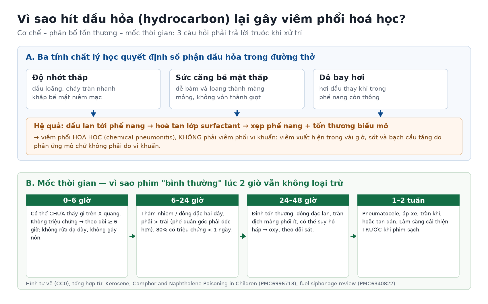
pattern:dong-dac pattern:thamnhiem vung:phoi protocol:X-quang-som +2Tổng hợp y văn
📚 Bài tổng quan hệ: bảng DDx bắt buộc + bài liên quan chéo.
Bài học · Nguồn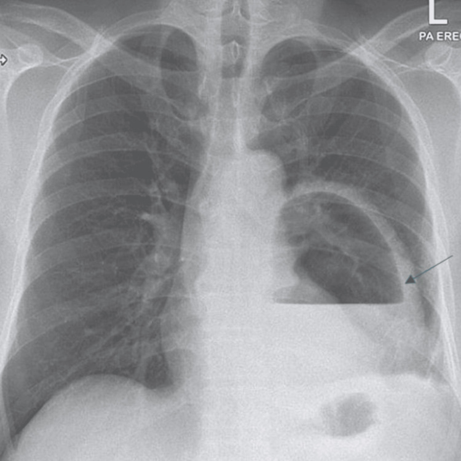
pattern:hang pattern:mu-mang-phoi pattern:tran-dich-khu-tru vung:phoi +4Tổng hợp y văn
Hang + mức khí–dịch dài bằng nhau 2 bình diện + góc nhọn = áp-xe; split pleura + vỏ ≥ 2 cm = mủ màng phổi; pH < 7,2 = dẫn lưu; hang ≥ 4 cm + tiếp xúc 1/3 ngoài = dẫn lưu xuyên thành; tPA 10 mg + DNase 5 mg × 6 liều (mổ 11,5% vs 23,4%).
Bài học · Nguồn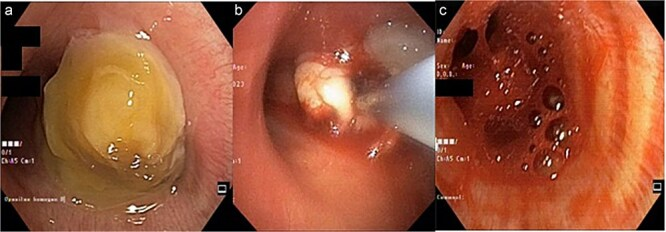
pattern:bien-chung pattern:tran-khi-trung-that pattern:chay-mau vung:trung-that +2Tổng hợp y văn
Cryo lấy mẫu lớn hơn TBNA nhưng tạo lỗ xuyên thành phế quản: tràn khí trung thất 11,9% thực tế vs 0,4% gộp, chảy máu muộn 5 phút, bậc thang cầm máu, adrenaline giả STEMI.
Bài học · Nguồn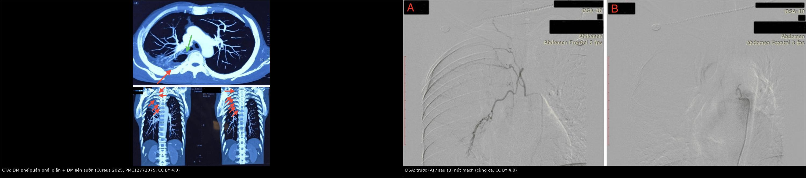
pattern:ho-ra-mau pattern:chay-mau vung:phoi protocol:CTA-nguc +1Tổng hợp y văn
Ngạt đường thở — không phải mất máu — là nguyên nhân tử vong (6,5–38%). CTA ≤ 1 mm tìm NBSA (25% ca), phân biệt nguồn ĐM phổi/Rasmussen và ho ra máu tĩnh mạch; nút mạch thành công 98,76% nhưng tái phát sớm 26 ngày.
Bài học · Nguồn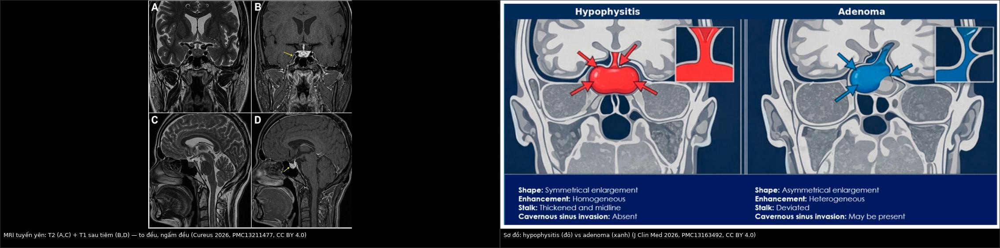
pattern:suy-noi-tiet pattern:kinh-mo vung:tuyen-yen vung:thuong-than +3Tổng hợp y văn
Suy thượng thận do ICI có thể im lặng tới lúc gây mê rồi tụt HA kháng vận mạch. Cortisol < 3 µg/dL, liều 100 mg + 200 mg/24h, MRI tuyến yên to đều vs adenoma, và xuất huyết thượng thận sau CABG.
Bài học · Nguồnpattern:hep-tinh-mach pattern:tuan-hoan-bang-he vung:trung-that protocol:CTV-nguc +3Tổng hợp y văn
Diện tích SVC < 1,07 cm² trên CTV; phân biệt u xâm lấn (ép từ ngoài) với huyết khối quanh catheter (dị vật trong lòng). Stanford–Doty I–IV, Kishi ≥ 4 → stent; thành công gộp 96,8%, covered stent tái phát 29,4% vs 60%, tamponade 0,1–1,8%.
Bài học · Nguồnpattern:ho-ra-mau pattern:phinh-mach vung:phoi protocol:CTA-nguc +2Tổng hợp y văn
Tử vong vì ngạt. Túi ≥ 8 mm + hang ≥ 30 mm + mPAP cao = nguy cơ vỡ; 28,6% túi KHÔNG thấy trên chụp ĐM phổi → phải chụp hệ thống. Bỏ sót tổn thương ĐM phổi sau nút phế quản: tái phát 39,7%/năm, HR 3,43.
Bài học · Nguồntong-quanTổng hợp y văn
📚 Bài tổng quan hệ: bảng DDx bắt buộc + bài liên quan chéo.
Bài học · Nguồnpattern:protocol-bung vung:bung protocol:CT-MRI-bungTổng hợp y văn
4 thì + Primovist 20p.
Bài học · Nguồnpattern:viem-tui-mat pattern:viem-tuy vung:tui-mat vung:tuy +4Tổng hợp y văn
PEP 4,6% · cholecystitis 0,8% · cholangitis 2,5%; khí trong lòng ống sau ERCP là bình thường — thủng khi khí/dịch NGOÀI ống.
Bài học · Nguồnpattern:ap-xe pattern:khong-dong-nhat pattern:hoai-tu pattern:khong-dong-nhat-vach +6Tổng hợp y văn
Ở miền Nam Việt Nam 78,3% áp-xe gan sinh mủ là do K. pneumoniae; bờ không đều 96,4%, trong không đồng nhất 89,2% (so với 82,6% / 60,9% nhóm khác). Khí trong ổ → aOR tử vong 10,16. Khuyết ngấm TM gan = thể xâm lấn → soi đáy mắt. Dẫn lưu > 5 cm, kháng sinh đơn thuần < 3 cm; catheter > chọc hút kim.
Bài học · Nguồnpattern:nang-phuc-tap vung:gan vung:than protocol:PET-CT-nang-gan +1Tổng hợp y văn
Nang gan nhiễm trùng trong PLD/ADPKD: PET/CT dương 96% (CT chỉ 39%) định vị nang thủ phạm; DWI sáng/ADC thấp = mủ, T1 sáng không ngấm FDG = xuất huyết cũ; kháng sinh ≥ 28 ngày giảm tái phát (OR 0,12); dẫn lưu khi thất bại sau 72 giờ. CA 19-9 không dùng để chẩn đoán.
Bài học · Nguồnpattern:tac-mat pattern:di-tru-catheter pattern:hemobilia pattern:ro-mat +4Tổng hợp y văn
Di trú 30,6% (trung vị 32 ngày); rút ống ngày 7–10 khi đủ 3 tiêu chí + clamp test (biến chứng 2,5%); rửa 20 mL × 2–3/ngày, đổi ống 2–3 tháng; hemobilia 1,1–9,9% → CTA + coil.
Bài học · Nguồnpattern:hep-duong-mat pattern:xo-hoa vung:duong-mat vung:gan +4Tổng hợp y văn
Hẹp khu trú sau PAIR/mổ nang sán; kiểm tra thông mật–nang trước khi bơm chất diệt. ERCP nong + stent; xơ gan → ghép.
Bài học · Nguồnprotocol:MRCP protocol:MRI-gan protocol:gadoxetic-acid pattern:hep-duong-mat +2Tổng hợp y văn
MRCP T2 + gadoxetic HBP: HBP 20 phút, FLIS 0–6; bilirubin 2,1 mg/dL dự báo ảnh kém; rò mật cần 60–180 phút (Se 96,4%); CE-MRC KHÔNG loại trừ hẹp (Se 40%).
Bài học · Nguồnpattern:ro-mat pattern:hep-duong-mat pattern:hep-sau-mo vung:duong-mat +7Tổng hợp y văn
BDI 0,4–1,5% sau cắt túi mật nội soi, chỉ 30% phát hiện trong mổ. CE-MRCP Se 76–82%; Strasberg E mất thông 75% trong 30 ngày → RYHJ.
Bài học · Nguồnpattern:ap-xe-o-bung pattern:viem-ruot-thua pattern:dich-ho-chau vung:ho-chau +6Tổng hợp y văn
Ổ > 40 mm + WBC không giảm sau 24 giờ → nguy cơ chuyển mổ; bảo tồn thất bại ~30%, đã đặt dẫn lưu vẫn mổ 25,4%; MRI Se 92%/Sp 98%.
Bài học · Nguồnpattern:binh-thuong vung:bung anatomy:bungTổng hợp y văn
Couinaud + crus/bare area.
Bài học · Nguồnpattern:khi-tu-do vung:bungTổng hợp y văn
Rigler + Chilaiditi.
Bài học · Nguồnpattern:nang-phuc-tap vung:gan vung:than protocol:PET-CT-nang-gan +1Tổng hợp y văn
Loạt 296 người ghép thận ADPKD: nhiễm nang tích lũy 3% / 6% / 12% ở 1/5/10 năm; yếu tố nguy cơ duy nhất là tiền sử nhiễm nang trước ghép (HR 3,47). PET/CT dương 87% (CT 33%), Se 84,6%/Sp 94,9%. Kháng sinh vào nang: ciprofloxacin 4,2%, trimethoprim 12,2%, piperacillin/tazobactam 0,2–0,3%; ≥ 4 tuần; chỉ 9% ca phải giảm ức chế miễn dịch.
Bài học · Nguồnpattern:tuong-tac-thuoc pattern:ngo-doc-thuoc pattern:thai-ghep vung:gan +8Tổng hợp y văn
📚 Bài tổng quan hệ: bảng DDx bắt buộc + bài liên quan chéo.
Bài học · Nguồnpattern:lach-lac-cho pattern:xoan-cuong pattern:nhoi-mau-tang vung:lach +2Tổng hợp y văn
< 0,2% ca cắt lách; nữ 20–40 tuổi 70–80%; hố lách trống + dấu xoáy; lách nhồi máu 49 HU so với gan 92 HU; tĩnh mạch tắc trước động mạch; còn ngấm → splenopexy, mất ngấm → cắt lách.
Bài học · Nguồnpattern:khoi-gan vung:gan protocol:MRI-gan-Primovist score:LI-RADSTổng hợp y văn
Hemangioma vs FNH vs adenoma vs HCC.
Bài học · Nguồnpattern:khoi-gan vung:gan score:LI-RADS protocol:CT-MRI-ganTổng hợp y văn
APHE + washout + LR-5.
Bài học · Nguồnpattern:u-lanh-gan vung:ganTổng hợp y văn
Klebsiella + ĐTĐ.
Bài học · Nguồnpattern:nang-gan vung:gan score:Gigot protocol:MRCP +1Tổng hợp y văn
0–15 HU + nốt <1,5 cm "trời sao" + central dot.
Bài học · Nguồnpattern:tac-mach-gan vung:gan vung:mach-cua score:Rotterdam +3Tổng hợp y văn
Vào–xoang–ra: thùy đuôi to = Budd-Chiari; SOS 21 ngày; iod 0,9–1,14 mg/mL = PVTT.
Bài học · Nguồnpattern:gan-lan-toa vung:gan score:PDFF protocol:CT-MRI-gan +1Tổng hợp y văn
10HU + HVPG 6/10/12 + tái thông rốn.
Bài học · Nguồnpattern:gan-da-nang vung:gan score:Schnelldorfer score:Gigot +2Tổng hợp y văn
Đo TLV/htLV (BASiM ICC 0,991 > QDSiM); somatostatin giảm TLV −6,73% nhưng không cải eGFR, tăng sỏi mật OR 4,66; Schnelldorfer A–D → cắt/ghép; ghép gan sống 5 năm > 80%.
Bài học · Nguồnpattern:gan-u-mau vung:gan vung:mach-cua score:VExUS +3Tổng hợp y văn
Gan to + giãn tĩnh mạch gan/IVC KHÔNG có huyết khối: phân biệt gan tim với Budd-Chiari, SOS/VOD, xơ gan; dấu "sừng hươu", VExUS (0–3), defer vs sinh thiết.
Bài học · Nguồnpattern:gian-duong-mat pattern:khuyet-long-ong vung:duong-mat-trong-gan protocol:MRCP +2Tổng hợp y văn
Giãn ống mật ngoại vi không tắc + khuyết lòng ống không ngấm thuốc; praziquantel 25 mg/kg × 3/ngày × 2–3 ngày; OR CCA 4,8.
Bài học · Nguồnpattern:u-long-ong-mat vung:duong-mat protocol:MRCP protocol:cholangioscopy +1Tổng hợp y văn
Khối NGẤM trong lòng ống mật + giãn không tương xứng = IPNB; nang lớn vách ngấm, nữ trung niên = MCN-L — cắt trọn, KHÔNG hút.
Bài học · Nguồnpattern:viem-tui-mat vung:tui-mat pattern:adenomyomatosis protocol:MRCPTổng hợp y văn
5 dấu CT · polyp vs adenomyomatosis.
Bài học · Nguồnpattern:tac-mat vung:duong-mat protocol:MRCP incidentaloma:gian-duong-matTổng hợp y văn
Khuyết thiếu vs hẹp hợp lưu.
Bài học · Nguồnpattern:hep-duong-mat vung:duong-mat protocol:MRCP protocol:cholangioscopy +2Tổng hợp y văn
Coi là ác (~70%) tới khi loại trừ.
Bài học · Nguồnpattern:hep-duong-mat pattern:hep-mieng-noi vung:duong-mat protocol:MRCP +2Tổng hợp y văn
Hẹp 1 ổ nhẵn tại miệng nối vs đa ổ + tắc ĐM gan; gadoxetic HBP.
Bài học · Nguồnpattern:gian-ruot-thua vung:ruot-thua pattern:u-nhay score:WHO-AMN +3Tổng hợp y văn
≤ 2,3 cm + không mô mềm = viêm; mô mềm đáy = nghi HAMN/adenocarcinoma; vôi hóa thành 38,7% (92% lành); OMLAMN vs POMC = vách mờ + dịch ổ bụng vs "ô kính màu"; IHC SATB2/CK20/CDX2 vs PAX8/CK7.
Bài học · Nguồnpattern:viem-tuy vung:tuy score:Atlanta protocol:CT-tuy-da-thiTổng hợp y văn
4 tuần + hoại tử; nang giả vs WON.
Bài học · Nguồnpattern:u-tuy vung:tuyTổng hợp y văn
Double-duct + IPMN.
Bài học · Nguồnpattern:tac-mat pattern:bien-chung-stent pattern:di-tru-stent vung:duong-mat +4Tổng hợp y văn
Tắc do cặn bùn vs u mọc xuyên vs di trú; PC-SEMS di trú 3% vs FC-SEMS 36%; kháng sinh < 7 ngày → tái phát 50%.
Bài học · Nguồnpattern:soi-trong-gan pattern:hep-duong-mat vung:duong-mat-trong-gan protocol:MRCP +2Tổng hợp y văn
Sỏi tăng đậm độ trong ống giãn; nguy cơ iCCA 2,0→6,2% / 15 năm.
Bài học · Nguồnpattern:nang pattern:hoa-sung vung:gan score:WHO-IWGE-CE +2Tổng hợp y văn
Màng đôi (CE1) → nang con (CE2) → hoa súng (CE3a) → giả đặc (CE4) → vôi hóa (CE5); PAIR cho CE1/CE3a, mổ cho CE2/CE3b > 5 cm, theo dõi CE4/CE5.
Bài học · Nguồnpattern:chan-thuong-bung vung:lach score:AAST protocol:CT-bung-cap-cuuTổng hợp y văn
AAST + thoát thuốc.
Bài học · Nguồnpattern:bong-vong-mac pattern:lo-hoai-tu pattern:co-keo pattern:viem-noi-nhan +10Tổng hợp y văn
Bong 14,8% (8,3–21%), trung vị 27 ngày, 81,3% < 2 tháng; bỏ mắt 31,3%, gắn lại 56,3%; dầu silicone: bong 0–6,2% vs 25,5–76,6% nhóm chứng; màng dính đĩa + aftermovement = võng mạc, màng dịch kính không dính đĩa thì KHÔNG mổ.
Bài học · Nguồnpattern:bong-vong-mac pattern:co-keo pattern:rop vung:vong-mac +4Tổng hợp y văn
Chọn đai khi co kéo ngoại vi 4A; LSV khi 4B; LV khi stage 5/màng dày — thành công 90% → 57% → 25–33%.
Bài học · Nguồnpattern:bien-chung-sau-tiem pattern:teo-hoang-diem pattern:tang-nhan-ap vung:hoang-diem +4Tổng hợp y văn
Teo hoàng điểm 79,8%/10 năm (đáp ứng kém 7,1→41,4→81,4%), xơ 11,4→25,7→57,1%; rách RPE 1,9–7% khi PED >400 µm; IOP >25 mmHg/30 phút nếu không reflux; ≥7 mũi/năm → phẫu thuật glaucoma.
Bài học · Nguồnpattern:lac pattern:lac-ngoai pattern:lac-thu-phat vung:mat +3Tổng hợp y văn
📚 Bài tổng quan hệ: bảng DDx bắt buộc + bài liên quan chéo.
Bài học · Nguồnpattern:tai-bong pattern:co-keo pattern:rop vung:vong-mac +5Tổng hợp y văn
Thành công giải phẫu 94,2% → 88,2% (4A) và 63,6% → 30,3% (stage 5) sau 9,27 năm; mổ lại 8–23%; type 2 success ở stage 5 → 10/13 bong lại; co kéo ổn định không tới hoàng điểm thì KHÔNG mổ.
Bài học · Nguồnpattern:tan-mach-hac-mac pattern:bong-thanh-dich pattern:faf-tang-huyuynh-quang pattern:ez-day +9Tổng hợp y văn
📚 Bài tổng quan hệ: bảng DDx bắt buộc + bài liên quan chéo.
Bài học · Nguồnpattern:tan-mach-vong-mac pattern:phu-hoang-diem pattern:xuat-huyet-dich-kinh vung:vong-mac +7Tổng hợp y văn
📚 Bài tổng quan hệ: bảng DDx bắt buộc + bài liên quan chéo.
Bài học · Nguồnpattern:vi-mach-tac pattern:phu-hoang-diem pattern:xuat-huyet-vong-mac vung:vong-mac +7Tổng hợp y văn
📚 Bài tổng quan hệ: bảng DDx bắt buộc + bài liên quan chéo.
Bài học · Nguồnpattern:phuc-mac vung:phuc-mac protocol:CT-bung-tiem incidentaloma:dich-o-bungTổng hợp y văn
Omental cake vs lao (ADA 35–40 U/L); SAAG 1,1.
Bài học · Nguồnpattern:dau-silicone pattern:nhu-tuong-hoa pattern:giot-hyperreflective pattern:bong-tai-phat +11Tổng hợp y văn
📚 Bài tổng quan hệ: bảng DDx bắt buộc + bài liên quan chéo.
Bài học · Nguồnpattern:tang-nhan-ap pattern:giot-implant pattern:phu-giac-mac vung:tien-phong +5Tổng hợp y văn
📚 Bài tổng quan hệ: bảng DDx bắt buộc + bài liên quan chéo.
Bài học · Nguồnpattern:khuc-xa pattern:nhuoc-thi vung:mat protocol:khuc-xa-ly-liet +3Tổng hợp y văn
📚 Bài tổng quan hệ: bảng DDx bắt buộc + bài liên quan chéo.
Bài học · Nguồnpattern:gan-da-nang vung:gan protocol:TAE-dong-mach-gan protocol:choc-hut-xo-hoa-nang +3Tổng hợp y văn
TAE cho nhiều nang lan tỏa (thể tích gan −12,6% / −27,8%); chọc hút–xơ hóa cho 1–3 nang trội (VRR ≥ 50%, cấm khi thông mật/nang sán); fenestration ở PLD tái phát 33,7%.
Bài học · Nguồnpattern:ap-xe-gan pattern:viem-noi-nhan pattern:ap-xe-duoi-vong-mac pattern:viet-dich-kinh +9Tổng hợp y văn
Tiêm nội nhãn ≤ 48 giờ (31% đạt CF, 31% NLP); dẫn lưu gan song song, không tuần tự; cắt dịch kính khi mủ đặc che đĩa thị hoặc xấu sau 24 giờ; 25% hai mắt, tăng nhãn áp 73%.
Bài học · Nguồnpattern:suy-giam-nhan-thuc pattern:ton-thuong-chat-trang pattern:han-che-khuech-tan vung:chat-trang +6Tổng hợp y văn
tLE 33/126, tích lũy 29,2% sau 2 năm; 8/33 suy giảm nhận thức dù không than phiền; IPCG: z ≤ −1,5, giảm > 1 z; MoCA < 26 dương tính giả cao; phục hồi bằng cognitive rehab + tập luyện.
Bài học · Nguồnpattern:viem-noi-nhan pattern:mu-tien-phong pattern:viem-dich-kinh vung:nhan-cau +7Tổng hợp y văn
📚 Bài tổng quan hệ: bảng DDx bắt buộc + bài liên quan chéo.
Bài học · Nguồnpattern:day-phuc-mac pattern:not vung:phuc-mac vung:o-bung +3Tổng hợp y văn
MPM ~600 ca/năm (Mỹ), 0,68/100.000/năm (Đức); amiăng OR 3,66; dịch khu trú + mảng canxi không khối gợi ý MPM/WDPM; omental cake + ổ nguyên phát = carcinomatosis; CT bỏ sót nốt < 1 cm (Se 9,1–50%); BAP1/p16 mất = ác tính.
Bài học · Nguồnpattern:gia-u pattern:tieu-dang-nang vung:gan score:PNM +3Tổng hợp y văn
AE do E. multilocularis: ủ bệnh 5–15 năm; vi nang T2 sáng trong nền xơ tối + vôi hóa + trung tâm KHÔNG ngấm (~27,7 HU) = AE; CE có vỏ xơ (PAIR được, AE thì không); PET âm ≠ ký sinh chết; albendazole 10–15 mg/kg/ngày.
Bài học · Nguồnpattern:viem pattern:cap-cuu vung:bung vung:thai-ky +4Tổng hợp y văn
Thai phụ đau hố chậu phải: ruột thừa di lệch theo tử cung, siêu âm → MRI (không gadolinium), ngưỡng 6 mm và bẫy hình ảnh; mổ nội soi vs kháng sinh, sinh non & thai lưu.
Bài học · Nguồnpattern:huyet-khoi-mach pattern:nhoi-mau-tang vung:lach vung:tuy +2Tổng hợp y văn
Huyết khối TM lách sau viêm tụy: tái thông 46% khi chống đông vs 15%; tăng áp cửa bên trái (giãn TM dạ dày 8,1%, chảy máu 3%); nhồi máu lách hình nêm — CT 100% vs siêu âm 29,9%, 89,6% bảo tồn.
Bài học · Nguồnpattern:o-nhiem-an vung:bung protocol:FDG-PET-CT protocol:CT-bung-da-thi +1Tổng hợp y văn
Sốt > 3 tuần: định nghĩa Delphi 2024; nhiễm khuẩn 51,6%; siêu âm 86% → CT bụng 92% → FDG-PET/CT (dương thật 47,9%, âm giả 19%); áp-xe gan vs di tụy giả áp-xe; sinh thiết hạch 36,4%.
Bài học · Nguồnpattern:tu-dich-quanh-manh-ghep pattern:khi-quanh-manh-ghep vung:dong-mach-chu score:MAGIC +3Tổng hợp y văn
Khí ≥ 7 tuần hoặc dịch ≥ 3 tháng sau EVAR = MAGIC chính; PET Se 91%/Sp 72%; lấy mảnh ghép tử vong 18–30%, 5 năm 51,8%.
Bài học · Nguồnpattern:tang-ap-cua vung:gan vung:bung score:PSVD-2026 +2Tổng hợp y văn
Gan nhẵn + tăng áp cửa: bề mặt nốt 25,5% vs 72,1%; ngấm lưới muộn 20,8% vs 94,3%; LSN < 2,5 + phân thùy IV to = Sp 90%; điểm PSVD 2026 ≥ 5; HVPG có thể bình thường (trước xoang).
Bài học · Nguồnpattern:nang-than vung:than score:BosniakTổng hợp y văn
20HU + vách 4mm + nốt.
Bài học · Nguồnpattern:u-than-dac vung:than score:ccLS protocol:CT-da-thi-than +1Tổng hợp y văn
Mỡ −10HU + T2 sáng/tối.
Bài học · Nguồnpattern:soi-nieu vung:he-nieuTổng hợp y văn
Tắc câm + vỏ mỏng.
Bài học · Nguồnpattern:than-nang-mac-phai pattern:u-than-dac vung:than protocol:sang-loc-than-loc-mau +2Tổng hợp y văn
Thận nhỏ + ≥3 nang/thận = ACKD; nốt ngấm trong nang = ACD-RCC (nguy cơ ×100).
Bài học · Nguồnpattern:u-than-dac pattern:di-can-rcc vung:than protocol:theo-doi-sau-cat-than +2Tổng hợp y văn
~30% tái phát; RECIST PD = +20% và ≥5 mm; di căn phổi/xương/não; theo dõi thích ứng nguy cơ.
Bài học · Nguồnpattern:khoi-thuong-than vung:thuong-than incidentaloma:thuong-than protocol:CT-washoutTổng hợp y văn
10HU + APW60/RPW40.
Bài học · Nguồnpattern:u-than-dac pattern:u-than-hai-ben vung:than protocol:sang-loc-u-than-di-truyen +1Tổng hợp y văn
U thận hai bên ở người trẻ → truy hội chứng; mỡ = AML (TSC), đặc = RCC (VHL/HLRCC/SDH/BHD).
Bài học · Nguồnpattern:than-da-nang vung:than vung:gan score:Mayo-MIC +2Tổng hợp y văn
Thận to nang hai bên = ADPKD; đếm nang theo tuổi (Pei) + htTKV/Mayo 1A–1E → tolvaptan khi 1C–1E.
Bài học · Nguồnpattern:khoi-tien-liet-tuyen vung:tien-liet-tuyen score:PI-RADS protocol:mpMRI-tien-liet-tuyenTổng hợp y văn
PZ-DWI + 1,5cm + PSAD.
Bài học · Nguồnpattern:u-bang-quang pattern:khuyet-thuoc-duong-nieu vung:bang-quang vung:duong-nieu-tren +3Tổng hợp y văn
VI-RADS: cơ còn vs phá cơ.
Bài học · Nguồn
pattern:day-thanh-ruot pattern:tac-ruot vung:ong-tieu-hoa protocol:CT-bung-capTổng hợp y văn
6mm + Hinchey + whirl.
Bài học · Nguồnpattern:danh-gia-nguy-co pattern:khoi-vu pattern:vi-voi-hoa pattern:rfgt +9Tổng hợp y văn
📚 Bài tổng quan hệ: bảng DDx bắt buộc + bài liên quan chéo.
Bài học · Nguồnpattern:u-vu pattern:thai-ky vung:vu score:BI-RADS +4Tổng hợp y văn
📚 Bài tổng quan hệ: bảng DDx bắt buộc + bài liên quan chéo.
Bài học · Nguồnpattern:u-mach-lanh-tinh pattern:khoi-vu pattern:u-mach-ac-tinh pattern:vu-sau-dieu-tri +5Tổng hợp y văn
📚 Bài tổng quan hệ: bảng DDx bắt buộc + bài liên quan chéo.
Bài học · Nguồnpattern:vasa-previa pattern:mach-mau-tien-dao vung:co-tu-cung vung:nhau-thai +4Tổng hợp y văn
Chẩn đoán trước sinh giảm 25 lần tử vong chu sinh; mạch trong 5 cm quanh lỗ trong là nguy hiểm. Đốt laser type II–III: sinh 36,0 vs 34,4 tuần, sinh âm đạo 50–63%, sống 100%.
Bài học · Nguồnpattern:thai-ky pattern:pas pattern:tai-phat vung:tu-cung-phan-phu +2Tổng hợp y văn
📚 Bài tổng quan hệ: bảng DDx bắt buộc + bài liên quan chéo.
Bài học · Nguồnpattern:nang-t1-sang pattern:lac-noi-mac vung:buong-trung vung:thai-ky +3Tổng hợp y văn
📚 Bài tổng quan hệ: bảng DDx bắt buộc + bài liên quan chéo.
Bài học · Nguồnpattern:lac-noi-mac pattern:tai-phat vung:buong-trung protocol:TVUS +2Tổng hợp y văn
Endometrioma tái phát ở người hiếm muộn: tồn dư vs tái phát thật, AMH & số lần mổ, khi nào mổ lại hay đi thẳng IVF/ICSI, sclerotherapy — bảng quyết định theo ca.
Bài học · Nguồnpattern:buong-trung-chuyen-vi-tri pattern:giam-du-tru-buong-trung vung:buong-trung vung:tieu-khung +6Tổng hợp y văn
Bảo tồn sinh sản trước hóa–xạ: AFC/AMH, ngưỡng liều < 2 Gy / 14 Gy, chuyển vị buồng trứng ≥ 4 cm, clip định vị & khối tại buồng trứng chuyển vị trên CT/PET — bảng quyết định.
Bài học · Nguồnpattern:day-thanh-bang-quang pattern:u-bang-quang pattern:hep-nieu-quan vung:tieu-khung +7Tổng hợp y văn
Đái máu muộn sau xạ tiểu khung: viêm bàng quang xạ vs ung thư niệu mạc thứ phát (SIR 2,49; nguy cơ tăng sau 10–20 năm), ngưỡng soi, CTU & VI-RADS.
Bài học · Nguồnpattern:suy-buong-trung pattern:buong-trung-teo pattern:mat-xuong pattern:thieu-hut-hormone +8Tổng hợp y văn
📚 Bài tổng quan hệ: bảng DDx bắt buộc + bài liên quan chéo.
Bài học · Nguồnpattern:quai-ruot-gian pattern:tham-nhiem-mo vung:ho-chau-phai protocol:CT-bung-co-can-quang +2Tổng hợp y văn
> 6 mm + thâm nhiễm mỡ + ngấm thành = viêm cấp; khí ngoài lòng/áp-xe/mất ngấm thành = phức tạp; tới 40% ruột thừa bình thường > 6 mm, khí trong lòng gặp 31% ca viêm; thiếu dấu phụ → xác suất ~2%.
Bài học · Nguồnpattern:tach-mang-oi pattern:day-oi pattern:roi-oi-non pattern:sinh-non +6Tổng hợp y văn
📚 Bài tổng quan hệ: bảng DDx bắt buộc + bài liên quan chéo.
Bài học · Nguồnpattern:ttts-tai-phat pattern:da-oi-thieu-oi vung:thai-nhi vung:banh-nhau +4Tổng hợp y văn
Tái phát 0–16% (tới 14% theo ISUOG); anastomosis tồn dư 24% → OR 24,33; phân biệt TAPS / đa ối tồn dư 5,7% / PPROM; phân giai đoạn lại theo Quintero + Delphi 2025; laser lần 2 (sinh 31 so với 32,5 tuần).
Bài học · Nguồnpattern:sa-tang-chau pattern:pyocolpos pattern:pyometra vung:chau +4Tổng hợp y văn
Thành công 91–100%, biến chứng 6–15%, hối tiếc 6,8%; pyocolpos 10–15 ngày (CRP 112–250 mg/L), CT ổ hơi–dịch thành ngấm; mở chỉ khâu dẫn lưu; pyometra 6/7 phải cắt tử cung.
Bài học · Nguồnpattern:viem-tuyen-vu pattern:ap-xe pattern:day-da pattern:khoi-vu +5Tổng hợp y văn
📚 Bài tổng quan hệ: bảng DDx bắt buộc + bài liên quan chéo.
Bài học · Nguồnpattern:khoi-vu pattern:mo-dem-xo pattern:gia-u-mach pattern:to-nhanh-khi-hormone +5Tổng hợp y văn
📚 Bài tổng quan hệ: bảng DDx bắt buộc + bài liên quan chéo.
Bài học · Nguồnpattern:dac-xuong pattern:tieu-xuong pattern:gia-tien-trien pattern:gia-lanh-hoa +9Tổng hợp y văn
📚 Bài tổng quan hệ: bảng DDx bắt buộc + bài liên quan chéo.
Bài học · Nguồnpattern:day-da-lan-toa pattern:phu-vu pattern:khong-khoi pattern:viem-gia +8Tổng hợp y văn
📚 Bài tổng quan hệ: bảng DDx bắt buộc + bài liên quan chéo.
Bài học · Nguồnpattern:dam-roi-day pattern:day-than-kinh vung:dam-roi-canh-tay score:LENT-SOMA +2Tổng hợp y văn
Vú 2,9% (hiện đại 1,0–1,2%, 80% thể sớm tự khỏi) · khởi phát muộn 40 tháng · < 1% khi ≤ 40 Gy, phân liều 2,2–2,5 Gy · myokymia 60% vs 4% plexopathy do u · dày + ngấm đều, không khối = RIBP.
Bài học · Nguồnpattern:day-da pattern:not-da pattern:di-can-da pattern:man-do +7Tổng hợp y văn
📚 Bài tổng quan hệ: bảng DDx bắt buộc + bài liên quan chéo.
Bài học · Nguồnpattern:dau-than-kinh pattern:neuroma pattern:ton-thuong-day-than-kinh vung:vu +4Tổng hợp y văn
ICBN = nhánh da bên T2, bị cắt trong ALND 80–100%; PMPS 20–40%; block dương = giảm ≥ 4/10 VAS; tiêm điểm đau 72,3% > 3 tháng; cắt neuroma > 80%; bảo tồn dây giảm tê (OR 0,33) nhưng không giảm đau (OR 0,68; NS).
Bài học · Nguồnpattern:tac-ruot vung:ruot protocol:CT-bung-capTổng hợp y văn
Whirl + mất ngấm.
Bài học · Nguồnpattern:u-nuoc-than pattern:urinoma vung:than-nieu-quan vung:tieu-khung +4Tổng hợp y văn
Ứ nước thận & urinoma do u xơ cổ tử cung/khối tiểu khung lành: ngưỡng creatinine, stent hay PCN, khi nào dẫn lưu urinoma — kèm bảng quyết định và 3 ca.
Bài học · Nguồnpattern:hang pattern:not-phoi vung:phoi score:FIGO-2000-WHO +3Tổng hợp y văn
Nốt/hang phổi đơn độc + β-hCG tăng ở nữ sinh sản: ETT phổi, hCG trung vị 304, FIGO III & WHO 12, VATS trước hóa trị — kèm 3 ca.
Bài học · Nguồnpattern:nang vung:tuyen-giap protocol:dot-con-giap incidentaloma:nang-giapTổng hợp y văn
Nang thuần >90% dịch, ưu thế dịch >50% · VRR gộp 83,9% · hút đơn thuần tái phát 60–90% · cồn 99%, ~50% thể tích dịch, giữ 2 phút · khàn tiếng 0,53% · không quyết định điều trị thêm chỉ vì còn 1 mL dịch.
Bài học · Nguồnpattern:huyet-khoi-mach pattern:khuyet-thuoc-long-mach vung:phan-phu vung:tieu-khung +4Tổng hợp y văn
Dịch tễ 0,02–0,18% sinh thường / 0,1–2% mổ lấy thai; phải ~90%; CT không cản quang: huyết khối 45,5 vs 30,1 HU, ngưỡng 36 HU (Se 72%/Sp 92,6%); 40% có huyết khối nơi khác; D-dimer 2.780,5 ng/mL báo lan rộng; tái phát 3,49% khi kháng đông, tái thông 89,4%.
Bài học · Nguồnpattern:khoi-long-tu-cung pattern:tang-sinh-mach pattern:chay-mau-au-dao vung:tu-cung +5Tổng hợp y văn
Trung vị 33 ngày sau sinh/sảy (9–392); hCG trung vị 3,5 mIU/mL — hCG âm KHÔNG loại trừ (4/12 ca < 1,0); phân độ mạch 0–3+: TCR không UAE ở 2+/3+ → 2/3 chảy máu nặng, TCR + UAE 10/10 an toàn; rối mạch trong cơ + hCG âm = AVM → cấm nạo.
Bài học · Nguồnpattern:ro pattern:bung-mo vung:thanh-bung vung:ruot-non +3Tổng hợp y văn
EAF 7,0% ở bụng mở; màng bảo vệ tạng 4,1% vs 10,7% (OR 0,36); xuất hiện sau 23,2 ± 20,3 ngày, 55% ở ca đóng cân thất bại; EAF không tự liền (ECF đóng 19,9–81,4%). CT cản quang uống đếm số lỗ + chiều dài ruột; loopogram trước khi cho ăn.
Bài học · Nguồnpattern:tai-phat pattern:hang-khuech-tan pattern:xo-hoa-sau-xa vung:am-dao +7Tổng hợp y văn
Tái phát 30–50% trong 5 năm; 30–45% ở trung tâm–tiểu khung; T2W+DWI chính xác 92,1% (PPV 100%) vs T2W+DCE 80%; PET/CT Se 98,2%/Sp 90,9%; SCC-Ag 1,5 ng/mL Se 87,3%/Sp 57,6%; mổ vét 5 năm ~49%, xạ lại 5 năm 34%.
Bài học · Nguồnpattern:teo-thi pattern:di-truyen-troi vung:than-kinh-thi protocol:OCT-RNFL-GCL +5Tổng hợp y văn
📚 Bài tổng quan hệ: bảng DDx bắt buộc + bài liên quan chéo.
Bài học · Nguồnpattern:buong-trung-nho pattern:suy-buong-trung vung:buong-trung vung:tieu-khung +4Tổng hợp y văn
📚 Bài tổng quan hệ: bảng DDx bắt buộc + bài liên quan chéo.
Bài học · Nguồnpattern:not vung:tuyen-giap protocol:dot-nhiet-giap score:IAR +1Tổng hợp y văn
📚 Bài tổng quan hệ: bảng DDx bắt buộc + bài liên quan chéo.
Bài học · Nguồnpattern:huyet-khoi-mach vung:gan vung:mach-cua vung:ruot +2Tổng hợp y văn
Sốt + đau bụng + khuyết thuốc trong tĩnh mạch cửa/mạc treo: pylephlebitis vs huyết khối lành/u vs MVT; kháng sinh 4–6 tuần, chống đông chọn lọc, mổ khi hoại tử ruột.
Bài học · Nguồnpattern:khong-phan-phu pattern:u-buong-trung vung:phan-phu score:O-RADS +3Tổng hợp y văn
Khối phần phụ 1–2% thai kỳ nhưng ác chỉ 1/15.000–32.000; BOT 88 mm vs deciduoma 48 mm, > 3 nhú gợi ý BOT; IOTA ngưỡng 30 Se 91,7/Sp 73,5%; MRI không cản từ; mổ tam cá nguyệt 2, > 18 tuần khó tiếp cận; hóa trị sau 14 tuần.
Bài học · Nguồnpattern:thai-bam-seo pattern:pas pattern:thai-ky pattern:chay-mau-au-bai +6Tổng hợp y văn
Niche 23/23 → PAS; RMT 1,8 vs 5,3 mm; 25,9% mất thai < 20 tuần; PAS 72,5%, vỡ 15%, cắt tử cung 12,5%.
Bài học · Nguồnpattern:bao-ton-sinh-san pattern:tru-mo-buong-trung vung:buong-trung protocol:noi-soi-o-bung +2Tổng hợp y văn
📚 Bài tổng quan hệ: bảng DDx bắt buộc + bài liên quan chéo.
Bài học · Nguồnpattern:chay-mau-bang-quang pattern:thanh-bang-quang-day pattern:bang-quang-co-nho vung:bang-quang +7Tổng hợp y văn
Đái máu đại thể sau xạ: thành dày đều + giãn mạch nội soi = viêm xạ; máu cục 50–70 HU không ngấm, đổi hình theo tư thế. Alum 1% 66–100% · formalin 89% nhưng 31% biến chứng nặng · HBOT 60–92%; nút mạch bàng quang kỹ thuật 100%/lâm sàng 85–90%, tái phát muộn 18,7%. Cắt bàng quang là cứu cánh cuối.
Bài học · Nguồnpattern:u-mau-buong-tu-cung pattern:hep-co-tu-cung pattern:xo-hoa-sau-xa vung:co-tu-cung +7Tổng hợp y văn
Buồng tử cung căng dịch + cơ tử cung mỏng + cổ tử cung xơ = hẹp sau xạ; dịch T1 sáng, không ngấm = máu; phần đặc hạn chế khuếch tán/ngấm không đều = u (ca 840 mL + carcinosarcoma 3,1 cm). Nội mạc > 3 mm ở hậu mãn kinh có dịch → giải áp + sinh thiết; hẹp che 47,2% bệnh ẩn; vỡ ứ mủ chẩn nhầm 84%, tử vong 25,4%.
Bài học · Nguồnpattern:ro-oi-trocar pattern:vo-oi-non-thang pattern:thieu-oi pattern:tach-mang-oi +7Tổng hợp y văn
PPROM sau laser 11–50% (13,8% trong 7 ngày); khuyết màng ối + hốc dịch trước bàng quang + Doppler không dòng = rò trocar; MRI BSSFP thấy đường hầm; latency trung vị 6 ngày (2–23), sống 67,0%, sống không di chứng nặng 42,9%; PAMG-1 96,7/98,3%.
Bài học · Nguồnpattern:mot-thai-chet pattern:ton-thuong-chat-trang vung:nao-thai vung:thai-nhi +4Tổng hợp y văn
Tổn thương não 27% (18–37%), NDI 6% (3–11%); MRI thai 2–4 tuần sau, MRI tuổi tương đương đủ tháng; Bayley-III 18–24 tháng; bại não chẩn đoán ở ≥ 2 tuổi.
Bài học · Nguồnpattern:taps pattern:lech-mca-psv pattern:thai-thieu-mau pattern:thai-da-hong-cau +5Tổng hợp y văn
Thai cho > 1,5 MoM, thai nhận < 1,0 MoM (giai đoạn II < 0,8), chênh > 0,5 MoM, ối bình thường; phát hiện trung vị 14 ngày (7–28) sau laser; tử vong chu sinh 25% (cho 37% vs nhận 14%), giai đoạn IV OR 3,4; tổn thương não 16,8%.
Bài học · Nguồnpattern:giam-thai-chon-loc pattern:ttts pattern:sfgr pattern:trap +9Tổng hợp y văn
KCl tuyệt đối không dùng trong MC; RFA/BCC từ 16 tuần, sống 79–88%, PPROM 12–18%; xác nhận mất dòng dây rốn bằng Doppler; TTTS 66,7% vs sFGR 93,3%.
Bài học · Nguồnpattern:di-can-xuong pattern:tieu-xuong pattern:dac-xuong pattern:gay-xep-behnh-ly +14Tổng hợp y văn
📚 Bài tổng quan hệ: bảng DDx bắt buộc + bài liên quan chéo.
Bài học · Nguồnpattern:nang-phuc-tap vung:than score:Bosniak protocol:CT-MRI-nang-than +1Tổng hợp y văn
Nang T1 sáng 30–100 HU không ngấm, không tăng thể tích (0%/năm) = xuất huyết cũ; sốt + CRP > 15 mg/dL + thành dày/viêm mỡ = nhiễm trùng (kháng sinh tan mỡ 4–6 tuần, PET/CT Se 84,6%); máu tụ quanh thận = Wunderlich → CTA/TAE.
Bài học · Nguồnpattern:xoan-tu-cung pattern:daubung-cap vung:tu-cung vung:tieu-khung +4Tổng hợp y văn
Xoắn > 45° (45–720°, ~2/3 xoay phải); MRI: eo “whirlpool” + cổ tử cung không thấy thẳng trên 1 lát + góc cổ–âm đạo gấp khúc; 3/27 (11,1%) thai lưu/tử vong sơ sinh; 8,6% xoắn không triệu chứng ở ca mổ lấy thai có lạc nội mạc trong cơ (rạch da trên rốn 50% vs 0%); ≥ 360° → bong nhau + Couvelaire.
Bài học · Nguồnpattern:sup-mi pattern:liet-nhan-cau pattern:nuot-kho pattern:teo-co +15Tổng hợp y văn
📚 Bài tổng quan hệ: bảng DDx bắt buộc + bài liên quan chéo.
Bài học · Nguồnpattern:sa-tang-chau pattern:sa-tai-phat pattern:enterocele pattern:sa-qua-duong-ham +10Tổng hợp y văn
📚 Bài tổng quan hệ: bảng DDx bắt buộc + bài liên quan chéo.
Bài học · Nguồnpattern:tang-nhan-ap pattern:goc-mo pattern:goc-dong pattern:di-lenh-IOL +12Tổng hợp y văn
📚 Bài tổng quan hệ: bảng DDx bắt buộc + bài liên quan chéo.
Bài học · Nguồnpattern:da-nieu pattern:cuong-yen-day pattern:mat-diem-sang-T1 vung:so-yen +5Tổng hợp y văn
📚 Bài tổng quan hệ: bảng DDx bắt buộc + bài liên quan chéo.
Bài học · Nguồnpattern:vasa-previa pattern:pprom pattern:tach-mang-oi vung:co-tu-cung +4Tổng hợp y văn
Sau đốt: PPROM < 37 tuần 37,1%, < 34 tuần 14,3%; sinh 36,0 vs 34,4 tuần, âm đạo 62,9%, NICU 34,3% vs 96,9%. Kiểm Doppler ngày 1 và 1 tuần: mất dòng = thành công.
Bài học · Nguồnpattern:day-thanh-ruot vung:ruot protocol:CT-MR-enterographyTổng hợp y văn
Đối xứng/dài/giữ lớp = Crohn; lệch tâm/ngắn/mất lớp/bờ vai = K đại tràng.
Bài học · Nguồnpattern:han-che-van-dong pattern:day-bao-khop vung:vai vung:vu +4Tổng hợp y văn
AC sau điều trị ung thư vú 10,3–26,9%; bất động OR 3,09, phù bạch mạch OR 5,09, béo phì OR 3,91; chốt = mất thụ động có xoay ngoài; CHL > 2,2 mm, ngách nách > 4 mm; PET bao khớp SUVmax ~2 (không phải di căn); tiêm trong khớp kém hơn AC vô căn (p = 0,0006).
Bài học · Nguồnpattern:chen-ep-dam-roi pattern:dau-vai-truoc pattern:di-cam-ngon-4-5 vung:vai +5Tổng hợp y văn
PMS = 22,6% ca lối thoát ngực, 6,1% là nguyên nhân duy nhất; NTOS 90–95%; Tinel mỏm quạ + lõm mặt sau cơ khi dạng tay; block 4 mL lidocaine 1%, dương khi giảm > 50%; bảo tồn 87%, giải phóng PM ~85%; 5 tiêu chuẩn đồng thuận 2026.
Bài học · Nguồnpattern:day-bao-xo pattern:co-rut vung:vu score:Baker-SIGBIC +4Tổng hợp y văn
CC 3–5% ở 5 năm (không xạ), 20–50% sau PMRT; CT: đáy −6,77%, độ lồi +21,54%, ngưỡng tỷ lệ > 1,233 = Baker III–IV; MRI SIGBIC: dày > 5 mm = grade 3; Baker κ 0,55.
Bài học · Nguồnpattern:dich-quanh-implant pattern:khoi-bao-xo vung:vu score:TNM-BIA-ALCL +4Tổng hợp y văn
Seroma muộn 0,8–1,8%; BIA-ALCL 2,83/100.000 người–năm; tiềm tàng 7–10 năm; dịch > 1 năm phải chọc hút CD30/ALK; PET/CT phân giai đoạn; en bloc capsulectomy; sống 97,9% N0 vs 75% N+.
Bài học · Nguồnpattern:ngam-mang-nao pattern:ngam-mang-tuy pattern:not-mang-nao pattern:giay-day-than-kinh +14Tổng hợp y văn
📚 Bài tổng quan hệ: bảng DDx bắt buộc + bài liên quan chéo.
Bài học · Nguồnpattern:xo-quanh-ong-mat vung:gan score:CSLD-CiSLD protocol:MRCP +1Tổng hợp y văn
CHF/Caroli: tăng áp cửa trước xoang nhưng chức năng gan còn tốt (45,8% khởi đầu bằng xuất huyết); CSLD khi varices cần can thiệp + tiểu cầu < 150, có cholangitis hoặc LSM > 15 kPa; MRCP tìm central dot; ghép gan khi biến chứng kháng trị/nghi iCCA.
Bài học · Nguồnpattern:viem-tuy-cap pattern:hoai-tu-tuy pattern:huyet-khoi-xoang pattern:giam-fibrinogen +8Tổng hợp y văn
📚 Bài tổng quan hệ: bảng DDx bắt buộc + bài liên quan chéo.
Bài học · Nguồnpattern:cardiomyopathy pattern:takotsubo pattern:rong-loan-van-dong-vung vung:tim +4Tổng hợp y văn
Mạch vành sạch + rối loạn vận động vùng = takotsubo/pheo; sốc tim 37,7%; tử vong PMC 13,8%; chẹn alpha trước, beta sau; VA-ECMO cầu nối.
Bài học · Nguồnpattern:khoi-thuong-than pattern:paraganglioma vung:thuong-than vung:paraganglia +2Tổng hợp y văn
Khối ngấm mạnh thượng thận/cạnh ĐMC: T2 "bóng đèn"; MIBG âm 15%; FDG-first 94,7%; alpha-block trước mọi can thiệp.
Bài học · Nguồnpattern:hoai-tu-tuy pattern:dich-tu-tuy pattern:viem-tuy vung:tuy +7Tổng hợp y văn
📚 Bài tổng quan hệ: bảng DDx bắt buộc + bài liên quan chéo.
Bài học · Nguồnpattern:hep-am-dao pattern:u-dich pattern:hematocolpos pattern:ro +7Tổng hợp y văn
Thương tổn âm đạo 2–4% (loạt: 7,9%); nhiễm trùng chậu 24% (4/6 do chẩn đoán muộn); hẹp âm đạo 8%; rò niệu đạo–âm đạo 5 mm; hematocolpos T2 sáng + echo lơ lửng; mold 1–2–12 tháng; sửa rò < 7 ngày.
Bài học · Nguồnpattern:hoai-tu-tuy pattern:khi-trong-o pattern:gia-phinh-dong-mach vung:tuy +7Tổng hợp y văn
📚 Bài tổng quan hệ: bảng DDx bắt buộc + bài liên quan chéo.
Bài học · Nguồnpattern:khoi-thuong-than pattern:u-tang-mach pattern:di-truyen vung:thuong-than +4Tổng hợp y văn
70–80% germline; hai bên 20–40%; block alpha ≥ 14 ngày, beta sau alpha; thai: MRI không gadolinium, mổ < 24 tuần; tử vong mẹ 4–9%, thai 7–14%.
Bài học · Nguồnpattern:teo-thuong-than pattern:cushing pattern:suy-thuong-than vung:thuong-than +6Tổng hợp y văn
📚 Bài tổng quan hệ: bảng DDx bắt buộc + bài liên quan chéo.
Bài học · Nguồnpattern:ppgl-di-can pattern:xa-tri-hat-alpha pattern:khang-lu177 vung:thuong-than +5Tổng hợp y văn
SSTR Krenning ≥ 3 là điều kiện; 100 kBq/kg/8 tuần, ≤ 44 MBq/liều (độ 3 khi > 45 MBq); DCR 87,5% (kháng ¹⁷⁷Lu 66,6%), gộp 153 ca: DRR 52%; eGFR −8,4 mL/phút/năm.
Bài học · Nguồnpattern:microadenoma-tuyen-yen pattern:cushing pattern:khong-khoi vung:tuyen-yen +4Tổng hợp y văn
📚 Bài tổng quan hệ: bảng DDx bắt buộc + bài liên quan chéo.
Bài học · Nguồnpattern:huyet-khoi-tinh-mach pattern:tang-dong pattern:khoi-thuong-than vung:thuong-than +8Tổng hợp y văn
📚 Bài tổng quan hệ: bảng DDx bắt buộc + bài liên quan chéo.
Bài học · Nguồnpattern:cushing pattern:microadenoma-tuyen-yen pattern:cham-tang-truong pattern:loang-xuong +7Tổng hợp y văn
📚 Bài tổng quan hệ: bảng DDx bắt buộc + bài liên quan chéo.
Bài học · Nguồnpattern:phinh-DMC vung:DMC-bung protocol:CTA-DMC incidentaloma:phinh-DMCTổng hợp y văn
Liềm + 3/5,5cm; mycotic mọc nhanh; rò chủ–chủ/tá tràng.
Bài học · Nguồnpattern:cushing pattern:cushing-chu-ky pattern:microadenoma-tuyen-yen pattern:khong-khoi +6Tổng hợp y văn
📚 Bài tổng quan hệ: bảng DDx bắt buộc + bài liên quan chéo.
Bài học · Nguồnpattern:khoi-truoc-xuong-cung pattern:u-nang-da-khoang vung:cung-cut score:Altman +3Tổng hợp y văn
1/40.000 trẻ sinh sống; 74,7% Altman I/II; 79% mổ tầng sinh môn; cắt xương cụt 100%; tái phát 8,5%; sống 5 năm 94%; tiết niệu 7,4%; nội soi 4 trocar 10–12 mmHg, nằm viện 7 ngày.
Bài học · Nguồnpattern:tui-nieu-dao pattern:hep-nieu-dao pattern:tia-tieu-manh pattern:u-dich-sau-tieu +7Tổng hợp y văn
Túi sau tạo hình niệu đạo 8,64% (14/159), khởi phát 1–22 tháng; phồng khi tiểu 100%; hẹp niệu đạo OR 10,01, MOIF 10,67; siêu âm 15 MHz thấy 1,65%; cắt túi giữ dải niêm mạc 16 mm + meatoplasty.
Bài học · Nguồnpattern:han-che-mo-mieng pattern:dinh-khop pattern:cau-xuong pattern:di-hinh-mat +9Tổng hợp y văn
MIO 3 mm lúc 5 ngày + cầu xương mỏm vẹt–gò má = dính bẩm sinh; 71 ca: type IV 1,9 mm, lùi hàm 86%; trẻ tái dính 37,9% vs 21,1%; gap 10 mm, physio ≥ 1 năm.
Bài học · Nguồnpattern:cholesteatoma pattern:tieu-xuong pattern:khoi-mo-mem-xuong-thai-duong pattern:viem-tai-giua-man +10Tổng hợp y văn
📚 Bài tổng quan hệ: bảng DDx bắt buộc + bài liên quan chéo.
Bài học · Nguồnpattern:boc-tach vung:DMC-bung protocol:CTA-DMC incidentaloma:IMHTổng hợp y văn
Vạt nội mạc + 2 lòng; IMH liềm 5–15 mm; di lệch vôi hóa 78%; ≥ 50–55 mm hoặc malperfusion → can thiệp.
Bài học · Nguồnpattern:boc-tach pattern:endoleak vung:DMC-bung score:endoleak +2Tổng hợp y văn
IAAD 1,3% mọi bóc tách; EVAR 39,7%, sống 5 năm 96,6% vs nội khoa 76,3%; CTA 3 pha, túi tăng ≥ 5 mm; FEVAR mất nhánh 9,9%/5 năm, can thiệp lại 37,2%; type II chỉ xử lý khi túi tăng.
Bài học · Nguồnpattern:khoi-gan pattern:hep-duong-mat pattern:hoai-tu vung:gan +4Tổng hợp y văn
Caroli/CHF: iCCA 7–16% (CS 25%); CA 19-9 ≥ 103 U/L, HR 2,0; LR-M Se 83,2%/Sp 85,1%; ghép ≤ 2–3 cm, sống 5 năm 62–65%.
Bài học · Nguồnpattern:khuyet-long vung:duong-mat anatomy:ong-mat-chu protocol:MRCP +1Tổng hợp y văn
📚 Bài tổng quan hệ: bảng DDx bắt buộc + bài liên quan chéo.
Bài học · Nguồnpattern:chen-ep-mach vung:mach-tangTổng hợp y văn
Góc 22 + beak.
Bài học · Nguồnpattern:shunt-cua-chu vung:gan vung:mach-cua score:PPG +3Tổng hợp y văn
Theo dõi TIPS/DIPS: PPG ≥ 12 mmHg = rối loạn, PVV ≤ 40,5 cm/s; 4 kiểu hẹp (type 1 đầu gan 69,7%); 7 mm giảm HE, cTIPS đánh đổi; CEUS/DSA nong lại.
Bài học · Nguồnpattern:khoi-thuong-than pattern:paraganglioma vung:thuong-than vung:paraganglia +4Tổng hợp y văn
Alpha-block 7–14 ngày, đích < 130/80; mổ nội soi ≤ 6 cm; PRRT PFS 19,9 tháng; tái phát 14,7–47,5%; theo dõi ≥ 10 năm.
Bài học · Nguồnpattern:di-can-xuong pattern:tieu-xuong pattern:chen-ep-tuy vung:xuong +7Tổng hợp y văn
📚 Bài tổng quan hệ: bảng DDx bắt buộc + bài liên quan chéo.
Bài học · Nguồnpattern:hep-tac-mach pattern:tuoi-mau-bang-he vung:nao-nhi score:Matsushima +3Tổng hợp y văn
📚 Bài tổng quan hệ: bảng DDx bắt buộc + bài liên quan chéo.
Bài học · Nguồnpattern:huyet-khoi-xoang pattern:khuyet-dong-chay pattern:nhoi-mau-tinh-mach pattern:xuat-huyet-kem +7Tổng hợp y văn
CVST nhi 0,6–1,1/100.000/năm; thiếu máu gặp ở 27%; chống đông giảm tử vong RR 0,14; 30% có xuất huyết vẫn điều trị được; enoxaparin 1 mg/kg × 2/ngày; tái thông rõ sau 2 tháng.
Bài học · Nguồnpattern:phinh-mach pattern:hep-tac-mach pattern:xuat-huyet-nao vung:nao-nhi +4Tổng hợp y văn
📚 Bài tổng quan hệ: bảng DDx bắt buộc + bài liên quan chéo.
Bài học · Nguồnpattern:ong-giam-ty-trong pattern:biloma vung:gan vung:duong-mat +2Tổng hợp y văn
📚 Bài tổng quan hệ: bảng DDx bắt buộc + bài liên quan chéo.
Bài học · Nguồnpattern:vi-chay-mau pattern:xuat-huyet-nao vung:nao-nhi vung:quanh-nao-that +4Tổng hợp y văn
Xuất huyết não thất 43,8% ở trẻ moyamoya; vi chảy máu trên SWI/T2*; EDAS ≤ 3 tháng giảm tái xuất huyết 18,75 lần.
Bài học · Nguồnpattern:viem-tuy pattern:hoai-tu pattern:dich-tu-do vung:tuỵ +6Tổng hợp y văn
TG ≥ 1000 mg/dL (11,3 mmol/L) = ngưỡng nguy cơ cao; FCS có viêm tụy khi mang thai 42% (×120 dân số chung), sinh non 56%; CECT đợi ~1 tuần mới thấy hoại tử; MRI không cản từ là lựa chọn ưu tiên.
Bài học · Nguồnpattern:thanh-day pattern:viem-tui-mat vung:tui-mat protocol:TACE-CBCT +1Tổng hợp y văn
0,45% (12/2.633 lần TACE) nhưng 10% nếu CBCT thấy lipiodol trong thành túi mật; đặt catheter trực tiếp ĐM túi mật OR 52; thành ≥ 4 mm, > 80 HU, khí/mất ngấm thành = hoại tử; 15/27 ca chỉ cần nội khoa.
Bài học · Nguồnpattern:co-truong pattern:suy-gan-sau-can-thiep vung:gan score:ALBI +2Tổng hợp y văn
Bilirubin > 3 mg/dL + báng trong 4–8 tuần, không do u/tắc mật; 1,0–5,4% chung nhưng 60,6% khi TARE cả gan một lần; ALBI 2–3 OR 5,7; sống 5,2 vs 22,1 tháng; NTL < 30–40 Gy (nhựa).
Bài học · Nguồnpattern:tang-ap-phoi pattern:phi-dai-that-phai vung:phoi-nhi vung:tim +6Tổng hợp y văn
PPHN không khỏi khi ra viện. NDI 25%, bại não 3,8%, SNHL 6,4%, IQ < 70 9,2%; ASQ-3 bất thường 47,3%; RVSP = 4×TRV² + RAP; BPD-PH tử vong 6–38%, hết trước 2,5 tuổi.
Bài học · Nguồnpattern:ngung-tho-khi-ngu pattern:ha-oxy-khi-ngu pattern:phi-dai-amidan vung:duong-tho-tren +4Tổng hợp y văn
BPD: 34% PSQ-SRBD > 0,33, hen OR 3,75; OAHI > 1/giờ (nhẹ 1–5, vừa 5–10, nặng > 10); PH 5,9% ở 1500 trẻ phì đại amidan, hồi phục 12 tuần sau mổ; HB vs OAHI r = 0,801.
Bài học · Nguồnpattern:suy-giap-tieu-thu pattern:u-mau-ngoai-gan vung:tuyen-mang-tai vung:than +3Tổng hợp y văn
TSH 115,4 mU/L, fT4 7,1 pmol/L nhưng không có khối gan vẫn là suy giáp tiêu thụ; D3 u mạch máu gấp 7,5 lần nhau thai; nhóm ngoài gan phát hiện lúc 7 tháng, TSH TB 150,3 mU/L; LT4 tới 75 µg/kg/ngày, thêm LT3 khi fT3 vẫn thấp.
Bài học · Nguồnpattern:cai-ong-nuoi pattern:phu-thuoc-ong vung:da-day vung:thanh-bung +2Tổng hợp y văn
Cai ống 67–69% (Graz 80–90%); giảm 25% thể tích/tuần, ≥ 10% cân → tăng lại 25% rồi thử 1 lần; 72,5% cai nhưng chỉ 36,4% đủ năng lượng; bổ sung vi chất.
Bài học · Nguồnpattern:kinh-mo pattern:dong-dac pattern:vien-phoi-do-xa vung:phoi +4Tổng hợp y văn
Kính mờ quanh rốn phổi, chừa màng phổi 3 tuần–6 tháng sau TARE; LSF thấp 5% vẫn tử vong; ngưỡng 30 Gy/lần · 50 Gy tích lũy; DLCO giảm trước CT; corticoid 1 mg/kg/ngày.
Bài học · Nguồnpattern:boc-tach pattern:vat-noi-mac vung:DMC-bung score:Shalhub-Rabin +2Tổng hợp y văn
Chấn thương ĐMC bụng = 4–6% chấn thương ĐMC, tử vong tối thiểu 15,3% (133 ca); 88,3% vùng III, 47% độ A; chẩn đoán muộn 11,8% (tới 9 năm); can thiệp nội mạch 24%; sau mổ cột sống 0,04%.
Bài học · Nguồnpattern:loansan-bach-huyet pattern:dap-ung-dieu-tri pattern:doc-tinh-thuoc pattern:tran-duong-trap +9Tổng hợp y văn
📚 Bài tổng quan hệ: bảng DDx bắt buộc + bài liên quan chéo.
Bài học · Nguồnpattern:ro-mat pattern:thong-mat-nang vung:gan vung:duong-mat +5Tổng hợp y văn
📚 Bài tổng quan hệ: bảng DDx bắt buộc + bài liên quan chéo.
Bài học · Nguồnpattern:gian-tinh-mach vung:da-day vung:mach-cua score:Kiyosue +2Tổng hợp y văn
📚 Bài tổng quan hệ: bảng DDx bắt buộc + bài liên quan chéo.
Bài học · Nguồnpattern:gia-u pattern:tieu-dang-nang vung:gan score:PNM +4Tổng hợp y văn
📚 Bài tổng quan hệ: bảng DDx bắt buộc + bài liên quan chéo.
Bài học · Nguồnpattern:loet-da-day pattern:thieu-mau-niem-mac vung:da-day vung:ta-trang +3Tổng hợp y văn
Loét do xạ sau TARE 1,9–3,2% có triệu chứng, muộn 1–12 tháng, 6% phải mổ; TACE: biến chứng động mạch 1,1–7,2%, 62% < 72 giờ; trào ngược vào vị phải / GDA; coil không bảo đảm; chốt bằng vi cầu trong mô bệnh.
Bài học · Nguồnpattern:ro-mat pattern:dich-tu-sau-mo pattern:biloma vung:gan +7Tổng hợp y văn
📚 Bài tổng quan hệ: bảng DDx bắt buộc + bài liên quan chéo.
Bài học · Nguồnpattern:bien-chung-can-thiep vung:gan vung:duong-mat protocol:CT-3-thi +2Tổng hợp y văn
📚 Bài tổng quan hệ: bảng DDx bắt buộc + bài liên quan chéo.
Bài học · Nguồnpattern:shunt-cua-chu pattern:bien-nao-gan vung:gan vung:mach-cua +5Tổng hợp y văn
HE sau TIPS 21–53%/năm; kháng trị 5,8%; giảm đường kính 5 mm: đáp ứng 55%, PPG 7→12 mmHg, HE độ 3–4 và < 6 tháng dự báo đáp ứng; bít hoàn toàn: 8/38 tử vong tuần đầu.
Bài học · Nguồnpattern:phu-nao-mach pattern:co-mach-nao pattern:xuat-huyet-nao vung:nao +4Tổng hợp y văn
📚 Bài tổng quan hệ: bảng DDx bắt buộc + bài liên quan chéo.
Bài học · Nguồnpattern:doc-tinh-sau-xa-tri pattern:paraganglioma vung:thuong-than vung:paraganglia +4Tổng hợp y văn
📚 Bài tổng quan hệ: bảng DDx bắt buộc + bài liên quan chéo.
Bài học · Nguồnpattern:gian-mach-trong-phoi pattern:shunt-phai-trai pattern:gia-tang-ap-phoi vung:gan +5Tổng hợp y văn
HPS 10–30% xơ gan: PaO₂ < 80 + A–a ≥ 15, bọt ở tim trái ≥ 3 chu chuyển, MAA não > 6%; PoPH mPAP > 20, PVR ≥ 2, PAWP ≤ 15; ghép khi mPAP < 35/PVR < 5, chống chỉ định mPAP ≥ 45.
Bài học · Nguồnpattern:gian-tinh-mach pattern:xuat-huyet-tieu-hoa vung:tieu-hoa vung:mach-cua +6Tổng hợp y văn
Giãn lạc chỗ ~5% chảy máu do giãn, tử vong tới 40%; stoma 26–27% ca chảy máu; có thể vỡ ở PSG < 12 mmHg; PATVO 17 thủ thuật: kỹ thuật 100%, lâm sàng sớm 82%, tái chảy máu 6–12 tháng 20%; TIPS ± nút, BRTO tái phát 17–31%.
Bài học · Nguồnpattern:liet-cung pattern:bien-nao-gan vung:tuy-song vung:gan +6Tổng hợp y văn
HM sau TIPS 1,04% (36/3467); PSG 19,4→8,6 mmHg; tiềm tàng 8–10 tháng; MRI tủy thường BÌNH THƯỜNG, T1 sáng globus pallidus; EMG bình thường 26/29; giảm đường kính shunt 7–10 mm: sống 30 vs 16,5 tháng, Fugl–Meyer cải thiện.
Bài học · Nguồnpattern:danh-gia-truoc-ghep pattern:bang-quang-ap-luc-cao vung:tiet-nieu vung:than-ghep +5Tổng hợp y văn
Ghép thận 10 năm sống 91,7%/ghép 85,5%; biến chứng tiết niệu 15,7% (7–30 ngày tắc/tụ dịch, 1–3 tháng hẹp/VUR/lymphocele); LCB compliance < 12,5; DUDi AUC 0,87; cystatin C 68% đổi giai đoạn CKD; DLPP > 40 kinh điển nhưng > 20 nhạy hơn ở trẻ.
Bài học · Nguồnpattern:soi-nieu pattern:tac-nghen pattern:nhiem-trung vung:he-nieu +7Tổng hợp y văn
SCI: sỏi 7–20%/10 năm, suốt đời ×6 · sỏi nhiễm trùng struvite (pH > 7,2) · thận ghép 1,4% (128/8.835), 6,2 năm, 5,7 mm, không đau do mất chi phối · URS ở bàng quang thần kinh: nhiễm trùng sau mổ 33,3% vs 4,0% · PCNL: bỏ cuộc 15%, urosepsis 15,9% · PCNL thận ghép SFR 76,9–100%.
Bài học · Nguồnpattern:flip-flop pattern:gan-ung-huyet pattern:huyet-khoi pattern:shunt-trong-gan +10Tổng hợp y văn
📚 Bài tổng quan hệ: bảng DDx bắt buộc + bài liên quan chéo.
Bài học · Nguồnpattern:t1-sang-hach-nen pattern:roi-loan-nhan-thuc pattern:teo-nao vung:nao +7Tổng hợp y văn
📚 Bài tổng quan hệ: bảng DDx bắt buộc + bài liên quan chéo.
Bài học · Nguồnpattern:day-phuc-mac pattern:not pattern:khuyet-thuoc-long-mach vung:phuc-mac +7Tổng hợp y văn
PCI 13 vùng 0–39 (≥ 20 khó cắt hết); CCR-1 < 2,5 mm; CT bỏ sót nốt < 1 cm (Se 9,1–50%); PIPAC 3.224 lần: PRGS ≤ 2 đạt 57/72/75%, sống thêm 12,5 tháng, biến chứng nặng 0,7%; đáp ứng chỉ chấm bằng PRGS, không bằng CT.
Bài học · Nguồnpattern:ro-nieu-sinh-duc pattern:ro-tai-phat vung:am-dao vung:bang-quang +5Tổng hợp y văn
Vá lần đầu khô 80–95% → tái phát 10–30%. Xơ quanh lỗ OR 2,7–12,0; tia xạ tái phát 18,5% (âm đạo) / 50% (bụng). Âm đạo < 3 cm → chuyển lưu; có vạt 100% vs 63%.
Bài học · Nguồnpattern:khoi-thuong-than pattern:hoai-tu pattern:nam-hoa vung:thuong-than +5Tổng hợp y văn
📚 Bài tổng quan hệ: bảng DDx bắt buộc + bài liên quan chéo.
Bài học · Nguồnpattern:khoi-thuong-than pattern:cushing pattern:nam-hoa pattern:suy-thuong-than +7Tổng hợp y văn
📚 Bài tổng quan hệ: bảng DDx bắt buộc + bài liên quan chéo.
Bài học · Nguồnpattern:nhoi-mau-nao pattern:tac-mach-lon pattern:con-tha vung:nao +7Tổng hợp y văn
📚 Bài tổng quan hệ: bảng DDx bắt buộc + bài liên quan chéo.
Bài học · Nguồnpattern:sarcoma-sau-xa vung:toan-than vung:vu vung:nao +3Tổng hợp y văn
Khi nào buộc phải xạ ở người mang TP53 · trẻ LFS: 13,3 vs 25,1 năm đến ung thư thứ hai (HR 7,9) · sarcoma sau xạ 4–5 năm · VMAT/PBS, giảm thể tích · WB-MRI + MRI vùng xạ.
Bài học · Nguồnpattern:ung-thu-da-o-som pattern:sarcoma vung:toan-than vung:vu +4Tổng hợp y văn
Chompret 4 nhánh: u lõi < 46 tuổi + thân nhân u lõi < 56; ≥ 2 u lõi; ACC/CPC/RMS loạn sản; vú < 31 tuổi. Nguy cơ 90% (nữ)/70% (nam); de novo 7–20%; WB-MRI phát hiện 7%; sống 5 năm 88,8% vs 59,6%.
Bài học · Nguồnpattern:tam-soat-ung-thu-di-truyen vung:toan-than score:ONCO-RADS protocol:WB-MRI +1Tổng hợp y văn
WB-MRI nguy cơ cao yield 5–10%; TP53 gộp 7% [5–10]; ONCO-RADS 1–5 (ung thư 0,1/5,4/42,9/75%); cascade 1,73 xét nghiệm gia đình/index; chỉ LFS/SDHx/CMMRD/RB1.
Bài học · Nguồntong-quanTổng hợp y văn
📚 Bài tổng quan hệ: bảng DDx bắt buộc + bài liên quan chéo.
Bài học · Nguồnpattern:protocol-so-nao vung:so-nao score:ASPECTS protocol:CT-MRI-so-naoTổng hợp y văn
W40/L40 + 4,5h/24h.
Bài học · Nguồnpattern:chan-thuong-cot-song pattern:quy-tac-quyet-dinh vung:cot-song-co score:NEXUS +4Tổng hợp y văn
NEXUS & Canadian C-Spine Rule + PECARN (trẻ); CCR đặc hiệu 45,1% vs NEXUS 36,8%; trẻ NEXUS chỉ nhạy 85,7% → dùng PECARN.
Bài học · Nguồnpattern:ton-thuong-doi-thi-than-nao vung:nao-than-nao pattern:phinh-mach vung:dong-mach-phoi +2Tổng hợp y văn
📚 Bài tổng quan hệ: bảng DDx bắt buộc + bài liên quan chéo.
Bài học · Nguồnpattern:hoai-tu-phong-xa pattern:ngam-vong pattern:phu-chat-trang vung:nao +5Tổng hợp y văn
📚 Bài tổng quan hệ: bảng DDx bắt buộc + bài liên quan chéo.
Bài học · Nguồnpattern:xo-hoa-me-dao pattern:mat-tin-hieu-T2 pattern:nghe-kem-tiep-nhan vung:tai-trong +5Tổng hợp y văn
Viêm màng não → xơ hóa 3 tuần–9 tháng; 5% điếc sâu, tới 80% xơ hóa; CT thường âm tính — MRI 3D T2 mất tín hiệu; độ I–III, drill-out 6–8 mm, CAP-II 8,3→6,5.
Bài học · Nguồnpattern:ton-thuong-chat-trang pattern:khong-ngam vung:nao vung:chat-trang +3Tổng hợp y văn
Bất đối xứng chất trắng dưới vỏ, không ngấm, không khối; DWI sáng ở RÌA; PCR JCV DNT siêu nhạy Se >95%; shrimp sign Sn 85%/Sp 100%; IRIS 3–6 tuần sau ngừng thuốc/PLEX → ngấm mới + phù.
Bài học · Nguồnpattern:phinh-mach pattern:ngam-thanh-mach vung:mach-nao score:PHASES +6Tổng hợp y văn
PHASES 5 năm 0,4% (≤2) → 17,8% (≥12); FAWE HR 4,59 cho lớn túi; > 50% ca vỡ < 6 mm — điểm số chỉ để hội chẩn.
Bài học · Nguồnpattern:ro-dich-nao-tuy pattern:vo-xuong-da pattern:chay-dich-tai vung:xuong-thai-duong +4Tổng hợp y văn
Beta-2 transferrin = chốt; vỡ xương thái dương 3–22% vỡ sọ (trẻ 24%); OCV 26,7% → rò DNT OR 5,1, liệt mặt OR 3,6; chảy dịch tai 44%; rò > 10 ngày = vá; không đặt ống thông khí màng nhĩ khi nghi rò.
Bài học · Nguồnpattern:ton-thuong-chat-trang pattern:doi-xung pattern:han-che-khuech-tan pattern:khong-ngam +5Tổng hợp y văn
📚 Bài tổng quan hệ: bảng DDx bắt buộc + bài liên quan chéo.
Bài học · Nguồnpattern:giai-phau-nao vung:so-nao anatomy:naoTổng hợp y văn
Willis + CT 2 mức (hạch nền/não thất).
Bài học · Nguồnpattern:nhoi-mau vung:nao score:ASPECTS protocol:MRI-dot-quyTổng hợp y văn
DWI+/ADC− + 4,5h/24h.
Bài học · Nguồnpattern:xuat-huyet-so vung:so-nao score:GCS-ICH protocol:CT-so-naoTổng hợp y văn
Liềm qua khớp vs thấu kính.
Bài học · Nguồnpattern:u-nao vung:nao protocol:MRI-u-naoTổng hợp y văn
Bướm + ADC/hoại tử vs lymphoma.
Bài học · Nguồnpattern:nhiem-trung-tktw vung:nao protocol:MRI-nhiem-trungTổng hợp y văn
HSV chừa hạch nền · lao bể nền · sán 4 giai đoạn · Toxo đích lệch tâm.
Bài học · Nguồnpattern:mat-myelin vung:nao-tuy score:McDonaldTổng hợp y văn
Dawson + LETM 3 đốt.
Bài học · Nguồnpattern:di-dang-mach pattern:khuyet-thuoc-xoang vung:mach-nao protocol:CTA-MRV +1Tổng hợp y văn
Empty delta + nhồi máu tĩnh mạch; giả ảnh dòng chảy.
Bài học · Nguồnpattern:ngoai-truc-CPA vung:nen-soTổng hợp y văn
Đuôi màng vs ống tai.
Bài học · Nguồnpattern:thoat-vi-ung-thuy vung:nao-that score:EvansTổng hợp y văn
Evans 0,3 + DESH.
Bài học · Nguồnpattern:phu-nao-sau pattern:co-mach-nao vung:nao score:RCVS2 +1Tổng hợp y văn
ADC tăng = phù mạch máu; "chuỗi hạt" hồi phục < 3 tháng.
Bài học · Nguồnpattern:ong-song vung:cot-song score:MSU-PfirrmannTổng hợp y văn
Meniscus vs đẩy túi.
Bài học · Nguồnpattern:chan-thuong-cot-song vung:cot-song score:TLICSTổng hợp y văn
3 cột + TLICS ≥5 + mắt cúi.
Bài học · Nguồnpattern:viem-dot-song vung:cot-song protocol:MRI-cot-songTổng hợp y văn
Phá đĩa sớm = mủ; bảo tồn đĩa + nhiều thân/skip = lao; chừa đĩa + hủy cuống = di căn.
Bài học · Nguồnpattern:chan-thuong-tuy vung:cot-song score:ASIATổng hợp y văn
AIS A–E (sacral sparing) + SCIWORA: phù vs xuất huyết tủy.
Bài học · Nguồnpattern:chan-thuong-so-nao pattern:xuat-huyet-ngoai-truc pattern:dai vung:nao-nhi +5Tổng hợp y văn
EDH thấu kính (dừng ở khớp sọ) vs SDH liềm (vượt khớp); DAI trên SWI khi CT âm tính; Marshall I–VI & Rotterdam 1–6; PECARN; AHT/NAT ở nhũ nhi.
Bài học · Nguồnpattern:hoi-chung-tuy pattern:tuy-khong-hoan-toan vung:tuy-song score:ASIA +2Tổng hợp y văn
Yếu tay > chân + chênh UEMS–LEMS ≥ 10 = tủy trung tâm (CCS, ~90% phục hồi/3 năm) · còn cảm giác sâu = tủy trước (ASA) · dị cảm phân ly = Brown-Séquard · mất sâu hai bên còn vận động = tủy sau (< 1%).
Bài học · Nguồnpattern:tuy-mem pattern:nhoi-mau-tuy pattern:di-dong-tinh-mach-mang-cung pattern:viem-tuy +5Tổng hợp y văn
Nhồi máu tủy (DWI+) · SDAVF (flow void → DSA) · NMOSD (LETM ≥ 3 đốt + H-sign) · tủy mềm do xạ — gamut "V-I-R-X".
Bài học · Nguồnpattern:dau-dau-set-danh pattern:xuat-huyet-duoi-nhen pattern:co-mach-nao vung:nao +4Tổng hợp y văn
CT > 95% trong 24 giờ · chọc DNT ≥ 12 giờ · RCVS2 ≥ 5 (Se 90%/Sp 99%) · co mạch hồi phục < 3 tháng · SAH lồi ≠ SAH bể nền.
Bài học · Nguồnpattern:thoat-vi-dia-dem pattern:hep-ong-song pattern:modic pattern:pfirrmann +6Tổng hợp y văn
Bulge/protrusion/extrusion/sequestration (đáy < chiều cao = extrusion; mảnh mất liên tục = sequestration) · Pfirrmann I–V · Modic 1 = T1 tối/T2 sáng (tái phát OR 2,97) vs Modic 2 = T1 sáng · Schizas A–D.
Bài học · Nguồnpattern:co-mach-nao pattern:viem-mach-nao vung:nao vung:mach-nao +3Tổng hợp y văn
PACNS: HR-vwMRI ngấm ĐỒNG TÂM → corticoid + cyclophosphamide; RCVS: "chuỗi hạt" hồi phục < 3 tháng → nimodipine, TRÁNH corticoid.
Bài học · Nguồnpattern:nhan-giap vung:tuyen-giap score:TI-RADS incidentaloma:nhan-giapTổng hợp y văn
TR5 9đ + Tg rửa + nuốt.
Bài học · Nguồnpattern:chan-thuong-mach-mau pattern:boc-tach-dong-mach pattern:gia-phinh pattern:vo-so-tien-trien +7Ca nguyên văn
BCVI trẻ 0,03–0,6%: McGovern ≥ 3 Se 100%/Sp 83,8%/NPV 100% (PPV chỉ 4%); Denver/Biffl I–V; CTA 66–98%/92–100%, MRA chỉ 50%/47%; aspirin 3–5 mg/kg (tối đa 81 mg), CTA lặp 1–2 tuần. GSF 0,05–1,6%, > 90% < 3 tuổi: ca 3 tháng vỡ 7–8 mm, MRI ngày 48 có nang/thoát vị dù CT ngày 27 không rộng → mổ ngày 75.
Bài học · Nguồnpattern:chan-thuong-dau-nhe pattern:concussion pattern:roi-loan-chuc-nang vung:nao-nhi +6Tổng hợp y văn
Concussion là chẩn đoán LÂM SÀNG — CT bình thường KHÔNG loại trừ. PECARN < 2/≥ 2 tuổi: ciTBI 4,4/0,9/< 0,05%; đoàn hệ 3.012 trẻ PECARN ≥ 2 tuổi Se 74,1%; 2.405 trẻ 66,2% chụp CT nhưng chỉ 1,9% bất thường, 0 ca mổ. Quan sát 4–6 giờ; nghỉ tương đối 24–48 giờ; 6 bước RTS; PTH còn 17% ở 3–6 tháng.
Bài học · Nguồnpattern:viem-xuong-nen-so pattern:mo-xuong pattern:liet-day-than-kinh-so vung:ong-tai-ngoai +7Tổng hợp y văn
ĐTĐ 97%, P. aeruginosa 50–68% (kháng cipro 35%), liệt dây sọ 35%, tái phát 32% sau 100 ngày, tử vong 9–31,8%; CT âm tính không loại trừ — MRI T1FS + Gd; 6 tuần kháng sinh khỏi 86%, FDG-PET để ngừng thuốc.
Bài học · Nguồnpattern:tang-ap-luc-noi-so pattern:thoat-vi-nao vung:nao-nhi score:ICP-CPP +5Tổng hợp y văn
ICP > 20 mmHg > 5 phút = ngưỡng điều trị; CPP = MAP − ICP, sàn 40–50 mmHg; sóng P2 > P1 = cạn dự trữ dù ICP thấp; EVD vs đầu dò nhu mô; 3% NaCl ≈ mannitol (khác biệt không ý nghĩa); giải ép không giảm tử vong nhưng cải thiện PCPC; ONSD ≥ 5,5 mm (Se 100%/Sp 75%) không thay monitor.
Bài học · Nguồnpattern:xuong-thai-duong-xoang vung:dau-mat-co protocol:MRI-non-EPITổng hợp y văn
DWI non-EPI + vôi.
Bài học · Nguồnpattern:viem-xuong-chum pattern:bien-chung-noi-so pattern:huyet-khoi-xoang-tinh-mach pattern:apxe-nao +6Tổng hợp y văn
Viêm xương chũm biến chứng: huyết khối xoang sigma–ngang (OLST), áp-xe não, viêm màng não; CT xương thái dương 0,5–1 mm + MRI/MRV; CAM 20%, CRP ≥ 12 mg/dL.
Bài học · Nguồnpattern:gradenigo pattern:liet-day-VII pattern:viem-me-nhi pattern:bien-chung-viem-tai +6Tổng hợp y văn
Gradenigo: tam chứng đầy đủ chỉ 22%, 1/50.000 trẻ AOM; viêm đỉnh xương đá ngấm thuốc + dây VI trong ống Dorello; CT 0,5–1 mm + MRI T1+C; House-Brackmann; MRV 3–6 tháng.
Bài học · Nguồnpattern:huyet-khoi-tm-canh-trong pattern:thuyen-tac-phoi-nhiem-khuan pattern:apxe-khoang-co pattern:viem-tai-giua +6Tổng hợp y văn
Lemierre 3,6/triệu/năm; huyết khối IJV + thuyên tắc phổi; Fusobacterium 72,3%; kháng sinh 3–6 tuần; chống đông chọn lọc (OR 0,34) nhưng không giảm tử vong.
Bài học · Nguồnpattern:co-mach-nao vung:nao-nhi vung:nao protocol:TCD-nao-nhi +2Tổng hợp y văn
PTV ở trẻ 18–45% (GCS ≤ 8 → 33,5%), đỉnh ngày 5–7; TCD MFV MCA > 120 cm/s + Lindegaard > 3, CTA Se tới 91%; CTA ngày 2 âm không loại trừ; tránh triple-H, nimodipine ở tSAH OR 0,88.
Bài học · Nguồnpattern:ngoai-truc-CPA vung:goc-cau-tieu-nao score:Hannover score:Koos +2Tổng hợp y văn
Hannover T1–T4b & Koos; SRS < 30 mm, 12–13 Gy (kiểm soát 98,1%, TVE tới 95,3%), mổ Koos IV (GTR 73,5%, HB I–II 58,7%); epidermoid DWI/ADC, lipoma fat-sat/HU âm, meningioma đuôi màng cứng.
Bài học · Nguồnpattern:ngam-thanh-mach pattern:viem-mach-nao vung:mach-nao vung:nao +2Tổng hợp y văn
Thành mạch 0,2–0,3 mm nên cần 3T black-blood (voxel ASNR 0,4×0,4×2 mm): ngấm ĐỒNG TÂM mạnh + bờ trong nhẵn = viêm mạch (78,9%); LỆCH TÂM + tái tạo dương = xơ vữa; hẹp đa ổ KHÔNG ngấm + hồi phục < 3 tháng = RCVS; corticoid làm mất ngấm sau 2 ngày; theo dõi 391 ngày: ngấm giảm 76,5%, hẹp lòng vẫn còn.
Bài học · Nguồnpattern:viem-mach-nao vung:mach-nao vung:nao score:mRS +2Tổng hợp y văn
Tái phát 50% (trung vị 18 tháng), tử vong 18%, mRS 3–6 52%; cyclophosphamide ± corticoid giảm tái phát (HR 0,44/0,47); tấn công ~6 tháng → azathioprine/mycophenolate, theo dõi HR-vwMRI 8–12 tuần rồi 3–6 tháng; ngấm giảm nhưng hẹp lòng tồn tại KHÔNG phải thất bại.
Bài học · Nguồnpattern:viem-tuy pattern:khang-ngam-vong vung:tuy-song vung:nao +2Tổng hợp y văn
Tủy ngực dưới/nón tủy: T2 sáng + ngấm dạng cuống lá; thể não giả u. ELISA DNT, eosinophil DNT chỉ 40–50%, trứng phân/niệu thường âm; praziquantel 40–60 mg/kg/ngày + corticoid.
Bài học · Nguồnpattern:ro-dich-nao-tuy pattern:khuyet-xuong vung:nen-so vung:xoang +4Tổng hợp y văn
Rò CSF ở trẻ: 2% chấn thương đầu, 12–30% vỡ nền sọ; B2T Se 87–100%/Sp 71–94%; HRCT 1–2 mm định vị ~70%; MRI T2 CISS/DRIVE thấy cuống màng não; kháng sinh dự phòng không giảm viêm màng não.
Bài học · Nguồnpattern:dot-quy-tuyen-yen pattern:khoi-yen pattern:suy-tuyen-yen-cap vung:giao-thoa +3Tổng hợp y văn
Đau đầu dữ + sụp thị trường/liệt vận nhãn = cấp cứu; cortisol thấp 55,6%; CT chỉ nhạy 21–46% vs MRI 88–90%; hydrocortisone 100–200 mg IV ngay; mổ trước 7 ngày OR 5,88; tái phát 3,3%.
Bài học · Nguồnpattern:hoai-tu-tuyen-yen pattern:hoi-yen-trong pattern:suy-tuyen-yen-man vung:giao-thoa +2Tổng hợp y văn
PPH/choáng + vô sữa + hạ Na 33–69%; GH/prolactin giảm 90–100%; MRI cấp: tuyến to/T1 thấp, mạn: hố yên trống; hydrocortisone trước levothyroxine.
Bài học · Nguồnpattern:boc-tach-mach-co pattern:hep-long-mach pattern:nhoi-mau-sau vung:mach-co +3Tổng hợp y văn
Đau cổ sau massage/chấn thương + Horner/chóng mặt; CeAD 2,6–3,0/100.000/năm, tới 25% đột quỵ người trẻ; Denver I–V; CTA gộp Se 66%/Sp 97%; kháng huyết khối ≥ 3 tháng, CTA lặp 7 ngày & 3 tháng.
Bài học · Nguồnpattern:gia-phinh pattern:boc-tach-mach-co pattern:hep-long-mach vung:mach-co +4Tổng hợp y văn
Stent 11,6% ca đột quỵ do bóc tách cổ, tái phát 1,2% vs 3,5%; ~15% thất bại nội khoa 3–6 tháng; chọn stent/coil theo bàng hệ, DAPT ≥ 3 tháng, DSA/CTA 6 tháng.
Bài học · Nguồnpattern:luong-thong-dong-tinh-mach pattern:mat-do-loi-mat vung:xoang-hang vung:o-mat +5Tổng hợp y văn
Chấn thương sọ–mặt + mắt đỏ, lồi, thổi; CCF 0,2% chấn thương sọ / 3,8% vỡ nền sọ; Barrow A–D; SOV > 5 mm trên CTA; DSA 4 mạch chốt; đóng kín 68–75%, liệt dây mới 5–7%, NPPB gây xuất huyết muộn.
Bài học · Nguồnpattern:khang-ngam-vong pattern:viem-tuy vung:tuy-song protocol:MRI-tuy-co-gadolinium +1Tổng hợp y văn
Nón tủy–tủy ngực (91%): khối T2 tối + vòng ngấm = dấu bia (7/9 ca); chỉ 45% có lao phổi; RIPE 3 tháng 6 thuốc + HR tới 21 tháng, corticoid 6 tuần; mổ khi xấu nhanh/không đáp ứng.
Bài học · Nguồnpattern:chan-thuong pattern:tu-mau vung:so-nao vung:shunt +3Tổng hợp y văn
Trẻ shunt GCS ≥ 14: ciTBI 1% vs 0,9% nhưng CT 46% vs 35% (n = 98); quan sát ≥ 6 giờ; TIC 54,2% ở msTBI (INR > 1,2, Plt < 100 × 10³/µL); SDH mạn canxi hóa có sẵn — so CT nền trước khi gọi là máu mới.
Bài học · Nguồnpattern:hong-thiet-bi pattern:nhiem-trung pattern:tu-dich vung:so-nao +4Tổng hợp y văn
Biến chứng muộn của shunt não thất: gãy/ly giãn catheter, nhiễm trùng shunt, pseudocyst ổ bụng, di trú & dẫn lưu quá mức.
Bài học · Nguồnpattern:viem-xuong-nen-so pattern:mo-xuong pattern:liet-day-than-kinh-so vung:nen-so +7Tổng hợp y văn
📚 Bài tổng quan hệ: bảng DDx bắt buộc + bài liên quan chéo.
Bài học · Nguồnpattern:gian-tuy pattern:viem-tuy vung:tuy-song protocol:MRI-tuy-co-gadolinium +1Tổng hợp y văn
📚 Bài tổng quan hệ: bảng DDx bắt buộc + bài liên quan chéo.
Bài học · Nguồnpattern:scalpel-sign pattern:dan-mang-nhen pattern:chen-ep-tuy pattern:gian-tuy +11Tổng hợp y văn
📚 Bài tổng quan hệ: bảng DDx bắt buộc + bài liên quan chéo.
Bài học · Nguồnpattern:nhoi-mau-tuy pattern:owl-eye pattern:han-che-khuech-tan pattern:tuoi-mau-doc-truc +10Tổng hợp y văn
📚 Bài tổng quan hệ: bảng DDx bắt buộc + bài liên quan chéo.
Bài học · Nguồnpattern:tai-phat pattern:coil-compaction pattern:artifact-MRA pattern:hep-mach +12Tổng hợp y văn
📚 Bài tổng quan hệ: bảng DDx bắt buộc + bài liên quan chéo.
Bài học · Nguồnpattern:ap-xe-ngoai-mang-cung pattern:viem-xuong-tuy pattern:viem-dia-dem vung:tuy-song +4Tổng hợp y văn
Loét cùng cụt → áp-xe ngoài màng cứng: tam chứng chỉ 8–15%, MRI > 90% + DWI; không LP; mổ ≤ 12 giờ; ca Bacteroides kháng sinh 12 tuần.
Bài học · Nguồnpattern:ngam-mang-me pattern:ngam-vo-dang-cuon pattern:phu-vo-nao pattern:khong-theo-lanh-tho-mach +7Tổng hợp y văn
📚 Bài tổng quan hệ: bảng DDx bắt buộc + bài liên quan chéo.
Bài học · Nguồnpattern:hep-mach pattern:tac-mach pattern:hep-dai-doan pattern:it-voi-hoa +11Tổng hợp y văn
📚 Bài tổng quan hệ: bảng DDx bắt buộc + bài liên quan chéo.
Bài học · Nguồnpattern:roi-loan-chat-trang pattern:doi-xung pattern:teo-nao pattern:khong-ngam-thuoc +8Tổng hợp y văn
📚 Bài tổng quan hệ: bảng DDx bắt buộc + bài liên quan chéo.
Bài học · Nguồnpattern:hep-mach pattern:tac-mach pattern:ngam-thanh-mach pattern:nhoi-mau-phan-thuy +13Tổng hợp y văn
📚 Bài tổng quan hệ: bảng DDx bắt buộc + bài liên quan chéo.
Bài học · Nguồntong-quanTổng hợp y văn
📚 Bài tổng quan hệ: bảng DDx bắt buộc + bài liên quan chéo.
Bài học · Nguồnpattern:hep pattern:hep-lo-thong vung:thanh-bung vung:bang-quang +2Tổng hợp y văn
Hẹp lỗ thông 6,8–54%, mổ lại 20–67%; ruột thừa 18,2% vs niệu quản 9,1%; lỗ thông ở rốn hẹp 86% vs 36%. Channelogram phân tầng da/cân/bàng quang — ống giãn dư KHÔNG phải hẹp: cắt bớt, không nong.
Bài học · Nguồnpattern:hong-thiet-bi pattern:tu-dich pattern:huyet-khoi pattern:nhiem-trung +7Tổng hợp y văn
Dịch màng phổi nhỏ không triệu chứng = shunt đang chạy (KHÔNG chọc) · tràn dịch có triệu chứng 20% ở trẻ (nửa là nhũ nhi) vs 4,5% người lớn · VA: huyết khối < 1% nhưng 25% ở loạt nhỏ, sùi van ba lá 11 mm → rút shunt + 6 tuần kháng sinh · JVP 12–13 mmHg làm shunt mất chênh áp · ULD-CT 0,16 mSv vs shunt series 0,25 mSv.
Bài học · Nguồnpattern:u-nao pattern:gia-tien-trien pattern:dap-ung-muon vung:nao +5Tổng hợp y văn
📚 Bài tổng quan hệ: bảng DDx bắt buộc + bài liên quan chéo.
Bài học · Nguồnpattern:di-truyen-ung-thu pattern:da-u-dong-thoi pattern:u-nao pattern:da-u-toan-than +9Tổng hợp y văn
📚 Bài tổng quan hệ: bảng DDx bắt buộc + bài liên quan chéo.
Bài học · Nguồnpattern:rit-thi-hit-vao pattern:rit-hai-thi pattern:khoi-duoi-thanh-mon pattern:u-mau +7Tổng hợp y văn
Rít HAI thì + khối dưới thanh môn ngấm mạnh ở trẻ < 6 tháng. U máu đường thở 1,6% u máu nhũ nhi; u máu vùng râu 33,3%; 92% chẩn đoán nhầm; CECT 118–300 HU; propranolol đủ 80%; TASE khi kháng trị; không sinh thiết.
Bài học · Nguồnpattern:ruot-ngan pattern:vang-da-u-mat pattern:gan-to pattern:soi-tui-mat +10Tổng hợp y văn
PN ≥ 14 ngày + DB ≥ 2 mg/dL × 2 tuần = IFALD sau khi loại teo đường mật; IFALD 40–60% PN dài hạn, mỗi đợt nhiễm khuẩn huyết ×3,2; dây tam giác > 3–4 mm; đổi SO-LE 3 → FO-LE 1 g/kg/ngày đảo ngược ứ mật nhanh 6 lần; tự chủ tiêu hóa 29,2%.
Bài học · Nguồnpattern:protocol-msk vung:co-xuong-khop protocol:XR-CT-MRI-USTổng hợp y văn
T1W song con + SII.
Bài học · Nguồnpattern:ap-xe-ngoai-mang-cung pattern:viem-dia-dem pattern:khi-ngoai-mang-cung vung:tuy-song +5Tổng hợp y văn
Catheter 51 giờ → áp-xe L3–4: sốt chỉ ~25–50% và 3 ngày đầu không sốt · đau lưng tới 90% · MRI toàn bộ cột sống + DWI/ADC (mủ sáng) · khí ngoài màng cứng giả áp-xe (DWI không hạn chế) · kháng sinh ≥ 6 tuần, mổ khi thiếu hụt (cửa sổ < 36–72 giờ).
Bài học · Nguồnpattern:hep-ong-song pattern:tu-mau-ngoai-mang-cung pattern:tu-mau-duoi-mang-cung pattern:phu-tuy +7Tổng hợp y văn
Tụ máu ngoài màng cứng cần mổ lại 2,3% ca giải ép (THA trước mổ OR 6,24) · PVR > 200 mL = ngưỡng nghi · tụ máu dưới màng cứng giả ngoài màng cứng (màng cứng căng/tím) · giải ép < 24–48 giờ, CES-R tiên lượng xấu.
Bài học · Nguồnpattern:dau-dau-the-dung pattern:ro-dich-nao-tuy pattern:tu-mau-duoi-mang-cung pattern:khi-noi-so +6Tổng hợp y văn
PDPH: kim cắt 10–40%, pencil-point 25–27G dưới 3%; blood patch 70–90%, tái phát 26,8%; cờ đỏ → CT/MRI; SDH 0,34 cm, khí nội sọ −982 đến −464 HU.
Bài học · Nguồnpattern:dau-sau-mo pattern:seo-xo-ngoai-mang-cung pattern:dia-tai-phat pattern:thoai-hoa-tang-ke +8Tổng hợp y văn
FBSS 26,7% (1,03 triệu ca); sẹo xơ 28% vs đĩa tái phát 26%; ASD mổ lại 8%; mổ lại hết đau 70%, rách màng cứng 16%.
Bài học · Nguồnpattern:dau-dau-the-dung pattern:ro-dich-nao-tuy pattern:phu-nao-tut pattern:tu-mau-duoi-mang-cung +7Tổng hợp y văn
SIH: tần suất 3–5/100.000/năm; Bern ≥ 5 đặc hiệu 100% nhưng Bern 0 vẫn có thể rò (nhạy ngưỡng ≥ 3 chỉ 42,2%); CT myelography động định vị 95,7%, ngực trên 70%; type 3 mổ ngay.
Bài học · Nguồnpattern:gay-nen pattern:xep-dot-song pattern:phu-tuy-xuong pattern:ro-cement +6Tổng hợp y văn
STIR là trọng tài cấp vs mạn; Genant < 25% / 25–40% / > 40%; cờ đỏ gãy bệnh lý: DWI hạn chế Se 86%/Sp 91%, ESR > 30, A/G < 1,5; rò cement 45,4% phần lớn im lặng; vùng cement 4 giảm VAS 5,48 vs vùng 1 2,41.
Bài học · Nguồnpattern:phu-gai-thi pattern:hep-xoang-tinh-mach vung:gai-thi vung:xoang-tinh-mach-doc +4Tổng hợp y văn
Áp lực mở > 25 cm CSF (250 mmH₂O); OCT RNFL 301 µm, TRT 949 → 542 µm ngày 10, MD −11,64 → −5,21 dB; hẹp xoang ~90% nhưng không stent chỉ vì hẹp; stent 23 ca/7 nghiên cứu, ≥ 75% cải thiện; acetazolamide tối đa 4 g/ngày, 48% ngừng ở 1,5 g.
Bài học · Nguồnpattern:thuyen-tac pattern:tang-dam-quang pattern:di-vat vung:dong-mach-phoi +4Tổng hợp y văn
> 500 HU dạng ống/phân nhánh; PCE 17,2% trên CT sau PVP/PKP, có triệu chứng 1,3%; trung tâm vs ngoại vi quyết định chống đông 3–6 tháng hay lấy dị vật; thể tích > 7 cc nguy cơ 0,9%.
Bài học · Nguồnpattern:tieu-xuong pattern:nang vung:cot-song vung:co-xuong-khop +3Tổng hợp y văn
Xương 0,5–4% ca sán, cột sống 45–50% ca xương; tiêu xương nhiều thùy + vỏ mỏng + KHÔNG màng xương + vôi hóa cung đôi; X-quang bình thường 21,1%; huyết thanh cột sống chỉ Se 25%; không chọc hút/sinh thiết (gieo rắc, sốc phản vệ); tái phát 30–100%.
Bài học · Nguồnpattern:mat-moc-giai-phau pattern:khoang-gian-mom-gai-hep vung:cot-song-that-lung anatomy:ong-song-that-lung +3Tổng hợp y văn
Mất mốc / BMI > 35 → siêu âm (90–95% vs 70–80% chọc mù); cửa sổ < 5 mm hoặc có dụng cụ → CT (98,3%, liều 1,74–2,22 mSv); fluoroscopy > 1–1,5 phút = chuyển CT; kim atraumatic không tăng thời gian chiếu (41 vs 48 giây).
Bài học · Nguồnpattern:phu-gai-thi pattern:hep-xoang-tinh-mach vung:gai-thi anatomy:gai-thi +3Tổng hợp y văn
Tetracycline OR 2,40 (1,87–3,06), quinolone OR 2,70; 47,5% bệnh nhân IIH thiếu máu, 42,4% có OSA; bỏ thuốc là điều trị bậc 1 — không stent chỉ vì MRV hẹp.
Bài học · Nguồnpattern:roi-loan-dong-mau pattern:tu-mau-ngoai-mang-cung pattern:tu-mau-trong-mang-cung vung:cot-song-that-lung +5Tổng hợp y văn
Máu tụ 0,20% vs 0,23% nhưng chọc ra máu 36,8–43,7% khi INR ≥ 1,5; INR/aPTT bình thường KHÔNG loại trừ (aspirin/DOAC); warfarin INR < 1,5, apixaban 36–72 giờ, dabigatran 48–120 giờ, tiểu cầu 20–50 ×10³/µL; 54% máu tụ khởi phát < 24 giờ.
Bài học · Nguồnpattern:u-tai-mach-dap pattern:ro-dong-tinh-mach pattern:hep-xoang-tinh-mach pattern:gia-phinh +5Tổng hợp y văn
Trước hết phải xác nhận đồng bộ mạch (không đồng bộ = myoclonus, không chụp mạch). Bảng gộp 620 ca: hẹp cảnh 15,8%, dAVF 7,4%, IIH 13,4%, biến thể tĩnh mạch 15,3%, không rõ 21,8%. Hẹp cảnh chỉ gây PT khi > 70% và trên C4; ghi âm qua ống tai không có tiếng mạch → loại dAVF (Se 100%); MRI+MRA trước, HRCT xương thái dương khi MRI bình thường, DSA khi nghi shunt; stent xoang hết PT 90%.
Bài học · Nguồnpattern:tu-mau-ngoai-mang-cung pattern:tu-mau-duoi-mang-cung pattern:roi-loan-dong-mau vung:cot-song-co-nguc +6Tổng hợp y văn
Chọc dò trong 7 ngày trước = chống chỉ định tương đối của tPA (Class IIb); sau tiêm hoãn 24 giờ, không kháng huyết khối 24 giờ; đau cổ + yếu hai chân + bí tiểu sau tiêm là máu tụ tủy, không phải sICH; khối 0,5 × 8 cm C2–C6 sau rt-PA; fibrinogen 3,55 g/L vẫn máu tụ sau TNK.
Bài học · Nguồnpattern:xuat-huyet-noi-so pattern:dau-hieu-lan-rong-mau-tu vung:nao score:spot-sign +5Tổng hợp y văn
HE 20–30% trong 3–6 giờ; Xa-ICH: 72,1% có dấu hiệu NCCT, HE 31,8%; spot sign HE OR 7,17, tử vong OR 4,14; 4F-PCC 25/35/50 IU/kg + vitamin K 5–10 mg IV, idarucizumab 5 g; andexanet rút khỏi Mỹ 22/12/2025; truyền tiểu cầu hại (aOR 2,05).
Bài học · Nguồnpattern:tut-nao-nghich-ly pattern:chap-nap-lun pattern:di-lech-duong-giua vung:nao +4Tổng hợp y văn
3,0% (13/429) sau mở sọ giảm áp; ICP 1–3 mmHg, áp lực mở 2–5 cm H₂O; tụt não sau 20–30 mL dịch, khởi phát 1–2 giờ; Trendelenburg + 2.500–4.000 mL/ngày; vá sọ 94,11% cải thiện.
Bài học · Nguồnpattern:xuat-huyet-thuy pattern:vi-chay-mau-nao pattern:siderosis-vo-nao pattern:hao-mau-vo-nao +5Tổng hợp y văn
Boston 2.0 Se 74,8%/Sp 84,6%; CMB thùy + cSS = CAA, CMB sâu = tăng huyết áp; tái phát 7,4–8,5%/năm (15–20% nếu cSS lan tỏa + nhiều CMB); sâu 0,6–1,1%; LAAO HR 0,33.
Bài học · Nguồnpattern:nap-so-lun pattern:di-lech-duong-giua pattern:phu-nao-lan-toa pattern:tieu-xuong-manh-ghep +6Tổng hợp y văn
MBSC: 8/43 sống (chỉ 2 hồi phục); biến chứng vá sọ 25–50%; 754 ca: 24,6% ≥ 1 biến chứng; tử vong tháng đầu RR 2,9; vá ≤ 90 ngày chức năng tốt hơn (SMD 0,52); tiêu xương ở trẻ ~30%.
Bài học · Nguồnpattern:aria-e pattern:aria-h pattern:phu-van-mach pattern:vi-chay-mau-thuy +6Tổng hợp y văn
ARIA-E 12,6% (lecanemab) / 24,0% (donanemab); ARIA-H 17,3% / 31,4%; APOE ε4/ε4 32,6%; loại trừ khi > 4 vi chảy máu, cSS hoặc xuất huyết lớn; ~75% không triệu chứng, 80% tan trong 4 tháng.
Bài học · Nguồnpattern:tu-mau-duoi-mang-cung pattern:liem-ngoai-truc pattern:ty-trong-hon-hop pattern:di-lech-duong-giua +6Tổng hợp y văn
Dày > 10 mm hoặc lệch > 5 mm + triệu chứng = mổ; tỷ trọng hỗn hợp + laminar/separated = tái phát cao; máu tụ tồn dư ≥ 19 HU → OR 1,9; màng ngoài sinh máu (đích nút MMA), màng trong chỉ là di chứng; nội soi khi có vách 2,22% vs 15,38%; EMBOLISE 4,1% vs 11,3%.
Bài học · Nguồnpattern:phu-van-mach pattern:phu-dinh-cham pattern:phu-doi-xung pattern:xuat-huyet-nao +5Tổng hợp y văn
FLAIR sáng + ADC TĂNG = PRES (ADC tối = nhồi máu); xuất huyết ~17%; thể trung tâm 13% (cầu 70,45%); hạ MAP 105–125 mmHg, không tụt nhanh; tái phát ~4%; “reversible” nhưng 10–20% di chứng, tử vong 10–19%.
Bài học · Nguồnpattern:nao-ung-thuy pattern:desh pattern:hep-khoang-duoi-nhen-dinh pattern:gian-nao-that +7Tổng hợp y văn
DESH = giãn não thất KHÔNG tương xứng (khoang đỉnh hẹp, Sylvius giãn); EI ≥ 0,3, góc thể chai < 90°; tap test 30 mL (Se 71,3%); shunt đáp ứng 80% nhưng SDH 14,3% vs 2,0% — van hấp dẫn giảm quá dẫn lưu.
Bài học · Nguồnpattern:phu-doi-xung pattern:phu-quanh-cong-sylvius pattern:phu-doi-thi pattern:han-che-khuếch-tan +4Tổng hợp y văn
Thể vú + quanh cống + đồi thị đối xứng; tam chứng chỉ 10–33%; Caine 2/4; MRI Se 53%/Sp 93% — truyền thiamin TRƯỚC, chụp MRI sau; 85% sống sót mang di chứng WKS.
Bài học · Nguồnpattern:chay-mau-nao-that pattern:gian-nao-that pattern:nao-ung-thuy-sau-xuat-huyet vung:nao-that +6Tổng hợp y văn
Graeb 0–12, mGS 0–32 (mỗi điểm OR 1,362 cho não úng thủy cấp); CLEAR III: mRS ≤ 3 48% vs 45% nhưng tử vong 18% vs 29%; nội soi rửa shunt 13% vs 26%; não thất IV đúc khuôn + Galen tăng tỷ trọng = CVST.
Bài học · Nguồnpattern:han-che-khuếch-tan pattern:vo-nao pattern:hach-nen pattern:phu-doc-te-bao +6Tổng hợp y văn
DWI/ADC tối vỏ–hạch nền; 0/46 ca có HSI sớm đạt kết cục tốt; PV650 > 28,8%; GWR 0,72 (< 24 giờ) → 0,81 (96–168 giờ); dự báo đa phương thức ≥ 72 giờ; CT sớm bình thường không loại trừ.
Bài học · Nguồnpattern:myoclonus pattern:dong-kinh-lien-tuc pattern:han-che-khuếch-tan pattern:vo-nao +7Tổng hợp y văn
Myoclonus không phải một thực thể: CPC tốt 9,8% (myoclonus) · 5,8% (status myoclonus) · 5,7% (MSE) · 82% (Lance-Adams sớm); nền EEG quyết định: 1,6% vs 22,3%; HIBI lan rộng: kết cục xấu 83% vs 27% (OR 12,8); cut-off DWI 1,495/ADC 0,735 tách cơn với nhồi máu; myoclonus đơn thuần không đủ để rút điều trị.
Bài học · Nguồnpattern:dich-mu-trong-nao-that pattern:ngam-mang-nao-that pattern:han-che-khuếch-tan pattern:gian-nao-that +7Tổng hợp y văn
Mủ = DWI sáng/ADC tối (DNT tự do thì không); ERI 8,6%; đổi EVD HR 3,13; AI-EVD OR 0,43; CSF WBC AUC 0,828 còn CRP/PCT máu vô ích; kháng sinh 10–14 ngày (CoNS) / 21 ngày (S. aureus, Gram âm); không lấy DNT hằng ngày; giãn sừng thái dương = dẫn lưu khẩn.
Bài học · Nguồnpattern:mat-tuoi-mau-nao pattern:phu-nao-lan-toa pattern:mat-phan-biet-xam-trang pattern:gia-xuat-huyet-duoi-nhen +7Tổng hợp y văn
Lâm sàng là chốt: test ngưng thở PaCO₂ ≥ 60 mmHg hoặc tăng ≥ 20 + pH < 7,30; hạ thân nhiệt chờ ≥ 24 giờ, thuốc ≥ 5 chu kỳ bán thải; CTA 4 điểm (MCA-M4 + ICV) Se 52–97% nhưng tiến cứu chỉ 75,5–87,3%; CTP toàn não 93,6%/92,3%, thân não 98,5%/74,4%; stasis filling + khuyết sọ = âm tính giả.
Bài học · Nguồnpattern:nang-dich-khu-tru pattern:ngam-thanh pattern:gian-nao-that pattern:dich-tu-do-o-bung +7Tổng hợp y văn
Đầu catheter trong khối dịch khu trú = nang giả (KHÔNG phân biệt vô khuẩn/nhiễm trên hình); nhiễm: sốt 70,7% vs 16,4%, CRP OR 64,1, cấy DNT dương 85,7%, CoNS 55%; nang giả 1–4,5%, tái phát 24–25%, ngoại hóa ≈ đổi vị trí; nhiễm = rút toàn bộ + EVD, không đổi vị trí; tuổi < 6 tháng RR 33,06.
Bài học · Nguồnpattern:dau-vung-cut pattern:dau-sau-mo pattern:bat-on-khop pattern:nhiem-trung-sau-mo +8Tổng hợp y văn
70% hài lòng / 13% không sau cắt cụt; VAS 79,1 → 78,5 ở nhóm không hài lòng; phim đứng–ngồi (trượt sau 22,1%); nhiễm 5–15%; chỉ mổ lại khi cụt sót/áp-xe/u.
Bài học · Nguồnpattern:mat-tuoi-mau-nao pattern:phu-nao-lan-toa pattern:mat-phan-biet-xam-trang vung:nao +5Tổng hợp y văn
Tuổi là chốt: sơ sinh đủ tháng ≤ 30 ngày khám 2 lần cách 24 giờ, 30 ngày–18 tuổi cách 12 giờ, đẻ non không chẩn đoán; test ngưng thở PaCO₂ ≥ 60 mmHg hoặc tăng ≥ 20; xạ hình HMPAO Se 0,99/Sp 0,97 nhưng bằng chứng thấp; CTA ICV–SPV 88,4%, khuyết sọ còn 89,5% (A60-V60 68,4%); Doppler hốc mắt OA-RI ≥ 0,77 (khám phá).
Bài học · Nguồnpattern:shunt-dan-luu pattern:huyet-khoi-tinh-mach pattern:viem-noi-tam-mac pattern:vien-cau-than +5Tổng hợp y văn
“Ống thông còn thông” chưa chắc dẫn được: VA ít tắc hơn VP (OR 0,49) nhưng mổ lại/tử vong không khác; huyết khối 0,3% lâm sàng vs tới 60% tử thiết, viêm nội tâm mạc (sùi 11 mm) và viêm thận do shunt 0,8%; tăng áp lực nhĩ 12–13 mmHg gây tăng ICP; nhiễm = rút shunt + 6 tuần kháng sinh.
Bài học · Nguồnpattern:hep-tinh-mach pattern:tuan-hoan-bang-he pattern:huyet-khoi-tinh-mach vung:trung-that +3Tổng hợp y văn
Hẹp không triệu chứng thì đừng stent: dòng quanh PICC giảm 93%; phân độ SIR Type 1–4; stent quá cỡ 10–20%, dài ≥ 4 cm, "stent lớn theo trẻ"; vỡ SVC → chèn ép tim 1–2%; kiểm SVC trước shunt VA.
Bài học · Nguồnpattern:ong-day pattern:di-lac-dau-catheter pattern:tran-khi-mang-phoi pattern:huyet-khoi-tinh-mach +5Tổng hợp y văn
Đầu catheter phải ở cavoatrial junction: carina = T4 ở 98% nhũ nhi; đầu catheter 10 mm (4–15) dưới carina, > 22 mm = nghi vào nhĩ phải; TTE đúng 91% (96% ở 0–3 tháng, 70% ở 13–14 tuổi); ECG lòng mạch 39,29% vẫn quá sâu; huyết khối CVC 26,60%.
Bài học · Nguồnpattern:catheter-lac-vi-tri pattern:dich-mang-tim pattern:huyet-khoi-tinh-mach-cua vung:roi +5Tổng hợp y văn
UVC đúng = góc IVC–nhĩ phải (T8–T10), UAC cao T6–T9; di lệch 50–90% trong 72 giờ; huyết khối tĩnh mạch cửa 19% (1052 trẻ); POCUS Se 93,3%/Sp 95,6% vs X-quang 66,7%/63,0%; UAC > 5 ngày: NEC-III AOR 3,8.
Bài học · Nguồnpattern:chay-mau-cam pattern:gia-phinh pattern:carotid-blowout pattern:khong-dong-bang +4Tổng hợp y văn
Máu từ ngách bướm = động mạch cảnh cho tới khi chứng minh ngược lại. Lồi ICA vào xoang bướm 26,3%, dehiscence 0,4%; CBS sau xạ 0,8%, tích lũy 5%; tử vong > 50% nếu không điều trị; máu báo 11% / vỡ cấp 27%; cầm máu nội mạch 95–100%, tái chảy 8,6–16%, thiếu máu não 11%; không hút cục máu đông ở hũ mũi sau can thiệp.
Bài học · Nguồnpattern:rit-hai-thi pattern:hep-duong-tho pattern:hep-duoi-thanh-mon vung:duong-tho +7Tổng hợp y văn
Rít HAI thì sau rút ống > 1 tuần. 172 trẻ: 85,3% dưới thanh môn, 37,2% độ 3–4; Myer–Cotton; CT/CTVB Se 91,5%/92%; nong bóng 65–86% (sớm < 30 ngày tới 100%, mạn ~39%); PCTR cho giải mở ống 90–96%.
Bài học · Nguồn
pattern:u-mau-gan pattern:nhieu-o-gan pattern:shunt-dong-tinh-mach vung:gan +5Tổng hợp y văn
≥ 5 u máu da + gan to = siêu âm gan. 87 trẻ: AFP 76.818 vs 627; u > 4 cm 5,7%; shunt → suy tim (RVOT 18→9 mmHg); D3 → suy giáp (LT4 24 mcg/kg/ngày); propranolol 2–3 mg/kg/ngày.
Bài học · Nguồnpattern:dau-xuong-cut vung:cung-cut vung:tieu-khung score:Postacchini-Massobrio +3Tổng hợp y văn
📚 Bài tổng quan hệ: bảng DDx bắt buộc + bài liên quan chéo.
Bài học · Nguồnpattern:di-can-xuong pattern:lanh-hoa-xuong pattern:pseudoprogression pattern:chen-ep-tuy +10Tổng hợp y văn
Đọc MRI/CT sau SBRT & separation surgery: đặc xương là lành hóa, pseudoprogression RCC tới 504 ngày, SPINO, khi nào xạ lại.
Bài học · Nguồnpattern:gay-xep-dot-song pattern:di-can-xuong pattern:gia-tien-trien pattern:gia-lanh-hoa +12Tổng hợp y văn
1 năm 11%/3 năm 21% xẹp sau SBRT nhưng chỉ 2,4% đau; BED3 ≥ 104 Gy, sụp mâm HR 4,16, corticoid HR 3,60, nomogram 2/21/58%; không mô mềm mới = xẹp do xạ, không phải tiến triển.
Bài học · Nguồnpattern:loet-ti-de pattern:viem-xuong-tuy vung:khung-chau vung:da-mo-mem +5Tổng hợp y văn
Viêm xương tủy dưới loét 17–86% (đa số ~20%); MRI Se 0–94%/Sp 22–25%, PPV 84,6%/NPV 16,7% → sinh thiết xương là chuẩn; Cierny–Mader II 19/III 35/IV 7; tái phát 11,5%, sau vạt 46% (ụ ngồi OR 3,67).
Bài học · Nguồnpattern:xuong-phu vung:co-xuong-khop anatomy:co-xuong-khopTổng hợp y văn
Vo kin vs donor site.
Bài học · Nguồnpattern:gay-xuong vung:co-xuong-khop protocol:X-quang-chan-thuongTổng hợp y văn
Mo-mau 3 lop + Bohler.
Bài học · Nguồnpattern:gay-tre-em vung:xuong-tre-em score:Salter-HarrisTổng hợp y văn
SH-IV vs cleft.
Bài học · Nguồnpattern:gay-kin-moi vung:xuong protocol:MRI-stressTổng hợp y văn
Phu tuy + MTX.
Bài học · Nguồnpattern:u-xuong vung:xuong score:LodwickTổng hợp y văn
Fluid-fluid + 885HU.
Bài học · Nguồnpattern:u-ac-nguoi-lon vung:tuy-xuongTổng hợp y văn
Giot mua + CRAB.
Bài học · Nguồnpattern:sarcoma-nguyen-phat vung:xuongTổng hợp y văn
Dam may + vo hanh.
Bài học · Nguồnpattern:hep-khe-khop pattern:mon-xuong vung:khopTổng hợp y văn
Bo treo + tophi 160HU.
Bài học · Nguồnpattern:viem-cot-song vung:cot-song score:ASASTổng hợp y văn
Phu cung chau STIR.
Bài học · Nguồnpattern:rach-chop-xoay vung:khop-vai score:Goutallier protocol:MRI-khop-vaiTổng hợp y văn
AHI 7mm + mo 3-4.
Bài học · Nguồnpattern:co-tay vung:chi-trenTổng hợp y văn
Eo thuyen + hom lao.
Bài học · Nguồnpattern:rach-sun-chem pattern:dut-ACL vung:khop-goi protocol:MRI-khop-goiTổng hợp y văn
2 lat + 2 PCL + 5mm.
Bài học · Nguồnpattern:khop-hang vung:khop-hang score:ARCOTổng hợp y văn
Duong doi + alpha.
Bài học · Nguồnpattern:co-chan vung:co-chanTổng hợp y văn
Thompson + can 4mm.
Bài học · Nguồnpattern:nhiem-trung-msk vung:xuong-mo-memTổng hợp y văn
Penumbra + khi can.
Bài học · Nguồnpattern:u-phan-mem vung:phan-memTổng hợp y văn
Vach 2mm + MDM2.
Bài học · Nguồnpattern:u-phan-mem pattern:u-than-kinh-ngoai-vi vung:mo-mem score:ADC +1Tổng hợp y văn
ADC < 1,1 = MPNST; đuôi mạc = myxofibrosarcoma.
Bài học · Nguồnpattern:u-than-kinh-ngoai-vi pattern:u-phan-mem pattern:dam-roi-than-kinh vung:mo-mem +5Tổng hợp y văn
📚 Bài tổng quan hệ: bảng DDx bắt buộc + bài liên quan chéo.
Bài học · Nguồnpattern:u-than-kinh-ngoai-vi pattern:dam-roi-thanh-kinh vung:mo-mem protocol:MRI-mo-mem +2Tổng hợp y văn
Selumetinib 25 mg/m² ×2/ngày; PR ≥ 20% thể tích; CPK tăng 96%.
Bài học · Nguồnpattern:u-phan-mem pattern:u-thanh-kinh-ngoai-vi vung:mo-mem vung:phoi +7Tổng hợp y văn
R0 là chốt; RT > 50 Gy sau mổ 4–6 tuần; anthracycline đáp ứng 21%; theo dõi 3–4 tháng + CT ngực đến 10 năm.
Bài học · Nguồnpattern:ton-thuong-da-co-quan pattern:not pattern:nang vung:nao +7Tổng hợp y văn
SEN: CT 100% vs MRI 68,4%; tuber: MRI 84,2% vs CT 21,7%; SEGA ở lỗ Monro > 1 cm; AML mỡ −10 đến −100 HU; theo dõi não/thận 1–3 năm.
Bài học · Nguồnpattern:not pattern:da-not pattern:di-can vung:phoi +5Tổng hợp y văn
Cắt trọn (R0) là chốt — OS HR 6,54 khi cắt không hết; nốt > 2 cm xấu (DFS HR 2,60); SBRT thất bại tại chỗ 32–47% ở 1–3 năm.
Bài học · Nguồnpattern:hep-khoang pattern:phu-co pattern:dau-mong-sau pattern:chen-ep-than-kinh +7Tổng hợp y văn
IFS < 15 mm (Se 76,9%/Sp 81,0%) + QFS < 10 mm + phù cơ QF = IFI; gặp 5,6–9% nhóm đau hông không viêm khớp, nữ chiếm ưu thế; góc ụ ngồi > 127°: OR 5,9; sau THA thay đổi anteversion AUC 0,859; mổ: IFS 13,4 → 25,1 mm.
Bài học · Nguồntong-quanTổng hợp y văn
📚 Bài tổng quan hệ: bảng DDx bắt buộc + bài liên quan chéo.
Bài học · Nguồnpattern:protocol-mat vung:mat protocol:CT-1mm protocol:MRI-hoc-mat +2Tổng hợp y văn
CT 1mm (vỡ/dị vật) · MRI fatsat (mô mềm) · B-scan (cấm đè) · OCT (hoàng điểm).
Bài học · Nguồnpattern:phu-dia-thi pattern:hac-mac-day pattern:dich-voi-hoang-diem pattern:bo-hoang-diem +7Tổng hợp y văn
Hắc mạc quanh đĩa dày + dịch TRONG võng mạc từ bờ đĩa = phù đĩa thị GIẢ. Hắc mạc > 300 µm, PPA 100% (rộng 560 µm), 10/14 không triệu chứng, IN −40,75 µm/2 năm; FA thường không rỉ; theo dõi khi ngoài hoàng điểm, PDT/eplerenone khi chạm hoàng điểm; OCTA loại CNV.
Bài học · Nguồnpattern:binh-thuong vung:hoc-mat anatomy:hoc-matTổng hợp y văn
4 cơ + CT mức nhãn cầu.
Bài học · Nguồnpattern:mang-dich-kinh vung:nhan-cau protocol:sieu-amTổng hợp y văn
V/Y dính đĩa vs aftermovement.
Bài học · Nguồnpattern:voi-hoa pattern:khoi-noi-nhan-cau pattern:leukocoria vung:nhan-cau +4Tổng hợp y văn
Vôi hóa + tuổi.
Bài học · Nguồnpattern:leukocoria pattern:day-xo-dich-kinh pattern:nhan-cau-nho vung:nhan-cau +5Tổng hợp y văn
Dây xơ neo đĩa thị + nhãn cầu nhỏ + có mạch trong dây, KHÔNG vôi hóa. Một bên 90%; trước 24%/sau 12%/phối hợp 60%; AL 17 vs 20 mm; đường vào giác mạc OR 0,08.
Bài học · Nguồnpattern:nhan-cau-nho pattern:tang-nhan-ap pattern:manh-xo-dong-tu pattern:tien-phong-nong +7Tổng hợp y văn
Mắt PFV vốn nhỏ nhưng glaucoma làm giãn: AL +3,4 mm, HCD 12,3 mm, CCT 629 µm, ACD 1,50 mm; màng xơ dính đồng tử 360°; UBM độ I/II/III = 53/34/13%; IOP 30,1 vs 14,6 mmHg; van Ahmed 83,8%.
Bài học · Nguồnpattern:vo-xuong vung:hoc-matTổng hợp y văn
Giọt lệ + OCS 2 giờ.
Bài học · Nguồnpattern:loi-mat vung:hoc-matTổng hợp y văn
Chừa gân + T2 sáng.
Bài học · Nguồnpattern:viem-hoc-mat vung:hoc-matTổng hợp y văn
Cả gân + steroid 48h.
Bài học · Nguồnpattern:mach-xoang-hang vung:xoang-hangTổng hợp y văn
Tiếng thổi + SOV giãn.
Bài học · Nguồnpattern:tuyen-le vung:hoc-matTổng hợp y văn
2 bên không đau + IgG4.
Bài học · Nguồnpattern:viem-TK-thi vung:than-kinh-thi score:GCL protocol:MRI-hoc-mat +1Tổng hợp y văn
Đau + ngấm dài/ngắn (MS/MOG/AQP4); ngấm mỡ quanh dây = GCA.
Bài học · Nguồnpattern:u-TK-thi vung:than-kinh-thiTổng hợp y văn
Tram-track vs fusiform.
Bài học · Nguồnpattern:khoi-yen vung:giao-thoa pattern:dot-quy-tuyen-yen protocol:MRI-yenTổng hợp y văn
Bán manh + mức dịch.
Bài học · Nguồnpattern:phu-dia-thi vung:dia-thi score:Frisen protocol:OCT-dia-thiTổng hợp y văn
Frisen + loi toi drusen.
Bài học · Nguồnpattern:teo-thi vung:than-kinh-thi score:GCL protocol:OCT-thi-truong +1Tổng hợp y văn
GCL mat som + ethambutol > 15 mg/kg.
Bài học · Nguồnpattern:thieu-mau-dia-thi vung:than-kinh-thi score:ACR-EULAR-2022 protocol:US-dong-mach-thai-duong +1Tổng hợp y văn
Trắng phấn + đau hàm = GCA; steroid ngay.
Bài học · Nguồnpattern:day-thanh-mach vung:thanh-mach-lon score:ACR-EULAR-2022 score:Numano +2Tổng hợp y văn
Viêm mạch lớn: Takayasu (người trẻ) vs GCA (người già) — "macaroni" tăng âm vs "halo" giảm hồi âm; CTA/MRA/PET thành mạch; ACR/EULAR 2022 (TAK ≥5, GCA ≥6) + Numano I–V.
Bài học · Nguồnpattern:teo-thi pattern:diec-thi-giac pattern:benh-ty-the vung:than-kinh-thi +6Tổng hợp y văn
Teo thị hai bên + điếc: điếc xuất hiện TRƯỚC teo thị = WFS1 (điếc trung vị 2 vs teo thị 10 tuổi; OPL lamination trên OCT; thị lực/RNFL ổn định); ANSD (ABR mất sóng + CM còn) + missense GTPase = OPA1/DOA+ (7/452 = 1,55%); đĩa thị nhợt phẳng KHÔNG lõm loại glaucoma; VUS/âm tính KHÔNG loại trừ; tầm soát ĐTĐ/đái tháo nhạt khi nghi WFS1.
Bài học · Nguồnpattern:day-thanh-mach vung:thanh-mach-lon score:ACR-EULAR-2022 protocol:CTA-MRA +2Tổng hợp y văn
Phình ĐMC ngực HR 13,46; hoạt tính (FDG-PET) tách rời tổn hại cấu trúc (CTA/MRA) — hết viêm KHÔNG hết nguy cơ; aortitis giãn 2,12 vs 0,47 mm/năm; GC tích lũy 7,6 g. Loại trừ aortitis nhiễm khuẩn trước khi tăng ức chế miễn dịch.
Bài học · Nguồnpattern:teo-thi vung:than-kinh-thi score:GCL protocol:OCT-thi-truong +1Tổng hợp y văn
Trội (OPA1) nhợt thái dương; Wolfram = DIDMOAD. MLPA khi OPA1 âm.
Bài học · Nguồnpattern:teo-thi vung:than-kinh-thi score:logMAR protocol:OCT-thi-truong +1Tổng hợp y văn
Idebenone 900 mg/ngày (LHON); gene rAAV2-ND4 chỉ m.11778; ngừng khi ổn định 12 tháng.
Bài học · Nguồnpattern:OCT vung:hoang-diemTổng hợp y văn
CST 300 + DRIL/EZ.
Bài học · Nguồnpattern:OCT vung:than-kinh-thi protocol:OCT-RNFLTổng hợp y văn
Asymmetry 9 + góc đóng.
Bài học · Nguồnpattern:vong-mac-dai-thao-duong vung:vong-mac score:ETDRS protocol:OCT-OCTATổng hợp y văn
4-2-1 + CST 300 + PRP.
Bài học · Nguồnpattern:tac-mach-vong-mac vung:vong-mac protocol:FFA-OCTTổng hợp y văn
Cherry-red + gio vang.
Bài học · Nguồn
pattern:bong-vong-mac vung:vong-mac protocol:sieu-am-B-scanTổng hợp y văn
Macula-on 24h + V/Y.
Bài học · Nguồnpattern:phu-hoang-diem-viem vung:hoang-diem protocol:OCT-hoang-diemCa nguyên văn
Anti-VEGF that bai => steroid.
Bài học · Nguồnpattern:dom-trang-vong-mac vung:vong-mac-hac-mac protocol:FAF-OCTTổng hợp y văn
FAF: tu khoi vs bo lan.
Bài học · Nguồnpattern:u-hac-mac vung:hac-mac protocol:US-MRI-hac-macTổng hợp y văn
Day 2mm + T1 sang melanin.
Bài học · Nguồnpattern:chan-thuong-mat vung:nhan-cau-hoc-mat protocol:CT-1mmTổng hợp y văn
Mat xep + XH dich kinh; OTS.
Bài học · Nguồn
pattern:xuat-tiet-nhi vung:vong-macTổng hợp y văn
Vôi hóa + tuổi.
Bài học · Nguồnpattern:toan-than-mat vung:hoc-mat score:IgG4 protocol:CT-MRI-hoc-mat +1Tổng hợp y văn
Hạch rốn phổi/ANCA/IgG4 ≥ 135 + kháng trị = lymphoma.
Bài học · Nguồnpattern:hoai-tu-vong-mac vung:vong-mac protocol:PCR-dich-thuy protocol:widefieldTổng hợp y văn
Mien dich quyet dinh chan dung: ARN vs CMV vs PORN.
Bài học · Nguồnpattern:benh-vong-mac-tang-huyet-ap vung:vong-mac score:Keith-Wagener score:Goldberg +1Tổng hợp y văn
KWB I–IV + Goldberg; Hb < 8,95 g/dL.
Bài học · Nguồnpattern:hoai-tu-vong-mac vung:vong-mac protocol:UWF protocol:PCR-dich-tien-phong +1Tổng hợp y văn
Ghép/ung thư máu: viêm nhiều hơn HIV; PCR máu có thể âm.
Bài học · Nguồnpattern:viem-mach-vong-mac vung:vong-mac protocol:FFA protocol:OCT +1Tổng hợp y văn
Viêm mạch võng mạc: Behçet (vitritis + thoát thuốc "dương xỉ" trên FFA) vs lupus (đốm bông + vi mạch, SLEDAI cao); FFA = chuẩn vàng, OCT/OCTA bổ trợ.
Bài học · Nguồnpattern:rop vung:vong-mac score:ICROP protocol:sang-loc-ROPTổng hợp y văn
≤ 30 tuần/≤ 1500 g; Type 1 = 48–72 giờ.
Bài học · Nguồnpattern:gia-rop pattern:tan-mach-vong-mac pattern:bong-vong-mac vung:vong-mac +4Tổng hợp y văn
Trẻ ĐỦ tháng + leukocoria: FA ngoại vi là chốt; loại trừ retinoblastoma.
Bài học · Nguồnpattern:di-chung-rop pattern:tai-hoat-rop vung:vong-mac score:ICROP +1Tổng hợp y văn
Tái hoạt (tiến triển) vs di chứng (ổn định); anti-VEGF theo dõi ≥ 65 tuần PMA; khúc xạ liệt điều tiết + chỉnh thị.
Bài học · Nguồnpattern:hoai-tu-vong-mac vung:vong-mac protocol:UWF protocol:PCR-dich-tien-phong +2Tổng hợp y văn
Sau ghép: tái hoạt = tiến triển so ảnh UWF nền tảng; PCR máu có thể âm; HIV ngừng kháng virus khi CD4 ≥ 100 ≥ 3 tháng trên ART; không HIV không ngưỡng CD4 phổ quát; cảnh giác IRU/RRD.
Bài học · Nguồnpattern:can-thiep-mat vung:matTổng hợp y văn
Coil + SRS 25Gy.
Bài học · Nguồnpattern:rop pattern:tan-mach-vong-mac vung:vong-mac score:ICROP +3Tổng hợp y văn
Chọn thuốc & liều anti-VEGF cho ROP (IVB 0,625 · IVR 0,2 · IVA 0,4 mg); tỷ lệ tái điều trị IVB 11% < IVC 16% < IVR/IVA 27%; khoảng tái tiêm & khi nào chuyển laser; RD gộp 1,4%. Bảng 2 cột Chốt vào/Chốt loại + mermaid + quiz ảnh hóa.
Bài học · Nguồnpattern:u-lympho-noi-nhan pattern:lang-dong-duoi-RPE pattern:viet-dich-kinh vung:vong-mac +6Tổng hợp y văn
Người lớn tuổi, hai mắt, đục dịch kính ít viêm + ổ vàng sâu dưới RPE = nghi u lympho; chốt IL-10 dịch kính > 400 pg/mL, IL-10:IL-6 > 1, MYD88 L265P; ~1/3 đã có CNS, 42–92% tiến triển 8–29 tháng; corticoid trước sinh thiết = âm tính giả.
Bài học · Nguồnpattern:viem-noi-nhan pattern:fluff-ball pattern:viet-dich-kinh-noi-sinh vung:vong-mac +7Tổng hợp y văn
Candidemia/nhiễm nấm huyết: soi đáy mắt giãn đồng tử bắt buộc, kể cả không triệu chứng (~89% ca tổn thương không kêu mắt); "fluff ball"/"quả cầu tuyết"/"chuỗi ngọc trai" + cấy/PCR dịch kính; nấm mốc nhanh & nặng hơn nấm men (triệu chứng 3,8 vs 21,0 ngày; hypopyon 37,5% vs 6,0%; enucleation 25% vs 0%); corticoid nội nhãn = chống chỉ định (đã gây NLP); kháng nấm đa đường 4–6 tuần + cắt dịch kính sớm.
Bài học · Nguồnpattern:viem-TK-thi pattern:tai-phat pattern:phu-dia-thi vung:than-kinh-thi +3Tổng hợp y văn
Đau + tái phát khi giảm steroid + ngấm dài ≥ 1/2 TK thị + AQP4 âm = CRION · MOG (+) 92% · pRNFL 39,3 µm · mất thị lực KHÔNG đau khi dùng steroid → OCT hoàng điểm loại CSCR.
Bài học · Nguồnpattern:gia-coats pattern:xuat-tiet-vong-mac pattern:voi-hoa-nao vung:vong-mac +4Tổng hợp y văn
Trẻ có bệnh võng mạc giống Coats HAI BÊN (telangiectasia + vô mạch ngoại vi trên FA) + vôi hóa nhân xám đối xứng & nang thân não + loãng xương/chảy máu tiêu hóa/tóc–móng bất thường = Coats plus (CTC1, 17p13.1); khác bệnh Coats (một bên); FA hai mắt là chốt, loại trừ retinoblastoma trước; telomere/não bình thường không loại trừ; tầm soát đa cơ quan.
Bài học · Nguồnpattern:u-hat-vong-mac pattern:day-co-keo-dich-kinh pattern:leukocoria vung:vong-mac +5Tổng hợp y văn
Trẻ leukocoria/giảm thị lực MỘT bên: u hạt ngoại vi (90% thái dương, trước xích đạo) + dây xơ co kéo tới đĩa thị + ELISA Toxocara (+) = OLM; loại trừ retinoblastoma (canxi hóa thô) TRƯỚC; ELISA Se 91%/Sp 90% (âm → kháng thể dịch tiền phòng + Goldmann–Witmer); 3 thể: viêm nội nhãn mạn 25% · u hạt cực sau 25–46% · ngoại vi 20–40%; FA có thể bỏ sót u hạt → UBM + đè củng mạc tới ora.
Bài học · Nguồnpattern:gia-rop pattern:di-truyen-X pattern:bong-vong-mac vung:vong-mac +4Tổng hợp y văn
Norrie (NDP, X-linked lặn): nam đủ tháng mù hai bên + điếc tiến triển + chậm phát triển; mẹ mang gen → con trai 50% mắc / con gái 50% mang gen; xét gen/MLPA, chẩn đoán trước sinh (CVS/ối) + theo dõi audiometry. Bảng 2 cột + mermaid + quiz ảnh hóa.
Bài học · Nguồnpattern:rop vung:vong-mac score:ICROP protocol:tele-ROP +1Tổng hợp y văn
📚 Bài tổng quan hệ: bảng DDx bắt buộc + bài liên quan chéo.
Bài học · Nguồnpattern:lac pattern:nhuoc-thi vung:mat protocol:chinh-thi-tre-nonTổng hợp y văn
📚 Bài tổng quan hệ: bảng DDx bắt buộc + bài liên quan chéo.
Bài học · Nguồnpattern:bong-thanh-dich vung:hoang-diem vung:hac-mac score:CSCR-chronicity +3Tổng hợp y văn
OCT bong vòm + FA inkblot/smokestack; giảm steroid, coi chừng "flare" giả.
Bài học · Nguồnpattern:rung-giat-nhan-cau pattern:giam-thi-luc vung:mat vung:nao +3Tổng hợp y văn
📚 Bài tổng quan hệ: bảng DDx bắt buộc + bài liên quan chéo.
Bài học · Nguồnpattern:lac pattern:lac-trong pattern:lac-ngoai vung:mat +4Tổng hợp y văn
Mổ lác ở trẻ sinh non/ROP: sửa khúc xạ + nhược thị trước; mổ hai mắt ưu tiên (mổ một mắt OR 6,49–7,20); tái phát ~54%; cover test chốt giả lác ngoài do hoàng điểm lệch.
Bài học · Nguồn
pattern:u-lympho-T-NK pattern:u-lympho-thu-phat pattern:viet-dich-kinh pattern:day-hac-mac +10Tổng hợp y văn
U lympho nội nhãn không chỉ tế bào B: thể T/NK (EBV+) có IL-10:IL-6 < 1 ở 71% — đừng loại trừ bằng IL-10; u lympho thứ phát có thể tái phát vào mắt sau 5 năm, biểu hiện dày hắc mạc 2,8–3,2 mm; chốt bằng EBER/CD56/TIA-1 + sinh thiết ổ ngoài mắt.
Bài học · Nguồnpattern:viem-noi-nhan pattern:chon-thuoc-theo-loai pattern:fluff-ball vung:dich-kinh +7Tổng hợp y văn
Chọn kháng nấm theo loài + MIC, không theo “một phác đồ”: Candida → fluconazole/voriconazole/echinocandin; Aspergillus → voriconazole + cắt dịch kính sớm (≥ 20/200 chỉ 7%); Fusarium → natamycin + voriconazole, echinocandin vô hiệu; liều nội nhãn theo đồng thuận APVRS 2025.
Bài học · Nguồnpattern:viem-noi-nhan pattern:ap-xe-duoi-vong-mac pattern:viet-dich-kinh vung:vong-mac +9Tổng hợp y văn
📚 Bài tổng quan hệ: bảng DDx bắt buộc + bài liên quan chéo.
Bài học · Nguồnpattern:sang-loc-day-mat pattern:chorioretinitis pattern:viet-dich-kinh vung:vong-mac +7Tổng hợp y văn
📚 Bài tổng quan hệ: bảng DDx bắt buộc + bài liên quan chéo.
Bài học · Nguồnpattern:benh-ty-the pattern:khong-theo-lanh-tho pattern:hoang-diem-dang-pattern vung:vo-nao +9Tổng hợp y văn
📚 Bài tổng quan hệ: bảng DDx bắt buộc + bài liên quan chéo.
Bài học · Nguồnpattern:diec-tiep-am pattern:bat-doi-xung-thinh-hoc vung:oc-tai vung:ong-tai-trong +7Tổng hợp y văn
📚 Bài tổng quan hệ: bảng DDx bắt buộc + bài liên quan chéo.
Bài học · Nguồnpattern:teo-thi pattern:diec-thi-giac vung:than-kinh-thi anatomy:co-dinh-thinh +4Tổng hợp y văn
📚 Bài tổng quan hệ: bảng DDx bắt buộc + bài liên quan chéo.
Bài học · Nguồnpattern:thieu-mau-dia-thi vung:than-kinh-thi protocol:OCT-RNFL-GCL protocol:thi-truong-Humphrey +3Tổng hợp y văn
📚 Bài tổng quan hệ: bảng DDx bắt buộc + bài liên quan chéo.
Bài học · Nguồnpattern:bien-chung-sau-tiem vung:vong-mac vung:dich-kinh protocol:gene-therapy +2Tổng hợp y văn
Gene therapy dưới võng mạc: CRA 9–100% (khởi phát 3–6 tháng), IOI sau vector 79%, endophthalmitis sau tiêm 0,013–0,061% (1–7 ngày); OCT/FAF/IR theo lịch, phân biệt IOI vô khuẩn vs nhiễm khuẩn.
Bài học · Nguồnpattern:tan-mach-hac-mac pattern:bong-thanh-dich pattern:hac-mac-day vung:hoang-diem +6Tổng hợp y văn
SRF + hắc mạc dày + không drusen; 43% ca "nAMD" thực chất là PNV; SCT 298 vs 228 µm, 7/43 mắt < 200 µm; SIRE + mạng mạch trên OCTA; 11,0 vs 13,4 mũi tiêm/2 năm; 13,5% chuyển PCV sau 3,4 năm.
Bài học · Nguồnpattern:sang-loc pattern:khuc-xa pattern:lac vung:mat +3Tổng hợp y văn
📚 Bài tổng quan hệ: bảng DDx bắt buộc + bài liên quan chéo.
Bài học · Nguồnpattern:mat-EZ-canh-hoang-diem vung:hoang-diem score:AAO-nguy-co protocol:SD-OCT-FAF-thi-truong-10-2 +1Tổng hợp y văn
7,5% → 20–50% sau 2 thập kỷ; liều ≤ 5 mg/kg; mất EZ 2–6° (hoặc ≥ 8° ở người châu Á); ngừng khi OCT+FAF+10-2 dương — "20/20" không loại trừ.
Bài học · Nguồnpattern:khuc-xa pattern:lac pattern:nhuoc-thi vung:mat +4Tổng hợp y văn
📚 Bài tổng quan hệ: bảng DDx bắt buộc + bài liên quan chéo.
Bài học · Nguồnpattern:lac pattern:lac-trong pattern:lac-dieu-tiet pattern:khuc-xa +5Tổng hợp y văn
5 kiểu còn lác sau kính (5P): ngưỡng mổ >15 PD, lăng kính ≤20 PD, kính hai tròng khi AC/A cao.
Bài học · Nguồnpattern:ton-thuong-vong-mac-ngoai-do-thuoc vung:hoang-diem score:AAO-nguy-co protocol:SD-OCT-FAF +1Tổng hợp y văn
4 gamut ngoài HCQ: tamoxifen (nang giả + mất EZ, có thể tiến triển sau ngừng), clofazimine (tinh thể + mắt bò, ám điểm trước khi đáy mắt đổi), deferoxamine/quá tải sắt (teo võng mạc ngoài + FAF đốm), ức chế MEK (MEKAR — bong thanh dịch hai bên, tự khỏi, KHÔNG ngừng thuốc ung thư).
Bài học · Nguồnpattern:ton-thuong-vong-mac-ngoai-do-thuoc vung:hoang-diem score:AAO-nguy-co protocol:SD-OCT-FAF-thi-truong-10-2 +1Tổng hợp y văn
HCQ giữ suốt thai kỳ & cho con bú (EULAR 2024); nồng độ máu giảm — ≤ 500 ng/mL gắn bùng phát nặng; mờ mắt thai kỳ nghĩ tiền sản giật/PRES trước; OCT trẻ phơi nhiễm bình thường ở 5 tuổi.
Bài học · Nguồnpattern:loan-duong-vong-mac-ngoai pattern:faf-dom pattern:ez-day vung:hoang-diem +5Tổng hợp y văn
📚 Bài tổng quan hệ: bảng DDx bắt buộc + bài liên quan chéo.
Bài học · Nguồnpattern:tien-trien-dr pattern:phu-hoang-diem pattern:tan-mach-vong-mac vung:vong-mac +5Tổng hợp y văn
Không DR + HbA1c < 53 mmol/mol → 0/175 tiến triển STDR; DR nền trung bình → PDR 29%; đoàn hệ ghép cặp 2025 aHR 0,64 (không tăng); PRP là ưu tiên, anti-VEGF tránh tam cá nguyệt 1; nguy cơ đến 12 tháng sau sinh.
Bài học · Nguồnpattern:tai-phat-pvrl pattern:viet-dich-kinh vung:vong-mac vung:than-kinh-trung-uong +4Tổng hợp y văn
CR nội nhãn 80–90% nhưng 60–90% tiến triển CNS; tái phát gần như luôn ở não. MRI não cản quang mỗi 4–6 tháng, IL-10 < 10 pg/mL = âm tính hóa, keratopathy do MTX 41,2% đừng nhầm tái phát; tổn dư OCT bất biến = sẹo; "nơi trú ẩn" quanh ống dẫn lưu glaucoma.
Bài học · Nguồnpattern:it-te-bao vung:dich-kinh vung:hac-vong-mac protocol:PPV-chan-doan +3Tổng hợp y văn
Mẫu nguyên chất 0,5–1,0 mL TRƯỚC infusion (pha loãng → cytokine thấp giả tạo); 23G/25G, không 27G; nộp toàn bộ cassette đưa tế bào học 75% → 92%; ly tâm 500 × g/5 phút; FNAB võng mạc 41G cho tổn thương dưới RPE.
Bài học · Nguồnpattern:day-hac-mac pattern:khoi-noi-nhan-cau pattern:bong-thanh-dich vung:hac-mac +6Tổng hợp y văn
Dày hắc mạc 830–920 µm + hồi âm THẤP + đốm giảm huỳnh quang ICGA 100%; FAF bình thường 59%; siêu âm đo quá +66% so với EDI-OCT; corticoid không cải thiện → sinh thiết 27G; EBRT sống còn 2 năm 94%.
Bài học · Nguồnpattern:ton-thuong-chat-trang pattern:han-che-khuech-tan pattern:doi-xung vung:chat-trang +5Tổng hợp y văn
DWI sáng + ADC TỐI + T2 thường bình thường + KHÔNG ngấm = độc tính MTX, không phải tái phát. tLE tích luỹ 15,1% (6 tháng) – 29,2% (2 năm) – 32,0% (5 năm), trung vị 3,0 tháng; IT MTX HR 4,50; hình ảnh tồn tại 33/33; EFS/OS không khác.
Bài học · Nguồnpattern:viem-noi-nhan pattern:ngoai-sinh pattern:mu-tien-phong pattern:manh-fibrin +9Tổng hợp y văn
Bỏ corticoid hay kháng nấm trước? 12–48 giờ + phù limbus-to-limbus + dịch kính trong = TASS; > 2 tuần + sợi nấm trên IOL = nấm; cấy dương chỉ 13,8%; lấy IOL không lợi thường quy (55 mắt) nhưng phải lấy khi ổ còn trên IOL.
Bài học · Nguồnpattern:viem-dich-kinh pattern:thamnhiem-mach vung:dich-kinh vung:vong-mac +8Tổng hợp y văn
Asparaginase là trục: DDGP 5 năm OS 74,3% vs SMILE 51,7%; EBV DNA < 3.255 copies/mL; MTX nội nhãn 82,4% lui bệnh mắt; allo-HSCT R/R OS 2 năm 57,6%.
Bài học · Nguồnpattern:dien-cuc-ngoai-oc-tai pattern:di-tru-dien-cuc pattern:voi-hoa-oc-tai pattern:that-bai-thiet-bi +9Tổng hợp y văn
Biến chứng 13,7% (nặng 5,2%), cấy lại 11,7%; 3,94% có điện cực ngoài ốc tai (EFI Se=Sp 100%); vôi hóa: EABR kích thích được 100% vs 80%, ngưỡng sóng V 37,69 vs 13,07 nC; viêm màng não 0,74% tới 72 tháng; X-quang âm tính giả ở IP-III → HRCT là chốt.
Bài học · Nguồnpattern:sup-mi pattern:liet-nhan-cau pattern:benh-ty-the vung:mat +8Tổng hợp y văn
KSS 1–3/100.000, khởi phát < 20 tuổi; bộ ba PEO + sắc tố võng mạc + block dẫn truyền; MRI FLAIR sợi U/thể cầu nhạt/thân não, DWI hạn chế, teo EOM; ESC 2021 IIa C đặt máy, LVEF ≤ 50% → CRT, LGE/VT → ICD.
Bài học · Nguồnpattern:teo-thi pattern:diec-thi-giac pattern:dai-thao-duong-so-sinh pattern:duc-the-thuy-tinh +8Tổng hợp y văn
📚 Bài tổng quan hệ: bảng DDx bắt buộc + bài liên quan chéo.
Bài học · Nguồntong-quanTổng hợp y văn
📚 Bài tổng quan hệ: bảng DDx bắt buộc + bài liên quan chéo.
Bài học · Nguồnpattern:khoi-vu pattern:vi-voi-hoa vung:vu score:BI-RADS +1Tổng hợp y văn
Nodular 4 + beta-catenin.
Bài học · Nguồnpattern:dau-khop-doi-xung pattern:viem-bao-gan-co vung:co-xuong vung:vu +5Tổng hợp y văn
AIMSS 20–50%, khởi phát ~4,5 tháng, ngừng AI tới 32,4%; X-quang thường bình thường; US: gân dày/giảm âm + dịch bao gân, Doppler có thể âm; BPI ≥ 7 → phối hợp; DXA nền + sau 1 năm, giảm > 5% → điều trị.
Bài học · Nguồnpattern:vi-voi-hoa pattern:bien-dang-cau-truc pattern:tui-nguc vung:vu +2Tổng hợp y văn
Linguine + AD nâng cấp.
Bài học · Nguồnpattern:b3 pattern:vi-voi-hoa vung:vu score:BI-RADS +2Tổng hợp y văn
ADH nâng bậc 7–52,9%; papilloma có atypia 18,7–56,5%; ALH/LCIS 1,7–36% nhưng concordant chỉ 0–4%; FEA 0–18,3%; radial scar có atypia tới 35%; VAB 11G giảm nâng bậc (20% vs 45,2%); atypia đa ổ OR 25,61.
Bài học · Nguồnpattern:khoi-vu pattern:da-o-vu vung:vu score:TNM +1Tổng hợp y văn
T lon nhat + (m); MF 2-5cm vs MC khac phan tu.
Bài học · Nguồnpattern:vu-sau-hoa-tri pattern:dap-ung-pCR vung:vu score:RECIST +3Tổng hợp y văn
Đáp ứng vú sau NAC: rCR gợi ý pCR nhưng DCIS/ILC có thể âm tính giả; CEM ≈ MRI (meta Se 74%/Sp 82%; ±1 cm 84,7% vs 76,4%); ngấm nhỏ quanh clip = dương tính giả; pCR = ypT0/is ypN0; RECIST 1.1.
Bài học · Nguồnpattern:vu-sau-dieu-tri pattern:hoai-tu-mo pattern:u-tai-phat vung:vu +4Tổng hợp y văn
Vạt/AFT: hoại tử mỡ lõi không ngấm; sẹo vs tái phát; BIA-ALCL dịch quanh túi muộn.
Bài học · Nguồnpattern:ton-thuong-khong-so-thay pattern:vi-voi-hoa vung:vu score:BI-RADS +3Tổng hợp y văn
Wire/I-125 seed/magnetic seed, bracketing & clip: ngưỡng di trú ≥ 5 mm, dislocation 14–38%, clip sau NAC & hạch nách — quiz ảnh hóa.
Bài học · Nguồnpattern:gieo-rac-phuc-mac pattern:khoi-co-tu-cung vung:phuc-mac protocol:morcellation +1Tổng hợp y văn
Nốt phúc mạc đậm độ cơ + báng ít + tiền sử morcellation = LPD (không phải carcinomatosis); sarcoma bất ngờ 0,09% (gấp 9 lần), gieo rắc 64,3%; BML/parasitic leiomyoma.
Bài học · Nguồnpattern:khoi-long-tu-cung pattern:u-gia-polyp vung:tu-cung score:ADC +2Tổng hợp y văn
Khối polypoid lớn không đồng nhất + nang nhỏ T2 sáng + DWI hạn chế thật = adenosarcoma (không phải polyp lành); SO > 25% tiên lượng xấu; sinh thiết "polyp lành" KHÔNG loại trừ; di căn hay gặp ở phổi.
Bài học · Nguồnpattern:khoi-tu-cung vung:tu-cung score:FIGOTổng hợp y văn
Xơ = vỏ giả + bờ rõ + T2 tối; adenomyosis = JZ ≥ 12 mm + nang cơ + không vỏ; đồng tồn tại 30–50%; FIGO 0–8.
Bài học · Nguồnpattern:bat-san-muller pattern:am-dao-bat-san pattern:vo-kinh-nguyen-phat vung:tu-cung +5Tổng hợp y văn
Bất sản tử cung–âm đạo (1/4.000–5.000); type I/A vs II/B (thận 30–40%, MURCS); loại trừ AIS 46,XY; nong đầu tay 74–95%, tạo hình Vecchietti/Davydov/McIndoe.
Bài học · Nguồnpattern:theo-doi-tai-phat pattern:u-tai-phat pattern:u-moi-doi-ben vung:vu +5Tổng hợp y văn
Theo dõi sau mổ ung thư vú: nhũ ảnh/DBT hàng năm (bắt đầu ở 12 tháng), siêu âm, MRI/ABMR & CEM; ngưỡng nghi tái phát (tiến triển sau giai đoạn ổn định); vú tái tạo cần MRI; KHÔNG tầm soát di căn xa thường quy.
Bài học · Nguồnpattern:sarcoma-mach pattern:vu-sau-dieu-tri pattern:u-tai-phat pattern:dam-da-sau-xa +5Tổng hợp y văn
Vết tím–bầm KHÔNG tan trong vùng xạ, độ trễ ≥ 3 năm: sarcoma mạch do xạ (MYC +) vs viêm da xạ/AVL/tái phát carcinoma; nhũ ảnh có thể bình thường → đọc kỹ DA trên MRI; sinh thiết sâu + cắt rộng.
Bài học · Nguồnpattern:khoi-vu vung:vu score:BI-RADS protocol:MRI-vu +3Tổng hợp y văn
Phân tầng nguy cơ (lifetime/RR): BRCA1/2 & TP53 > 60% → MRI hằng năm từ ~25 tuổi ± X-quang 35–40; xạ ngực ≥ 10 Gy → X-quang + MRI từ tuổi 25 hoặc 8 năm sau xạ. Kiểu hình BRCA1 (khối ngấm viền, X-quang âm) vs BRCA2 (cụm vi vôi hóa/DCIS, NME); vú cực đặc → MRI 2–3 năm/lần; RRM RR 0,11 & RRSO RR 0,55.
Bài học · Nguồnpattern:u-noi-mac pattern:xam-lan-co vung:tu-cung score:FIGO +1Tổng hợp y văn
DWI 90% + chu cung 88%.
Bài học · Nguồnpattern:khoi-co-tu-cung pattern:xam-lan-co vung:tu-cung score:ADC +1Tổng hợp y văn
ADC ≤ 0,9 = nghi sarcoma; T2/DWI tối + ADC > 1,23 loại trừ; cạm bẫy myxoid LMS ADC cao.
Bài học · Nguồnpattern:khoi-co-tu-cung pattern:xam-lan-co vung:tu-cung score:ADC +1Tổng hợp y văn
LG-ESS = DWI sáng + (đuôi giun / dải T2 tối trong u / viền T2 tối) — Se 95%, AUC 0,86–0,89; u xơ tế bào = T2 shine-through trên cDWI b=2000, ADC ~1,65; UUS = bờ nốt + T1 sáng + ngấm lông vũ.
Bài học · Nguồnpattern:di-dang-tu-cung vung:tu-cung score:ESHRE-ESGE score:ASRM +2Tổng hợp y văn
Contour ngoài: vách ngăn vs hai sừng.
Bài học · Nguồnpattern:di-dang-co-tu-cung-am-dao vung:am-dao score:ESHRE-ESGE protocol:MRI-tieu-khung +1Tổng hợp y văn
Ứ máu âm đạo: vị trí so với màng trinh.
Bài học · Nguồnpattern:khoi-buong-trung pattern:u-quai pattern:u-vong-mac vung:buong-trung +3Tổng hợp y văn
Nang đơn thuần/dermoid/endometrioma/fibroma; O-RADS US v2022 (AUC 0,970) & MRI; whirlpool = mổ cấp cứu.
Bài học · Nguồnpattern:khoi-tu-cung pattern:khoi-ngoai-than-tu-cung vung:co-tu-cung vung:tieu-khung +5Tổng hợp y văn
📚 Bài tổng quan hệ: bảng DDx bắt buộc + bài liên quan chéo.
Bài học · Nguồnpattern:khoi-co-tu-cung pattern:thoai-trien-do vung:tu-cung vung:tieu-khung +2Tổng hợp y văn
U xơ 1,6–10,7% thai kỳ; thoái triển đỏ 8%; viền T1 47%, T2 47%, SWI 100%; u cổ tử cung → mổ lấy thai 86%.
Bài học · Nguồnpattern:u-buong-trung pattern:u-mam pattern:gieo-rac-phuc-mac vung:buong-trung +6Tổng hợp y văn
96% tái phát < 24 tháng → CT/dấu ấn 3–6 tháng/2 năm đầu; nang lạc nội mạc giả tái phát; FSS an toàn (DFS 88,1%); BEP vs PC.
Bài học · Nguồnpattern:u-buong-trung vung:buong-trung score:FIGO protocol:MRI-chau +1Tổng hợp y văn
46,XY + có tử cung = Swyer; streak gonad thường không thấy trên siêu âm; u gonadoblastoma/dysgerminoma 30–45%.
Bài học · Nguồnpattern:k-u-buong-trung vung:buong-trung vung:phuc-mac score:FIGO +3Tổng hợp y văn
2 bên + PCI 14,5.
Bài học · Nguồnpattern:u-buong-trung vung:buong-trung score:FIGO protocol:MRI-chau +1Tổng hợp y văn
Dysgerminoma vs yolk sac vs granulosa; AFP/LDH/inhibin B.
Bài học · Nguồnpattern:u-buong-trung pattern:u-giap-bien vung:buong-trung score:O-RADS +2Tổng hợp y văn
Nhú mạch hóa = BOT thanh dịch; vi ngăn "tổ ong" = BOT nhầy; phân biệt cystadenofibroma lành.
Bài học · Nguồnpattern:u-buong-trung pattern:u-quai pattern:gieo-rac-phuc-mac vung:buong-trung +5Tổng hợp y văn
Khối mỡ/vôi TO LÊN sau hóa trị + dấu ấn bình thường = GTS → MỔ, không hóa trị; gliomatosis peritonei = mô glial trưởng thành grade 0.
Bài học · Nguồnpattern:phuc-mac pattern:tien-ung-thu-nhay pattern:scalloping vung:phuc-mac +3Tổng hợp y văn
Dịch nhầy + "khía" (scalloping) mặt gan–lách + đóng bánh mạc nối; CRS+HIPEC & PCI.
Bài học · Nguồnpattern:lac-noi-mac-sau vung:tieu-khung score:Enzian protocol:MRI-DIETổng hợp y văn
Xơ T2 tối + ổ T1 fat-sat sáng = DIE; mũ nấm trực tràng (Enzian C), kissing ovaries; DEMS 3 → PPV 100% nhưng NPV chỉ 59%.
Bài học · Nguồnpattern:khoi-long-tu-cung pattern:u-gia-lanh vung:tu-cung score:ADC +2Tổng hợp y văn
"Nhú + nang nhỏ T2 sáng" = nghĩ adenofibroma/adenosarcoma; mô bệnh là chốt (hình chia/atypia), WHO 5 bỏ adenofibroma; APA tái phát 44%, ung thư nội mạc kèm 16%; u tái phát ở người trẻ + tăng PTH = HPT-JT (HRPT2/CDC73/parafibromin); ADC 1,26 không phân định lành/ác.
Bài học · Nguồnpattern:khoi-tu-cung pattern:khoi-long-tu-cung vung:tu-cung score:FIGO +3Tổng hợp y văn
Type 1 = góc nhọn < 90° (> 50% trong buồng), type 2 = góc tù > 90° (≥ 50% trong cơ); soi buồng FIGO 0–2 có thai 78%/sinh sống 42%, dính buồng 12%; giới hạn dịch 2,5 L (đẳng trương)/1 L (nhược trương); UAE không tái phát 95,8%/67,6%/50,7% tại 1/5/10 năm nhưng chống chỉ định khi mong có thai & FIGO 0–1; MR-HIFU NPV 62%, SSS 56→25.
Bài học · Nguồnpattern:nang-t1-sang pattern:lac-noi-mac vung:buong-trung score:O-RADS +2Tổng hợp y văn
T1 sáng KHÔNG mất khi fat-sat + T2 shading (Se 93%)/T2 dark spot (Sp 93%) = endometrioma; mức dịch–dịch + cục máu bờ nhọn + tự tan 6–12 tuần = HOC; nốt thành ngấm (97%) + nang > 10 cm + mất shading = nghi EAOC; giả u polypoid/decidualization cũng ngấm → tránh mổ quá rộng.
Bài học · Nguồnpattern:dao-nguoc-tu-cung pattern:khoi-sa-qua-co-tu-cung vung:tu-cung vung:am-dao +2Tổng hợp y văn
U xơ 56,2% nhưng 32,0% là ÁC tính: siêu âm buồng chữ U/Y + dấu bia bắn, MRI "mắt bò" + vòi–dây chằng tròn hướng tâm; không thấy cổ tử cung, lỗ vòi trứng ở đỉnh = chốt; Haultain 18,0%; luôn mô bệnh trước khi thay thế/cắt tử cung.
Bài học · Nguồnpattern:sa-san-chau vung:tieu-khung score:PCL protocol:MR-defecographyTổng hợp y văn
PCL/H/M + sa 3 khoang.
Bài học · Nguồnpattern:loan-van-dong-tong-phan vung:tieu-khung vung:truc-trang-hau-mon score:Rao-type +2Tổng hợp y văn
ARA không mở + 4 kiểu Rao; biofeedback 70–80%, không mổ.
Bài học · Nguồnpattern:sa-tang-chau vung:tieu-khung score:POP-Q protocol:MRI-san-chau +1Tổng hợp y văn
POP-Q 0–IV + sacrocolpopexy/pectopexy; biến chứng lộ lưới (FDA 2019).
Bài học · Nguồnpattern:nang-am-ho pattern:nang-am-dao pattern:nang-ben vung:am-ho +4Tổng hợp y văn
Vị trí là chốt: 4h/8h = Bartholin, trên khớp mu = Gartner, bẹn = ống Nuck; áp-xe vs nang.
Bài học · Nguồnpattern:not-phuc-mac pattern:di-can-phuc-mac vung:phuc-mac vung:mong +3Tổng hợp y văn
Splenosis 0,8–2,5 cm + Tc-99m HDRBC; loose body vôi hóa “vỏ trứng”; PCI ≤ 20; lao vs carcinomatosis.
Bài học · Nguồnpattern:thai-som vung:tu-cung-phan-phu score:SRU protocol:TVUS-thai-somTổng hợp y văn
CRL7/MSD25 + bagel.
Bài học · Nguồnpattern:nang pattern:qua-san-tu-cung vung:tu-cung vung:buong-trung +4Tổng hợp y văn
Thai trứng toàn phần/bán phần, thai trứng xâm lấn & choriocarcinoma: siêu âm "bão tuyết", p57, hCG động học, FIGO/WHO 2026 (0–6/7–12/≥ 13).
Bài học · Nguồnpattern:thai-som pattern:chua-ngoai-tu-cung vung:tu-cung-phan-phu protocol:TVUS-thaiTổng hợp y văn
CSEP trong isthmocele: RMT ≤ 3 mm, type I/II (Vial), sliding sign âm; chửa góc lệch > 1 cm + lớp cơ < 5 mm + interstitial line. MTX khi hCG < 5.000, không tim thai; có tim thai/RMT mỏng → nội soi/UAE.
Bài học · Nguồnpattern:dao-nguoc-tu-cung pattern:khoi-sa-qua-am-dao vung:tu-cung vung:am-dao +2Tổng hợp y văn
2,9/10.000 ca sinh; PPH 37,7%; Johnson 80–100%; O'Sullivan 3–5 L; Huntington/Haultain khi vòng thắt cứng.
Bài học · Nguồnpattern:khoi-sa-qua-am-dao vung:tu-cung vung:co-tu-cung vung:am-dao +2Tổng hợp y văn
Thấy cổ tử cung + có cuống = khối sa (u xơ/polyp), không phải đảo ngược tử cung; polyp > 13 mm, mất khoang nang hoặc nhiều mạch → tăng nguy cơ tiền ác (8%); cắt qua âm đạo + garo cuống, bóng Bakri dự phòng.
Bài học · Nguồnpattern:cham-van-chuyen vung:dai-trang vung:truc-trang-hau-mon score:London +2Tổng hợp y văn
📚 Bài tổng quan hệ: bảng DDx bắt buộc + bài liên quan chéo.
Bài học · Nguồnpattern:dau-san-chau vung:tieu-khung vung:truc-trang-hau-mon score:Nantes +2Tổng hợp y văn
📚 Bài tổng quan hệ: bảng DDx bắt buộc + bài liên quan chéo.
Bài học · Nguồnpattern:lo-luoi pattern:xoi-mon-luoi pattern:luoi-xam-lan vung:am-dao +6Tổng hợp y văn
Xói mòn lưới 10,3% (110 bài, 11.785 BN); MRI κ 0,58 cho lộ lưới; lộ ≤ 1 cm² thử estrogen 4–6 tuần, 59,3% vẫn cần mổ; xuyên bàng quang/ruột phải gỡ lưới + vá.
Bài học · Nguồnpattern:chen-ep-than-kinh vung:mong-sau vung:than-kinh-ngoai-bien protocol:MRI-hong +2Tổng hợp y văn
Chẩn đoán loại trừ; PMCSA > 611,67 mm² (AUC 0,81) và PMT > 14,24 mm; 84,6% kèm đau rễ L4–S1; block giảm ≥ 50% là chốt; botulinum toxin tốt hơn ở 6 tháng.
Bài học · Nguồnpattern:khoi-tu-cung pattern:xam-lan-co-tu-cung vung:tu-cung vung:co-tu-cung +4Tổng hợp y văn
📚 Bài tổng quan hệ: bảng DDx bắt buộc + bài liên quan chéo.
Bài học · Nguồnpattern:bat-thuong-nhau vung:tu-cung score:PAS protocol:MRI-nhauTổng hợp y văn
Lacunae + co 1mm.
Bài học · Nguồnpattern:sa-tang-tai-phat pattern:hong-luoi pattern:sa-dinh vung:am-dao +6Tổng hợp y văn
RCT 7 năm: thành công 53% lưới vs 54% mô tự thân, mổ lại 25% vs 16%, lộ lưới 42%; SSLF không ghép aOR 2,2; sau cắt lưới són tiểu 66%, POP 23%; chọn mô tự thân khi không avulsion/lỗ hoành < 25 cm².
Bài học · Nguồnpattern:hep-am-dao pattern:xo-hoa-sau-xa vung:am-dao vung:khung-chau +4Tổng hợp y văn
📚 Bài tổng quan hệ: bảng DDx bắt buộc + bài liên quan chéo.
Bài học · Nguồnpattern:bat-thuong-nhau pattern:chay-mau-san-khoa vung:tu-cung protocol:TVUS-thaiTổng hợp y văn
Rau tiền đạo vs bám thấp (< 20 mm), vasa previa type I–III (phổ thai 110–160/phút), circumvallate 1,2%. Mổ 36+0–37+6 tuần (previa), 34–37 tuần (vasa previa); không bấm ối.
Bài học · Nguồnpattern:ro-nieu-sinh-duc pattern:ro-bang-quang-am-dao pattern:ro-nieu-quan-am-dao vung:am-dao +7Tổng hợp y văn
Sau cắt tử cung: UVF 0,64% vs VVF 0,34%. Rỉ liên tục mà vẫn tiểu được = UVF. CTU thì 15 phút (3 phút âm tính giả) + siêu muộn 20–60 phút, nằm sấp; stent DJ 92,9% nếu < 4 tuần và lỗ < 5 mm.
Bài học · Nguồnpattern:hinh-thai pattern:doppler-san-khoa vung:thai-nhi score:Delphi-FGR +2Tổng hợp y văn
NT 3,5mm + CPR 1,08 + MCA 1,5 MoM.
Bài học · Nguồnpattern:song-thai vung:thai-nhi vung:banh-nhau score:Quintero +3Tổng hợp y văn
Lambda đầy đủ = DC · T sign = MC · DVP 2/8–10 cm = TTTS (Quintero I–V) · MCA-PSV lệch = TAPS.
Bài học · Nguồnpattern:lech-boi vung:thai-nhi score:LR-dau-hieu-mem protocol:NIPT +1Tổng hợp y văn
NIPT ~98% T21 · NT ≥ 3,5 mm → CMA · nếp gáy 6 mm, não thất 10 mm, mất xương mũi, ARSA (LR 3,8–6,6).
Bài học · Nguồnpattern:song-thai pattern:acardiac pattern:dong-chay-nguoc vung:thai-nhi +4Tổng hợp y văn
Khối acardiac thiếu tim + Doppler dòng NGƯỢC trong ĐM rốn khối = TRAP · APTW > 0,7 → thai bơm suy (phù/đa ối) · RFA sống ~85%.
Bài học · Nguồnpattern:sinh-non-song-thai pattern:co-tu-cung-ngan vung:co-tu-cung vung:thai-nhi +3Tổng hợp y văn
Sàng lọc cổ tử cung qua TVUS (≤ 25 mm ở 18–24 tuần) · progesterone khi cổ ngắn không mở · pessary không hiệu quả · bán khâu chỉ lợi ở cổ MỞ < 24 tuần.
Bài học · Nguồnpattern:nipt-khong-xac-dinh pattern:duong-tinh-gia vung:thai-nhi protocol:NIPT +2Tổng hợp y văn
FF < 3,5–4% = no-call (lấy lại sau 2–4 tuần, 74,6% đạt FF đủ; nghi NST Y → FF-QuantSC) · nhiều bất thường đa NST/gain–loss = nghi ung thư mẹ (OR 240) → MRI toàn thân (Se 98%) · RAT → chọc ối ưu thế hơn CVS · thai biến mất type II 12,6% vs type I 1,7%.
Bài học · Nguồnpattern:say-thai-tai-dien vung:tu-cung score:ESHRE-ESGE score:ASRM +2Tổng hợp y văn
Vách ngăn vs dính vs polyp/u xơ (JZ 12mm).
Bài học · Nguồnpattern:hach-di-can vung:hach-chau vung:hach-canh-dmc score:FIGO +2Tổng hợp y văn
SLN detection 95,6% + PET Se 56% (hach nho).
Bài học · Nguồnpattern:ho-co-tu-cung pattern:co-tu-cung-ngan vung:co-tu-cung score:CL-25mm +2Tổng hợp y văn
CL ≤ 25 mm + tiền sử = bán khâu (RR 0,70); ≤ 20 mm = progesterone (NNT 14); funnelling & số đo sau khâu.
Bài học · Nguồnpattern:u-am-ho pattern:u-am-dao pattern:hach-ben-di-can vung:am-ho +5Tổng hợp y văn
FIGO 2021 (IIIa ≤ 5 mm · IIIb > 5 mm · IIIc xâm lấn vỏ), MRI T2FS+DWI+DCE, hạch bẹn & SLN, PET âm giả — quiz ảnh hóa.
Bài học · Nguồnpattern:tai-phat pattern:u-trung-mo vung:tu-cung vung:phoi +4Tổng hợp y văn
NCCN 3–6 tháng × 3 năm → 6–12 tháng; uLMS tái phát 81,3% (12,4 tháng) vs LG-ESS 30% (41,1 tháng); phổi 80%; LG-ESS tái phát sau 8 năm.
Bài học · Nguồnpattern:man-do-am-ho pattern:man-trot pattern:u-am-ho pattern:hach-ben +5Tổng hợp y văn
Mảng đỏ dai dẳng: dVIN KHÔNG ngả trắng (p53mt, SCC 33–86%) vs HSIL (p16+, acetowhite) vs Paget (CK7+).
Bài học · Nguồnpattern:tai-phat vung:tieu-khung vung:phuc-mac score:RECIST +5Tổng hợp y văn
Xơ hậu xạ giả u tới 6 tháng → DWI (u sống ADC thấp, xơ ADC cao); RECIST 1.1 (PD +20% & +5 mm); PET/CT Se 94,4% nhưng PPV 76%; CA-125 bình thường không loại trừ.
Bài học · Nguồnpattern:suy-co-tu-cung pattern:ban-khau pattern:sinh-non vung:co-tu-cung +4Tổng hợp y văn
TVC thất bại → TAC/LCC tại eo tử cung: thai sống 92%; LCC vs TVC đẻ đủ tháng 89,4% vs 71,2%; xói mòn 1,5%, rò trực tràng–tử cung; mổ lấy thai 37–39 tuần.
Bài học · Nguồnpattern:co-tu-cung-ngan pattern:sinh-non pattern:remodeling-co-tu-cung vung:co-tu-cung +6Tổng hợp y văn
CL ≤ 25 mm chỉ Se ~46%; UCA +13,76° nhưng AUC 0,77 < CL 0,82; elastography gộp AUC 0,82; CL + IOS/EOS AUC 0,828; strain IOS = biến dạng, SWE IOS = độ cứng.
Bài học · Nguồnpattern:khoi-dac-am-ho pattern:khoi-dac-am-dao pattern:u-mo-mem-myxoid pattern:u-tuyen-bartholin +6Tổng hợp y văn
T2 rất sáng + vân sọc + > 5 cm = AAM (tái phát tới 40%); < 5 cm nông = AMF; T2 thấp = leiomyoma; nốt đỏ + mạch arborizing = hidradenoma; "nang Bartholin" không xẹp = sinh thiết (ACC).
Bài học · Nguồnpattern:di-can-nao pattern:di-can-xuong vung:nao vung:xuong +6Tổng hợp y văn
MRI não T1+C + DWI là chuẩn (CT bỏ sót < 1 cm); SRS khi 1–4 ổ < 4 cm, ECOG 0–2; WBRT không kéo dài sống; RANO-BM PD = +20% SLD và +5 mm; Mirels ≥ 9 = cố định dự phòng; gãy xương suy yếu sau xạ đối xứng, không khối mô mềm.
Bài học · Nguồnpattern:viem-truc-trang-xa pattern:ro-am-dao pattern:viem-bang-quang-xa pattern:hep-nieu-quan +9Tổng hợp y văn
Viêm trực tràng xạ 2–20% (loạt cổ tử cung 25,7% xác nhận); RVF 3–13%, D2cm³ ≥ 75 Gy EQD2 → 12,5% rò 3 năm; viêm bàng quang xạ 3–12%; hẹp niệu quản 1–3% tới 10 năm; thành trực tràng 8,58 mm, Ktrans ≥ 0,079/phút (Se 93%/Sp 67%).
Bài học · Nguồnpattern:nang-t1-sang pattern:decidualization vung:buong-trung vung:thai-ky +3Tổng hợp y văn
Decidualization 16% ở tuần 11–13: nhú bờ trơn + ADC cao (1,6 × 10⁻³ mm²/s) = giả ác; nang ≥ 6 cm + đau cấp + dịch bụng T1FS sáng = vỡ; SHiP 0,04/1000 ca sinh; theo dõi bảo tồn.
Bài học · Nguồnpattern:lac-noi-mac pattern:tai-phat vung:buong-trung protocol:TVUS +2Tổng hợp y văn
Tồn dư ≤ 6 tháng vs tái phát > 12 tháng; tích lũy 21,5% ở 2 năm, 40–50% ở 5 năm, 65% ở 7 năm; nội tiết dài hạn (LNG-IUS RR 0,05; dienogest RR 0,14) nhưng 3–6 tháng rồi ngừng = không lợi.
Bài học · Nguồnpattern:nang-t1-sang pattern:lac-noi-mac vung:buong-trung score:O-RADS +2Tổng hợp y văn
AMH < 1,1 ng/mL = DOR → tránh bóc hai bên; bóc nang giảm AMH ~38% (−1,13 ng/mL), hai bên 44% vs một bên 30%; xơ hóa cồn giữ AMH tốt hơn (+0,75 ng/mL) nhưng không có mô bệnh; mổ trước IVF không cải thiện sinh sống (OR 0,90).
Bài học · Nguồnpattern:song-thai-mot-oi pattern:quan-day-ron vung:thai-nhi vung:day-ron +3Tổng hợp y văn
Không vách + quấn dây 55–100% = MCMA · thai lưu sau 24 tuần 9% (gấp 9 lần DCDA) · mổ 32+0–34+0 tuần.
Bài học · Nguồnpattern:sinh-non-sau-laser pattern:co-tu-cung-ngan vung:co-tu-cung vung:thai-nhi +3Tổng hợp y văn
Bán khâu/vòng nang KHÔNG tăng tuổi thai (GRADE rất thấp) · CL giảm > 9,5% trong 48 giờ → sinh non tăng 8,7 lần · corticosteroid + magnesium.
Bài học · Nguồnpattern:song-thai-mot-oi pattern:single-IUFD pattern:ton-thuong-nao-thai vung:thai-nhi +5Tổng hợp y văn
📚 Bài tổng quan hệ: bảng DDx bắt buộc + bài liên quan chéo.
Bài học · Nguồnpattern:hach-nach pattern:clip-hach vung:hach-nach vung:vu +5Tổng hợp y văn
SLNB dual tracer & TAD sau NAC: vỏ hạch > 3 mm / mất rốn mỡ = nghi → FNA + clip; TAD nhận diện 95,1%, FNR 6,37%; AUS sau NAC NPV 66% → không bỏ nách vì AUS âm; Z0011 bỏ ALND (OS 98,5% vs 95,2%), AMAROS xạ nách (phù tay 11,9% vs 24,5%).
Bài học · Nguồnpattern:am-dao-bat-san pattern:tao-hinh-am-dao pattern:bien-chung-sau-mo vung:am-dao +3Tổng hợp y văn
Nong đầu tay (tới 90%) → Vecchietti/McIndoe/Davydov/sigmoid: McIndoe 2/7 co kéo/mất mảnh ghép; phúc mạc 15% vs sigmoid 26,7% biến chứng; sa neovagina 25 năm; hẹp khi < 6 cm.
Bài học · Nguồnpattern:sinh-non pattern:co-tu-cung-ngan pattern:du-phong-sinh-non vung:co-tu-cung +6Tổng hợp y văn
Progesterone 200 mg/đêm (CL ≤ 25 mm): <34 tuần OR 0,67; vòng nang: song thai <37 tuần RR 0,88 nhưng CL <25 mm không rõ; steroid muộn 34–36 tuần chỉ lợi khi sinh 2–7 ngày, hạ đường huyết OR 2,59; dọa sinh non CL 15–30 mm: chờ + đo lặp giảm 92% điều trị thừa.
Bài học · Nguồnpattern:nang-bartholin pattern:apxe-bartholin pattern:tai-phat pattern:u-am-ho +7Tổng hợp y văn
Mổ thông túi tái phát 8,3% vs Word 18,8% (p=0,034); Word 15F giữ 4–6 tuần; tái phát ≥2 lần → cắt tuyến; ≥40–45 tuổi/khối đặc không xẹp → sinh thiết (BGC 3–7% ung thư âm hộ, ~50% chẩn đoán muộn).
Bài học · Nguồnpattern:phu-bach-mach pattern:phu-mo-mem pattern:day-da vung:chi-tren +7Tổng hợp y văn
~20% sau điều trị vú (ALND 24,9%; +RLNR 30,1%; SLNB 8%); chu vi ≥ 2 cm/thể tích ≥ 10%/L-Dex > 10; US dày da + cobblestone, MRI honeycomb, ICG dermal backflow; CDT 2 pha + áo ép; LVA/VLNT/hút mỡ; nốt tím mới = nghi Stewart–Treves.
Bài học · Nguồnpattern:nguy-co-cao pattern:hoa-du-phong vung:vu score:Gail-BCRAT +5Tổng hợp y văn
Ngưỡng vào: 5 năm ≥ 3% (BCRAT) hoặc 10 năm ≥ 5% (IBIS) hoặc ADH/LCIS, tuổi ≥ 35. Tiền mãn kinh → tamoxifen 20 mg (hoặc 5 mg); hậu mãn kinh → AI (RR 0,45) hay raloxifene nếu loãng xương. 5 năm; theo dõi VTE (RR 1,93) & nội mạc (RR 2,25).
Bài học · Nguồnpattern:tang-ngam-mo-tuyen-nen pattern:ngam-khong-khoi vung:vu score:BI-RADS-BPE +4Tổng hợp y văn
Nền tuyến ngấm thuốc bình thường nhưng đổi theo hormone: minimal <25% … marked >75% mô tuyến; đỉnh ở quanh mãn kinh; tamoxifen → minimal 25/25. Chốt: đối xứng + giảm dần thì muộn = BPE; bờ/khe/đậm lên = NME. Giảm dương tính giả: trừ + MIP + second-look US.
Bài học · Nguồnpattern:khoi-duoi-quang-vu pattern:day-tuyen-khong-doi-xung vung:vu protocol:DBT +4Tổng hợp y văn
Vú nam <1%; gynecomastia ngọn lửa, không vôi hóa vs IDC lệch tâm + vôi hóa thô; BRCA nam KHÔNG chụp tầm soát; GACMS để lại RFGT 50%/13%; transfeminine DBT từ 40 tuổi nếu hormone ≥ 5 năm.
Bài học · Nguồnpattern:hach-nach pattern:tai-phat vung:hach-nach vung:vu +4Tổng hợp y văn
Tái phát nách 1–2% (tới 15%), thường 24–48 tháng; sau SLNB âm sau NAC gộp 1% (37 nghiên cứu); AMAROS 10 năm 0,93% vs 1,82%; sống 5 năm sau tái phát vùng 45–80%; siêu âm sàng lọc chỉ Se 20%; TAD cứu vãn không kém ALND về PFS (21 ca).
Bài học · Nguồnpattern:xa-tri-vung-hach pattern:tai-phat-hach vung:vu vung:nguc +7Tổng hợp y văn
MA.20 10 năm DFS 82,0% vs 77,0%; EORTC 22922 OS 82,3% vs 80,7%; DBCG-IMN OS 75,9% vs 72,2%; B-51: ypN0 sau NAC → bỏ RNI được (92,7% vs 91,8%); AMAROS phù tay 5,3% vs 12,6%; SCL nằm bờ sau–ngoài TM cảnh trong; 25–27% hạch tái phát NGOÀI CTV; 50 Gy/25 vs 40–42,5 Gy/15; tim 7,4%/Gy, AV30 thực quản < 2,39 mL.
Bài học · Nguồnpattern:day-xo pattern:phu-bach-mach pattern:day-da vung:chi-tren +6Tổng hợp y văn
AWS 6–86% sau mổ vú (ALND 36–72%, SLNB 11–58%), đúng cửa sổ 2–8 tuần; siêu âm 12–18 MHz chỉ để loại trừ Mondor; có dòng trong ống = mạch, không phải AWS; kéo giãn + mobilization; AWS không liên quan tái phát.
Bài học · Nguồntong-quanTổng hợp y văn
📚 Bài tổng quan hệ: bảng DDx bắt buộc + bài liên quan chéo.
Bài học · Nguồnpattern:tran-khi-mang-phoi pattern:bong-khi vung:phoi vung:mong-phoi +2Tổng hợp y văn
📚 Bài tổng quan hệ: bảng DDx bắt buộc + bài liên quan chéo.
Bài học · Nguồnpattern:tbm pattern:xep-duong-tho pattern:bpd vung:duong-tho-nhi +4Tổng hợp y văn
Xẹp > 50% thì thở ra = TBM; gặp 30–50% trẻ BPD (66% ở BPD độ 3); nội soi lần đầu bỏ sót 35% vì an thần sâu; PEEP 13 vs 10,5 cmH₂O, mỗi +1 cmH₂O OR 1,36; aortopexy thành công 84%.
Bài học · Nguồnpattern:tac-nghen-duong-tho pattern:micrognathia pattern:glossoptosis vung:duong-tho-tren +5Tổng hợp y văn
Tam chứng micrognathia–glossoptosis–tắc thở; PSG mọi ca (chỉ 55% OSA có ngáy); DISE xác định tầng; MDO 1,4 mm/ngày × 7 ngày, rút ống khi > 5 mm, thất bại 20%.
Bài học · Nguồnpattern:dich-mang-ngoai-tim pattern:tran-khi-mang-ngoai-tim pattern:chèn-ép-tim vung:mang-ngoai-tim +4Ca nguyên văn
Khoang màng tim < 5 mL · halo sign 96% · tràn khí 2% VLBW / 3,5% thở máy · chọc dưới mũi ức dưới siêu âm, khí 2,9–14 mL/kg · catheter đến dịch < 30 mL/ngày · biến chứng nặng 4,4%.
Bài học · Nguồnpattern:giảm-thông-khí pattern:b-line pattern:đông-đặc vung:phổi +5Tổng hợp y văn
6 vùng 0–18: > 8 → surfactant 200 mg/kg (thở máy xâm lấn 19,6% vs 46,5%) · 12 vùng 0–36: ngưỡng 10, AUC 0,954 · LUS cao KHÔNG = RDS (phù phổi LUS 9) · quỹ đạo LUS-high → 61,5% thất bại cai máy.
Bài học · Nguồnpattern:bpd pattern:u-khi pattern:bubbly-cystic pattern:mo-ke +6Tổng hợp y văn
BPD tại 36 tuần PMA: NICHD 2018 I–IIIB / Jensen 2019 1–3; bubbly/cystic ngày 28 dự báo oxy tại nhà (2% nếu không có); PH 20–40% ở BPD nặng; caffeine 10–20 mg/kg/ngày; SpO₂ 90–95%.
Bài học · Nguồnpattern:tang-ap-dong-mach-phoi pattern:shunt-phai-trai pattern:ha-oxy-khang-tri vung:phoi-nhi +4Tổng hợp y văn
📚 Bài tổng quan hệ: bảng DDx bắt buộc + bài liên quan chéo.
Bài học · Nguồnpattern:tai-phat-cdh pattern:tang-ap-phoi pattern:trao-nguoc-day-thuc-quan vung:co-hoanh-nhi +5Tổng hợp y văn
Tái phát 9,5%, 43,2% không triệu chứng, 51,4% trong năm đầu; CDH trái RR 8,5; PH mạn 4,5–38%; trào ngược 18% triệu chứng/13,4% khách quan; tái nhập viện 72,5% trong 3 năm; tử vong muộn 1,4%.
Bài học · Nguồnpattern:ong-dan-luu pattern:tran-khi-mang-phoi pattern:ro-khi vung:mang-phoi +3Ca nguyên văn
📚 Bài tổng quan hệ: bảng DDx bắt buộc + bài liên quan chéo.
Bài học · Nguồnpattern:suy-ho-hap-so-sinh vung:phoi-nhi protocol:X-quang-so-sinhTổng hợp y văn
The tich + cam mask.
Bài học · Nguồnpattern:hep-duong-tho pattern:u-hat vung:duong-tho-nhi vung:co +3Tổng hợp y văn
📚 Bài tổng quan hệ: bảng DDx bắt buộc + bài liên quan chéo.
Bài học · Nguồnpattern:xep-phoi pattern:mat-the-tich pattern:u-khi vung:phoi-nhi +5Tổng hợp y văn
Mất thể tích = xẹp, không phải viêm phổi. TBM 24,69% ở 81 trẻ BPD; nội soi lần đầu bỏ sót 35%; dị vật 43,7% phế quản gốc phải, chỉ ~11% cản quang; CXR Se 94,9% / CT Se 63,2%.
Bài học · Nguồnpattern:voi-hoa-quanh-nao-that pattern:bat-thuong-vo-nao pattern:thi-u-san-tieu-nao vung:nao-thai +4Tổng hợp y văn
📚 Bài tổng quan hệ: bảng DDx bắt buộc + bài liên quan chéo.
Bài học · Nguồnpattern:voi-hoa-noi-so pattern:dan-nao-that pattern:viem-hac-vong-mac pattern:mong-vo-nao +5Tổng hợp y văn
Toxo: truyền 2,2% tuần 6 → 23% tuần 18 → 56% tuần 30; vôi hóa rải rác 50–80%, 75–85% không triệu chứng, PCR ối Se 83%/Sp 98,3%. Zika: vôi hóa ranh giới vỏ–chất trắng 100%, dãn não thất 93,7%, colpocephaly 62,5%.
Bài học · Nguồnpattern:aniridia pattern:glaucoma pattern:khoi-than vung:mat +4Tổng hợp y văn
Aniridia = thiểu sản mống mắt (PAX6), glaucoma tới 75%; WAGR mất đoạn 11p13 → WT 45–60%, siêu âm mỗi 3 tháng đến 5–7 tuổi; AAK Lagali 1–4.
Bài học · Nguồnpattern:hoai-tu pattern:dau-khop vung:co-xuong vung:khop-goi +5Tổng hợp y văn
Đau khớp ở trẻ ALL: tích lũy 5 năm 7%; ≥10 tuổi 22% vs 1–9 tuổi 2%; đa ổ 70–85%; MRI bờ ngoằn ngoèo + đường đôi; ARCO I–IV; > 30% diện tích sát mặt khớp → can thiệp trước sụp.
Bài học · Nguồnpattern:aak pattern:lscd pattern:mo-giac-mac pattern:tan-mach-giac-mac +6Tổng hợp y văn
📚 Bài tổng quan hệ: bảng DDx bắt buộc + bài liên quan chéo.
Bài học · Nguồnpattern:thay-khop pattern:long-khop pattern:hoai-tu-chom-dui vung:khop-hang +5Tổng hợp y văn
≤30 tuổi: 99% không cement, 97% chỏm ceramic; mổ lại 8 năm 4,6%; Perthes HR 4,3; xương đã xạ → cup tantalum; đường sáng ≥ 2 mm = nghi lỏng, loại trừ nhiễm trùng trước.
Bài học · Nguồnpattern:hoai-tu-xuong-ham pattern:sequestrum pattern:mat-xuong vung:xuong-ham +6Tổng hợp y văn
MRONJ ở trẻ 1/1.284 và 0/178; chốt = mảnh chết + đặc xương + KHÔNG màng xương; AAOMS 0–3; ngưng thuốc 2 tháng (uống) · 6–12 tháng (zoledronate); trẻ không dùng thuốc mà hoại tử hàm → bệnh xương cứng.
Bài học · Nguồnpattern:giam-thong-khi-khi-ngu pattern:suy-ho-hap-man vung:long-nguc vung:duong-tho +6Tổng hợp y văn
📚 Bài tổng quan hệ: bảng DDx bắt buộc + bài liên quan chéo.
Bài học · Nguồnpattern:pie pattern:tran-khi-ap-luc pattern:tran-khi-mang-ngoai-tim vung:phoi +4Ca nguyên văn
📚 Bài tổng quan hệ: bảng DDx bắt buộc + bài liên quan chéo.
Bài học · Nguồnpattern:huyet-khoi-tinh-mach pattern:than-to pattern:giam-tuoi-mau-than pattern:xuat-huyet-thuong-than +5Tổng hợp y văn
Thận to + mất dòng tĩnh mạch + RI tăng: 2,2/100.000 trẻ sinh sống (13/100.000 đẻ non); thận trái 2,8 lần; teo thận 67–90,9%; tăng huyết áp 38,8% sau 11,1 năm (15,7 lần); tiêu sợi huyết: chảy máu 75% vs 0%.
Bài học · Nguồnpattern:khoi-thuong-than pattern:thay-doi-theo-thoi-gian pattern:khong-tuoi-mau vung:thuong-than +4Tổng hợp y văn
Khối trên thận đổi hình theo ngày: 0,2–0,55% trẻ sinh sống; hết trong 20–165 ngày; 1/3 vôi hóa (sớm 1–2 tuần); u nguyên bào thần kinh: trước sinh 75% vs 11,1%, LDH 667 vs 299 U/L; hai bên → cortisol 2,82 µg/dL.
Bài học · Nguồnpattern:huyet-khoi-dong-mach pattern:thieu-mau-chi pattern:hoai-tu pattern:vo-nieu +6Tổng hợp y văn
Mất mạch bẹn + chi lạnh + vô niệu ở trẻ có UAC = tắc ĐM chủ–chậu: huyết khối ĐM ở trẻ UAC 8–20% (gộp 8,2%); vị trí UAC cao 44% có huyết khối (phần lớn im lặng); UL-UAC 0/235; heparin dự phòng 0,25–1 U/mL không giảm huyết khối; đe dọa chi/cơ quan → tiêu sợi huyết.
Bài học · Nguồnpattern:cavernoma pattern:tang-ap-cua pattern:lach-to pattern:gian-tinh-mach-thuc-quan +7Tổng hợp y văn
Nôn máu + lách to + gan không xơ ở trẻ có tiền sử catheter rốn: PVT sau UVC 19%; giãn TM thực quản 97% ở 5,5 tuổi, 58% chảy máu; portal biliopathy 45,2% (67% trên MRCP); Meso-Rex khi TM cửa trái ≥ 2 mm (thông 83–86%).
Bài học · Nguồnpattern:gian-tinh-mach-da-day pattern:lach-to pattern:tang-ap-cua pattern:huyet-khoi-tinh-mach +8Tổng hợp y văn
📚 Bài tổng quan hệ: bảng DDx bắt buộc + bài liên quan chéo.
Bài học · Nguồnpattern:hep-dong-mach pattern:tuong-hoan-bang-he pattern:phi-dai-that-trai pattern:chênh-huyet-ap-tay-chan +10Tổng hợp y văn
📚 Bài tổng quan hệ: bảng DDx bắt buộc + bài liên quan chéo.
Bài học · Nguồnpattern:hep-dong-mach-than pattern:than-nho pattern:tang-huyet-ap pattern:huyet-khoi-dong-mach +8Tổng hợp y văn
📚 Bài tổng quan hệ: bảng DDx bắt buộc + bài liên quan chéo.
Bài học · Nguồnpattern:hep-dong-mach pattern:hep-doan-dai pattern:tuong-hoan-bang-he pattern:phi-dai-that-trai +9Tổng hợp y văn
Hẹp ĐMC bụng ± nhánh tạng; 0,5–2% hẹp ĐMC, 66% hẹp ĐM thận; Doppler PSV↑/AT > 70 ms, CTA → DSA; nong bóng can thiệp lại 67%/5 năm, bắc cầu chủ–chủ.
Bài học · Nguồnpattern:duong-tho-tre-em vung:duong-tho-nhi protocol:X-quang-co-nghiengTổng hợp y văn
Steeple + dap ung epi.
Bài học · Nguồnpattern:khoi-tuy pattern:dac-nang-hon-hop pattern:xuat-huyet-trong-u pattern:voi-hoa +9Tổng hợp y văn
📚 Bài tổng quan hệ: bảng DDx bắt buộc + bài liên quan chéo.
Bài học · Nguồnpattern:ro-tuy pattern:dich-quanh-tuy pattern:ap-xe-o-bung pattern:gia-phinh-dong-mach +9Tổng hợp y văn
Amylase dẫn lưu > 3× ULN từ POD 3; BL vs độ B/C; trẻ POPF 11%, CR 3,4%; CT + dẫn lưu qua da, sentinel bleed → CTA/nút mạch.
Bài học · Nguồnpattern:gia-phinh-dong-mach pattern:chay-mau-tieu-hoa pattern:nang-gia-tuy pattern:tu-mau-sau-phuc-mac +8Tổng hợp y văn
📚 Bài tổng quan hệ: bảng DDx bắt buộc + bài liên quan chéo.
Bài học · Nguồnpattern:viem-tieu-phe-quan vung:phe-quan vung:phoi-nhi protocol:X-quang-nguc-nhi +1Tổng hợp y văn
Tăng ứ khí + xẹp vi mô; biến chứng tràn khí/tràn dịch; BO ở thì thở ra.
Bài học · Nguồnpattern:khuyet-bieu-mo-giac-mac pattern:mo-giac-mac pattern:tan-mach-giac-mac pattern:loet-giac-mac +8Tổng hợp y văn
📚 Bài tổng quan hệ: bảng DDx bắt buộc + bài liên quan chéo.
Bài học · Nguồnpattern:u-khi pattern:viem-tieu-phe-quan pattern:phoi-mot-ben-sang vung:phoi +3Tổng hợp y văn
Mosaic + ứ khí THỞ RA (hai bên = BO/PIBO; một bên + mạch thưa = Swyer–James); adenovirus 20–69%; quiz ảnh hóa.
Bài học · Nguồnpattern:viem-phoi-nhi pattern:round-pneumonia pattern:hit-sac-dau-hoa vung:phoi +2Tổng hợp y văn
Round pneumonia + virus vs vi khuẩn + dầu hỏa.
Bài học · Nguồnpattern:hoai-tu-phoi pattern:viem-mu-mang-phoi pattern:split-pleura vung:phoi +4Tổng hợp y văn
Split pleura + hoại tử phổi; Light criteria & chỉ định dẫn lưu.
Bài học · Nguồnpattern:ro-khi pattern:tran-khi-mang-phoi pattern:tran-khi-trung-that vung:phoi +4Ca nguyên văn
Bờ phổi tạng = tràn khí màng phổi; nâng tuyến ức (cánh buồm) = tràn khí trung thất; AP-ratio 0,184 & khí phúc mạc do barotrauma (đừng mổ bụng).
Bài học · Nguồnpattern:ro-khi pattern:ro-phe-quan-mang-phoi pattern:ro-khi-dai-dang vung:phoi +3Tổng hợp y văn
PAL > 5–7 ngày; BPF gốc phế quản vs APF ngoại vi; van một chiều/pleurodesis; BPF sau cắt thùy 0,57%.
Bài học · Nguồnpattern:gian-phe-quan pattern:phoi-bo pattern:xo-phoi pattern:day-mang-phoi +5Tổng hợp y văn
Signet ring / BAR > 1 = giãn phế quản; phổi không nở lại = trapped lung; di chứng NP 56,41% vs PPE 40,0%; sau cắt thùy FEV₁% ≈ 80,09%.
Bài học · Nguồnpattern:non-nhu-nhi pattern:tac-ruot-nhi vung:bung-nhi protocol:sieu-am-bung-nhiTổng hợp y văn
3-15 + whirlpool.
Bài học · Nguồnpattern:nang pattern:hoa-sung pattern:liem-khi vung:phoi +3Tổng hợp y văn
Thùy dưới + nang dịch không ngấm ± nang gan = nang sán; màng nổi = hoa súng; khí giữa pericyst–endocyst = Cumbo; CẤM chọc dò nang nguyên vẹn; mổ + albendazole 10–15 mg/kg.
Bài học · Nguồn
pattern:tac-ruot-so-sinh pattern:double-bubble pattern:microcolon pattern:transition-zone +3Tổng hợp y văn
Double-bubble + microcolon.
Bài học · Nguồnpattern:chan-thuong-bung pattern:dut-ong-tuy vung:tuy-ta-trang score:AAST +1Tổng hợp y văn
Khe dịch 10 mm + khí ngoài lòng là mấu chốt.
Bài học · Nguồnpattern:chan-thuong-gan-nhi pattern:biloma pattern:tui-mat-gia vung:gan +4Tổng hợp y văn
Độ CT ≠ chỉ định mổ; biloma là biến chứng MUỘN.
Bài học · Nguồnpattern:vang-da-so-sinh vung:gan-mat-nhi protocol:sieu-am-gan-mat-nhiTổng hợp y văn
Thừng tam giác ≥ 4 mm + túi mật nhỏ không co; Kasai càng sớm càng tốt.
Bài học · Nguồnpattern:viem-tuy pattern:nang-gia-tuy vung:tuy score:Atlanta +2Tổng hợp y văn
Lipase > 3× ULN; hoại tử > 30–50%; tụ dịch > 4 tuần & 6 cm.
Bài học · Nguồnpattern:gia-phinh-mach pattern:ro-dong-tinh-mach pattern:xuat-huyet-muon vung:gan +4Tổng hợp y văn
Giả phình thải thuốc thì muộn; OR 3,94 khi có thoát thuốc; không nút mạch 32% vỡ.
Bài học · Nguồnpattern:viem-tuy pattern:tang-triglyceride pattern:hoai-tu-tuy pattern:nang-gia-tuy +7Tổng hợp y văn
SHTG > 11,3 mmol/L; ống máu đục như sữa + ban vàng; insulin TM đến TG < 5,6 mmol/L; plasmapheresis chỉ khi thất bại; CT hoại tử sau 72–96h.
Bài học · Nguồnpattern:viem-tuy-man pattern:suy-tuy-ngoai-tiet vung:tuy score:Cambridge +2Tổng hợp y văn
Vôi hóa HU > 200 (MRI mù) + ống giãn > 5 mm + teo = CP; fecal elastase-1 < 200 µg/g; PERT 1.000 U/kg/bữa.
Bài học · Nguồnpattern:khoi-bung-nhi vung:sau-phuc-mac-nhiTổng hợp y văn
Claw vs om mach.
Bài học · Nguồnpattern:dau-biu-cap pattern:xoan-mao-tinh-phu pattern:vien-mao-tinh-tinh-hoan pattern:vien-tinh-hoan-quai-bi +4Tổng hợp y văn
📚 Bài tổng quan hệ: bảng DDx bắt buộc + bài liên quan chéo.
Bài học · Nguồnpattern:nang pattern:tai-phat pattern:ro-mat vung:gan +3Tổng hợp y văn
Nang đặc/ canxi hóa CE4–CE5 = KHỎI, không phải thất bại; huyết thanh dương vẫn tồn tại sau khỏi; albendazole 28/14, CE2 ~26 tháng; theo dõi ≥ 5 năm; adrenaline 0,01 mg/kg khi vỡ nang.
Bài học · Nguồnpattern:nang pattern:vo-nang pattern:da-co-quan vung:tim +7Tổng hợp y văn
📚 Bài tổng quan hệ: bảng DDx bắt buộc + bài liên quan chéo.
Bài học · Nguồnpattern:tinh-hoan-khong-xuong pattern:tinh-hoan-khong-so-thay pattern:tinh-hoan-lac-cho vung:biu-tinh-hoan-nhi +5Tổng hợp y văn
📚 Bài tổng quan hệ: bảng DDx bắt buộc + bài liên quan chéo.
Bài học · Nguồnpattern:than-u-nuoc-nhi pattern:trao-nguoc-bang-quang-nieu-quan pattern:van-nieu-dao-sau vung:than-nieu-nhi +3Tổng hợp y văn
SFU 1-4 + VUR I-V + keyhole.
Bài học · Nguồnpattern:chan-thuong-than-nhi pattern:xoan-tinh-hoan pattern:xoan-buong-trung vung:than-nieu-nhi +4Tổng hợp y văn
AAST thận + dấu xoáy (tinh hoàn/buồng trứng).
Bài học · Nguồnpattern:chan-thuong-bang-quang pattern:dut-nieu-dao-sau pattern:vo-khung-chau vung:bang-quang-nieu-dao-nhi +4Tổng hợp y văn
AAST bàng quang/niệu đạo + CT cystography vs RUG.
Bài học · Nguồnpattern:khoi-tinh-hoan-nhi pattern:u-te-bao-mam pattern:nang-bieu-bi pattern:gian-tinh-mach-tinh +3Tổng hợp y văn
Khối đặc có mạch = u; onion-ring vô mạch = lành.
Bài học · Nguồnpattern:khoi-than-dac pattern:u-nguyen-bao-than pattern:u-co-trung-mo pattern:rcc-nhi +6Tổng hợp y văn
< 6 tháng + khối ĐỒNG NHẤT + dấu vòng đồng tâm = CMN (không đồng nhất = thể tế bào, 311,6 vs 41,0 cm³) · 1–10 tuổi + khối lớn không đồng nhất + ổ nguyên bào thận = Wilms · ≥ 9–10 tuổi + đặc-nang + vôi hóa = RCC (MiT); < 3 tháng cắt thận trước, KHÔNG sinh thiết.
Bài học · Nguồnpattern:khop-hang-nhi pattern:gay-xuong-nhi vung:co-xuong-khop-nhi score:Graf +1Tổng hợp y văn
Alpha 60 + Klein.
Bài học · Nguồnpattern:xo-gan-mat pattern:viem-duong-mat pattern:tang-ap-luc-cua vung:gan +3Tổng hợp y văn
Viêm đường mật 40–93%; PH 46,4%/49,8%; nốt tái sinh không ngấm vs HCC ngấm ĐM + thải thuốc; bilirubin > 6 mg/dL sau 3 tháng → ghép.
Bài học · Nguồnpattern:hep-nieu-dao pattern:tieu-khong-tu-chu pattern:roi-loan-cuong vung:bang-quang-nieu-dao-nhi +4Tổng hợp y văn
Hẹp 41,7% · tiểu không tự chủ 22% · ED 29,3% · mổ lại 37,5%; Qmax > 10 mL/s = thành công; hẹp miệng nối ngắn → nong/nội soi, hẹp dài/cổ bàng quang → tạo hình (bậc Webster).
Bài học · Nguồnpattern:chan-thuong-day-chau pattern:mau-tu-am-ho pattern:rach-am-dao pattern:khung-chau-mo +6Tổng hợp y văn
Máu tụ âm hộ (45–70 HU) vs giả phình động mạch thẹn (CTA/DSA nút mạch), rách âm đạo (khám dưới gây mê) & vỡ khung chậu mở; cờ đỏ lạm dụng tình dục.
Bài học · Nguồnpattern:gian-phe-quan pattern:khi-bay pattern:phoi-bo vung:phoi +4Tổng hợp y văn
📚 Bài tổng quan hệ: bảng DDx bắt buộc + bài liên quan chéo.
Bài học · Nguồnpattern:vo-khung-chau pattern:chan-thuong-bung vung:khung-chau-nhi score:Tile-AO +5Tổng hợp y văn
Tile/AO – Young–Burgess & WSES: mất vững + thoát mạch (> 90 HU) → đai khung chậu, cố định ngoài, nút mạch; ở trẻ quyết định theo huyết động.
Bài học · Nguồnpattern:tang-ap-luc-o-bung vung:o-bung score:WSACS-IAH protocol:do-ap-luc-bang-quang +2Tổng hợp y văn
IAH ≥ 10; ACS > 10 + rối loạn cơ quan mới; APP = MAP − IAP; đo bàng quang 1 mL/kg (tối đa 25 mL) mỗi 6 giờ; 2 tiêu chí chính hoặc 1 chính + 3 phụ → mổ giải áp.
Bài học · Nguồnpattern:u-co-trung-mo pattern:tai-phat-sau-cat-than pattern:di-can-phoi vung:than +5Tổng hợp y văn
Tái phát 5,3%, trung vị 3,6 tháng (12/16 tại chỗ; 2 phổi; 1 gan; 1 tinh hoàn); giai đoạn III 16,4% vs I 2,2%; > 6 tháng EFS 74,8%; thể tế bào 91,5% không khác có ý nghĩa; US 3 tháng × 18–24 tháng; NTRK/EGFR đích.
Bài học · Nguồnpattern:u-than-hai-ben pattern:nephroblastomatosis pattern:o-nguyen-bao-than vung:than +4Tổng hợp y văn
BWS 4,1% WT (US + AFP 3 tháng, US đến 7 tuổi); WAGR 45–60% (trung vị 22 tháng; u đối bên tới 7 năm); DDS 29% (1,2 tuổi; hóa trị kém đáp ứng); nephroblastomatosis nhiều nốt nhỏ, tiến triển WT ~35%, không sinh thiết.
Bài học · Nguồnpattern:khi-trong-mo-mem pattern:khi-trung-that pattern:vien-trung-that-hoai-tu pattern:ro-khi +6Ca nguyên văn
Cùng "khí trong mô mềm" nhưng 4 cơ chế: rò phổi (Macklin, tự tiêu) · Boerhaave (mổ cấp cứu) · DNM từ cổ sâu (tử vong 19,4%) · nhiễm khuẩn sinh khí. Khí −1000 HU phải đọc cửa sổ phổi; DNM lan theo màng cổ xuống T4; trẻ nhũ nhi có thể chỉ sốt + suy hô hấp.
Bài học · Nguồnpattern:xuat-huyet-mam pattern:u-ho-sau-nhi vung:nao-nhi score:PapileTổng hợp y văn
Papile + DWI ruc.
Bài học · Nguồnpattern:khoi-than pattern:dap-ung-hoa-tri pattern:u-song-sot vung:than +4Tổng hợp y văn
Thể tích > 500 cm³ = nguy cơ cao; ellipsoid vs planimetry r 0,993; bệnh phẩm thấp hơn 47% ca; ADC < 1,195 = blastema; tái phát 95,7% < 24 tháng, OS 54,7%.
Bài học · Nguồnpattern:hep-tac-mach vung:nao-nhi score:Suzuki score:FCASS +2Tổng hợp y văn
Ivy sign + khói thuốc; FCASS ≥ 8 = tiến triển.
Bài học · Nguồnpattern:phu-nao-sau pattern:co-mach-nao vung:nao-nhi vung:nao +2Tổng hợp y văn
Co giật 77,9% + THA chỉ 64,9%; hình ảnh không điển hình tới 62,5%; DWI âm/ADC tăng = phù mạch máu; tái phát 15% khi đổi ức chế miễn dịch.
Bài học · Nguồnpattern:benh-nao-so-sinh pattern:han-che-khuech-tan vung:nao-nhi score:BIND +1Tổng hợp y văn
Vùng chẩm + né PLIC vs T1 thể vân sáng.
Bài học · Nguồnpattern:hie-dwi pattern:di-dang-ho-sau pattern:bat-san-the-chai vung:nao-nhi +3Tổng hợp y văn
BGT vs watershed + Dandy-Walker/Chiari II.
Bài học · Nguồnpattern:di-dang-tuy-cot-song vung:tuy-cot-song-nhi score:Orphanet-SBoD protocol:MRI-cot-song-toan-bo +1Tổng hợp y văn
Chóp tủy < L2 + T1 sáng mỡ; SCM I/II.
Bài học · Nguồnpattern:di-dang-ho-sau pattern:rang-ham pattern:thieu-san-vermis vung:tieu-nao +2Tổng hợp y văn
Dấu răng hàm = Joubert; folia bắc cầu = rhombencephalosynapsis.
Bài học · Nguồnpattern:di-dang-bam-sinh pattern:khoi-co-bam-sinh vung:dau-mat-co vung:cot-song-co +3Tổng hợp y văn
Dermoid limbus + microtia + đốt sống = Goldenhar; nang cổ bên: bờ trước SCM = khe mang II, quanh tuyến mang tai = khe mang I.
Bài học · Nguồnpattern:thieu-san-cau-tieu-nao pattern:giam-myelin pattern:dragonfly pattern:figure-of-8 +3Tổng hợp y văn
📚 Bài tổng quan hệ: bảng DDx bắt buộc + bài liên quan chéo.
Bài học · Nguồnpattern:tuoi-mau-qua-muc pattern:hep-tac-mach pattern:nhoi-mau-nao vung:nao-nhi +3Tổng hợp y văn
Ba giai đoạn hậu phẫu: CHS/TND (ngày 0–7, DWI âm), thiếu máu "dịch chuyển phân thủy" (ngày ~3 dù miệng nối thông) & bàng hệ Matsushima A/B/C; thời điểm mổ bên đối diện.
Bài học · Nguồnpattern:nhoi-mau-nao pattern:nhoi-mau-im-lang pattern:hep-tac-mach vung:nao-nhi +3Tổng hợp y văn
TCD hằng năm 2–16 tuổi (TAMMV < 170 / 170–200 / ≥ 200 cm/s) → truyền máu giảm 92% đột quỵ; SCI trên FLAIR/T1 (24–42%); bệnh mạch eICA & moyamoya-like do SCD.
Bài học · Nguồnpattern:boc-tach-mach pattern:hep-tac-mach pattern:nhoi-mau-nao pattern:gia-phinh-mach +6Tổng hợp y văn
McGovern ≥ 3 = CTA; Denver (Biffl) I–V; aspirin 3–5 mg/kg cho độ thấp; MRA bỏ sót huyết khối trong thành; theo dõi CTA/MRA 1–2 tuần.
Bài học · Nguồnpattern:khoi-gan-gia-nang vung:gan score:PRETEXT protocol:US-CT-MRI-gan-nhi +1Tổng hợp y văn
Khối "giả nang" ở trẻ 6–10 tuổi + AFP bình thường: u ĐẶC ngấm muộn, không phải nang.
Bài học · Nguồnpattern:khoi-gan-nhi pattern:khoi-nang-dac vung:gan score:PRETEXT +2Tổng hợp y văn
80% < 2 tuổi; nhiều vách, ít mạch; cắt u khi đủ nhu mô; AFP tăng nhẹ đừng nhầm HB.
Bài học · Nguồnpattern:khoi-gan-nhi vung:gan score:PRETEXT protocol:US-CT-MRI-gan-nhi +1Tổng hợp y văn
Tuổi + AFP + động học ngấm thuốc.
Bài học · Nguồnpattern:nang-duong-mat vung:gan-mat-nhi score:Todani protocol:MRCP +2Tổng hợp y văn
Nang thông cây mật + kênh chung > 15 mm; Todani IVa 24,0%; theo dõi ung thư đường mật suốt đời.
Bài học · Nguồnpattern:khoi-gan-nhi vung:gan score:ISSVA protocol:US-Doppler-CEUS-MRI-gan-nhi +1Tổng hợp y văn
GLUT-1: IHH vs CHH; ngấm viền nốt → đầy dần; soát suy tim + suy giáp.
Bài học · Nguồnpattern:bang-quang-than-kinh vung:tiet-nieu-nhi vung:tuy-cot-song-nhi score:VUR-ISRSC +2Tổng hợp y văn
Áp lực bàng quang > 40 cm H₂O = đe dọa đường trên · tái căng ~3,2%/năm tới 57% · VUR tới 1/3 · bể thận ≥ 5 mm.
Bài học · Nguồnpattern:u-khi pattern:viem-tieu-phe-quan pattern:phoi-mot-ben-sang vung:phoi +4Tổng hợp y văn
FEV₁ giậm chân tại chỗ nhưng FVC tăng → tăng trưởng phổi loạn nhịp; HRCT thì THỞ RA; HIIT tăng V̇O₂peak +3,39 mL/kg/min (p=0,04); Swyer–James một bên.
Bài học · Nguồnpattern:bos pattern:u-khi pattern:viem-tieu-phe-quan vung:phe-quan +6Ca nguyên văn
Ca trẻ 5 tuổi BOS sau ghép tủy tự thân: FEV₁ 88,2% NHƯNG V25 36% + mosaic ứ khí (chốt ở thì THỞ RA); CLAD sau ghép phổi > 20%; NIH 2014 (FEV₁ < 75% + giảm ≥ 10%/2 năm); RAS nếu TLC giảm ≥ 10% + mờ phổi dai dẳng.
Bài học · Nguồnpattern:di-chung-muon pattern:khong-lo-than pattern:scoliosis vung:than +5Tổng hợp y văn
CKD 19%, eGFR thấp hơn 13 mL/min; tim mạch 26,4%; vẹo cột sống Cobb > 10°; SMN RCC/đại tràng; chuyển tiếp 18–21 tuổi.
Bài học · Nguồnpattern:not pattern:da-not pattern:di-can pattern:voi-hoa +7Tổng hợp y văn
Vôi hóa không loại trừ di căn osteosarcoma; EURAMOS-1, đáp ứng Wilms sau 6 tuần, chỉ định mổ nốt phổi & cạm bẫy tràn khí.
Bài học · Nguồnpattern:not pattern:not-moi pattern:di-can pattern:di-can-tai-phat +9Tổng hợp y văn
Tái phát 76,5% sau mổ lần hai, RFS 5 năm 27%; CT 2–3 tháng/2 năm đầu; nốt tròn lớn dần = tái phát, stapler line thì không; mổ lại khi khoảng tái phát > 12 tháng.
Bài học · Nguồnpattern:ctrcd pattern:suy-tim pattern:roi-loan-chuc-nang-that-trai pattern:lge-midmyocardial +6Tổng hợp y văn
📚 Bài tổng quan hệ: bảng DDx bắt buộc + bài liên quan chéo.
Bài học · Nguồnpattern:xo-hoa-co-tim pattern:day-mang-tim pattern:voi-hoa-dong-mach-chu vung:tim +7Tổng hợp y văn
📚 Bài tổng quan hệ: bảng DDx bắt buộc + bài liên quan chéo.
Bài học · Nguồnpattern:viem-nhiem vung:tiet-nieu protocol:US-than-tiet-nieu score:VUR +1Tổng hợp y văn
Khuẩn trú vs UTI; cấy ≥ 50.000 CFU/mL; DLPP ≥ 40 & compliance < 20; CEUS–DMSA κ 0,80; dự phòng chỉ khi VUR III–V/tái phát.
Bài học · Nguồnpattern:bien-chung-muon vung:tiet-nieu protocol:CT-KUB protocol:CT-cystogram +2Tổng hợp y văn
Sỏi 10–52% (36,4% cohort 13,4 năm) do chất nhầy + tồn lưu; thủng tự phát 1,9–4,5% — CT cystogram là chốt; ung thư 1,2–4,5% sau > 10 năm (tuyến 52%/TCC 39%/vảy 6%); B12 thấp tới 62% từ năm 7.
Bài học · Nguồnpattern:chuyen-tiep vung:tiet-nieu vung:tuy-cot-song protocol:MRI-cot-song +2Tổng hợp y văn
Chuyển tiếp 12–14 → 18–21 tuổi, TRAQ-SB; latex 26–47,9% (4,5% nếu không latex từ sinh); tái căng tới 30%; loét tì đè có thể không đau → tìm viêm xương tủy; thai kỳ 14/18 lần mổ lấy thai.
Bài học · Nguồnpattern:khoi-gan-nhi pattern:khoi-co-mo-voi-hoa pattern:u-te-bao-mam vung:gan +2Tổng hợp y văn
Mỡ (−40 đến −120 HU) + vôi hóa/răng = u quái; AFP > 20.000 = u túi noãn hoàng.
Bài học · Nguồnpattern:thieu-san-tieu-nao pattern:bat-thuong-ho-sau vung:ho-sau vung:thai-nhi +3Tổng hợp y văn
Bể lớn > 10 mm; góc tegmento–thùy nhộng < 12°/<8°; BPC tự khỏi > 50%; DWM chỉ ~50% bình thường; Joubert tái phát 25%.
Bài học · Nguồnpattern:co-mach-nao vung:nao-nhi vung:nao score:RCVS2 +2Tổng hợp y văn
TCH 3–4 cơn/ngày ở 80–100%; nimodipine < 7 ngày: MFV 69,8 vs 86,1 cm/s (p = 0,032); RCVS2 ≥ 5: Se 90%/Sp 99%; corticoid làm nặng; giãn mạch nội động mạch chỉ khi nội khoa thất bại.
Bài học · Nguồnpattern:bien-chung-catheter pattern:soi-bang-quang pattern:nhiem-trung-duong-ham vung:bang-quang-nieu-dao-nhi +7Tổng hợp y văn
SPC ưu tiên hơn catheter niệu đạo khi lưu dài hạn (EAN/INUS 2025); niệu đạo tổn thương 13,4/1.000 lần đặt ở trẻ trai; đường hầm thành thục ~2 tuần; vi khuẩn vào catheter sau ~1 tháng; tắc tái diễn = tìm sỏi/đóng vảy (urease → struvite); cấy: >10² cfu qua CIC, bất kỳ mọc trên chọc hút trên xương mu; chuyển CIC/Mitrofanoff khi CIC không khả thi.
Bài học · Nguồnpattern:roi-loan-cuong pattern:roi-loan-xuat-tinh pattern:chan-thuong-khung-chau vung:khung-chau-nhi +7Tổng hợp y văn
ED sau PFUI 34%, sau gãy vòng chậu 37%, bé trai 29,3%; Doppler PSV < 25 cm/s = thiếu máu, EDV > 5 cm/s = hở tĩnh mạch; MRI đứt/phù cơ ngồi hang; PDE5-I +6,5 điểm IIEF-5; trữ tinh trùng khi dậy thì.
Bài học · Nguồnpattern:ro pattern:dong-tieu-chia-doi vung:nieu-dao vung:sinh-duc-nhi +3Tổng hợp y văn
Dòng tiểu chia đôi + lỗ rò có biểu mô = UCF; rò là van an toàn của hẹp phía xa → calibration/VCUG trước mổ; rò ≤ 2 mm, ≤ 14 ngày có thể tự đóng 53,8–62,5%; mổ ≥ 6 tháng; tái phát 16,7% (TIP 24,1% · Mathieu 14,3%).
Bài học · Nguồnpattern:khoi-cung-cut pattern:khoi-dac-nang pattern:khoi-co-mo-voi-hoa vung:cung-cut +4Tổng hợp y văn
Khối mỡ (−40 đến −120 HU) + vôi hóa + nang vùng cùng cụt = SCT; TFR > 0,12 trước 24 tuần = tiên lượng xấu; ác tính 3,3% (3 tháng) → 32,9% (2 tuổi); tái phát 10,2%, 36,1% trong đó là ác; cắt kèm xương cụt là bắt buộc.
Bài học · Nguồnpattern:hep-tac-mach pattern:nhoi-mau-nao pattern:xuat-huyet-nao vung:nao-nhi +3Tổng hợp y văn
Aspirin 3–5 mg/kg/ngày (không dùng 81 mg cho mọi trẻ), bắt đầu TRƯỚC mổ, duy trì không thời hạn; kháng aspirin 2,7% (> 5 ohm · PFA-200 CE < 180 giây); 0% xuất huyết / 14% nhồi máu mới (14 trẻ); bỏ thuốc → tái phát; MRA mất tín hiệu ≠ tắc miệng nối.
Bài học · Nguồnpattern:nhoi-mau-nao pattern:dốm-t2-sao vung:nao protocol:MRI-T2-sao +3Tổng hợp y văn
SCI không triệu chứng (DWI+/ADC−) dù không hẹp mạch lớn; CVR giảm (CBF nền cao, tăng ít sau acetazolamide, OEF/CMRO₂ thấp); moyamoya hiếm (< 6 ca); LIC ≥ 3 mg/g · T2* tim < 20 ms · sắt não chưa có ngưỡng.
Bài học · Nguồnpattern:tang-triglyceride pattern:viem-tuy-cap pattern:hoang-diem-lipid vung:tuy +5Tổng hợp y văn
Phân độ theo tuổi (0–9: nặng 1.000–1.999, rất nặng ≥ 2.000 mg/dL); lipemia retinalis > 1.500 / trắng kem ≥ 5.000; insulin 0,05–0,1 U/kg/giờ (−55% sau 24 giờ); plasmapheresis loại 40–70% TG; olezarsen 80 mg Q4W: −43,5% TG / −88% viêm tụy (người lớn); Glybera đã rút 2017.
Bài học · Nguồnpattern:tang-triglyceride pattern:viem-tuy-cap pattern:huyet-khoi-xoang vung:tuy +5Tổng hợp y văn
📚 Bài tổng quan hệ: bảng DDx bắt buộc + bài liên quan chéo.
Bài học · Nguồnpattern:boc-tach-mach pattern:hep-tac-mach pattern:gia-phinh-mach pattern:tai-thong-mach +6Tổng hợp y văn
📚 Bài tổng quan hệ: bảng DDx bắt buộc + bài liên quan chéo.
Bài học · Nguồnpattern:ph-gian-mach pattern:tim-phai pattern:u-khi vung:phoi-nhi +3Tổng hợp y văn
BPD-PH 5/18/>40% theo độ nặng; RVSP ≥ 50% hệ thống, EI ≥ 1,3, PAAT:RVET < 0,30; sàng lọc 4 tuần/36 tuần CGA; SpO₂ 93–97%.
Bài học · Nguồnpattern:khoi-gan-nhi vung:gan score:IHH-response protocol:US-MRI-theo-doi +2Tổng hợp y văn
US 2 tuần rồi cộng dần ≥ 1 năm; AFP/TSH/fT4/echo; propranolol đến 12 tháng, rebound 10–25% tới 6 tháng; sirolimus 1,6 mg/m²/ngày, đáy 7–12 ng/mL; TAE khi shunt/suy tim; ghép gan cứu cánh cuối.
Bài học · Nguồnpattern:bung-mo vung:thanh-bung protocol:NPWT score:bjorck-1A-4 +1Tổng hợp y văn
Bụng mở ở trẻ: áp lực âm thấp hơn người lớn — −20 mmHg (sơ sinh < 2 kg), −50 (nhũ nhi), −75 (trẻ lớn), −40…−60 (ghép gan); luôn có film bảo vệ ruột; mục tiêu đóng ngày 5–7; NPWT đơn thuần đóng 18–59% vs + traction 77–100%.
Bài học · Nguồnpattern:khoi-gan-nhi pattern:suy-giap vung:gan vung:tuyen-giap +2Tổng hợp y văn
D3 biến T4→rT3, T3→T2; TSH trung bình 145,5 mU/L; 13/43 ca sàng lọc sơ sinh bình thường; LT4 10–15 → tối đa trung bình 24,04 µg/kg/ngày; thêm LT3 3,3 µg/kg/ngày khi fT3 còn thấp; AFP có thể tăng.
Bài học · Nguồnpattern:u-nao-nhi pattern:da-polyp pattern:cafe-au-lait vung:nao +6Tổng hợp y văn
MMR lưỡng alen (PMS2 hay gặp nhất); u TKTW 51% (trung vị 9,7 tuổi), tiêu hóa 22%, huyết học 18%; HGG sống 3 năm 30%; MRI não 6 tháng (2–20 tuổi), nội soi từ 6 tuổi, WB-MRI hằng năm (AACR) vs 1 lần (C4CMMRD).
Bài học · Nguồnpattern:soi-bang-quang pattern:voi-hoa vung:tiet-nieu vung:bang-quang +3Tổng hợp y văn
Sỏi bàng quang trên nền bàng quang thần kinh/CIC/augmentation: struvite, vảy canxi quanh catheter (bóng xẹp, catheter tụt), siêu âm bóng lưng sạch & ngưỡng can thiệp theo kích thước.
Bài học · Nguồnpattern:microtia pattern:atresia-ong-tai vung:tai score:Jahrsdoerfer +3Tổng hợp y văn
Marx/Nagata; > 90% ứ mạc kèm microtia; Jahrsdoerfer 10 điểm (≥ 7 + tai trong bình thường + ≥ 6 tuổi → atresiaplasty); BCD 38 dB vs mổ 24,1 dB.
Bài học · Nguồnpattern:o-dich-sau-mo pattern:hep-duong-mat vung:gan protocol:CT-MRI +2Tổng hợp y văn
14% biến chứng đường mật (9 rò, 3 hẹp; 83% sau cắt mở rộng); biloma T2 sáng vs áp-xe khí/vách dày; hẹp → nong/stent rồi nối mật–ruột; theo dõi AFP + siêu âm 3 tháng rồi 6 tháng × 3 năm; di căn phổi: 1 nốt > 10 mm hoặc ≥ 1 nốt > 5 mm.
Bài học · Nguồnpattern:sa-thanh-mon vung:thanh-quan score:Elsobki-2025 score:Attya-2025 +3Tổng hợp y văn
75% nguyên nhân rít ở nhũ nhi; thể I–III; soi thức chỉ thấy 18,7% ca, DISE 100%; AHI thể III 25,4/giờ, ngửa 22 vs nghiêng 7; điểm Elsobki nhẹ < 4 / vừa 4–9 / nặng > 9; khoảng 20% cần mổ.
Bài học · Nguồnpattern:thieu-san-xuong-mat vung:so-mat vung:tai protocol:CT-xuong-mat +2Tổng hợp y văn
1/40.000–1/70.000; mất xương gò má hai bên; TCOF1 78–93%; Nager 3/1.000.000 + dị tật ngón cái; teo ống tai/ốc tai dính cục; OSA 44,4%; đặt nội khí quản khó.
Bài học · Nguồnpattern:nang-phoi vung:phoi anatomy:quanh-mach protocol:HRCT +2Tổng hợp y văn
Nang tròn đều mọi vùng; VEGF-D ≥ 800 pg/mL (Sp ~100%); AML thận 50%, ≥ 4 cm → nút mạch; sirolimus khi FEV₁ ≤ 70%.
Bài học · Nguồnpattern:nang-phoi vung:phoi vung:mong-phoi anatomy:interlobular-septum +3Tổng hợp y văn
Quanh bạch mạch (chính xác 97%); nang lớn nhất ≥ 2,1 cm (Se 99%, Sp 82%); tràn khí 24–38%; MRI thận 1–2 năm từ 20 tuổi.
Bài học · Nguồnpattern:nang-phoi pattern:bong-khi vung:phoi protocol:MRI-thai +3Tổng hợp y văn
Stocker 0–4 (type 1 60–65%, nang 2–10 cm); CVR > 1,6 → phù thai; type 4 vs PPB type I; ác tính 2–4%.
Bài học · Nguồnpattern:thuy-tang-sang pattern:nang-nhay vung:phoi protocol:CT-thi-tho-ra +2Tổng hợp y văn
BA: bronchocele + ứ khí bàng hệ, không van một chiều; CLH: thùy trên trái 40–45%, 14–20% có tim bẩm sinh.
Bài học · Nguồntong-quanTổng hợp y văn
📚 Bài tổng quan hệ: bảng DDx bắt buộc + bài liên quan chéo.
Bài học · Nguồnpattern:mui-xoang vung:dau-mat-co protocol:CT-mui-xoangTổng hợp y văn
Haller + Keros III.
Bài học · Nguồnpattern:viem-nam-xoang vung:dau-mat-coTổng hợp y văn
Voi 70HU + black.
Bài học · Nguồnpattern:cholesteatoma vung:xuong-da protocol:MRI-non-EPITổng hợp y văn
Scutum + DWI 2mm.
Bài học · Nguồnpattern:nhiem-trung-co vung:co-sau protocol:CT-co-tiemTổng hợp y văn
Danger + mo khi.
Bài học · Nguồnpattern:u-tuyen-bot vung:tuyen-botTổng hợp y văn
T2 sang + ADC.
Bài học · Nguồnpattern:di-dang-mach-mau pattern:u-mach-mau vung:dau-co vung:co +3Tổng hợp y văn
IH > 5 cm + PHACE; LM T2 rất sáng; AVM flow void + nidus.
Bài học · Nguồnpattern:chay-mau vung:mui vung:dau-co score:Fisch-JNA +1Tổng hợp y văn
Trẻ chảy máu cam: 90% thể trước (Kiesselbach) — không cần chụp; CTA/DSA khi nặng, tái diễn, thể sau. JNA (nam 12–16 tuổi, giãn lỗ bướm–khẩu cái) nút mạch 24–48 giờ trước mổ; HHT cần tầm soát AVM phổi–não; vòng nối nguy hiểm → mù/đột quỵ 2,1–3,8%.
Bài học · Nguồnpattern:chay-mau vung:mui vung:dau-co protocol:CTA-DSA-chay-mau-cam +1Tổng hợp y văn
944 trẻ: chỉ 31,4% được xét nghiệm, 4,9% phải truyền; nhưng INR/aPTT KHÔNG phân biệt nhóm phải truyền (P = 0,96/0,21) → phải có CBC + VWF. TXA tại chỗ giảm chảy lại 24 giờ RR 0,39; desmopressin 0,3 µg/kg (tối đa 20 µg), CCĐ type 3/2B và trẻ < 2 tuổi; chảy máu nguy kịch ITP = tiểu cầu < 20 × 10⁹/L.
Bài học · Nguồnpattern:di-dang-dong-tinh-mach pattern:gian-mach-niem-mac pattern:kinh-mo pattern:not +15Tổng hợp y văn
📚 Bài tổng quan hệ: bảng DDx bắt buộc + bài liên quan chéo.
Bài học · Nguồnpattern:hach-co vung:co score:NI-RADSTổng hợp y văn
Gai mo + 270 do.
Bài học · Nguồntong-quanTổng hợp y văn
📚 Bài tổng quan hệ: bảng DDx bắt buộc + bài liên quan chéo.
Bài học · Nguồnpattern:hep-vanh vung:vanh score:CAD-RADS protocol:CTA-vanhTổng hợp y văn
Agatston + HRP.
Bài học · Nguồnpattern:LGE-cotim vung:cotim score:Lake-LouiseTổng hợp y văn
Noi mac vs giua.
Bài học · Nguồnpattern:TAVI vung:van-tim protocol:CT-TAVITổng hợp y văn
Vong + vanh + dui.
Bài học · Nguồnpattern:endoleak vung:DMC-bung protocol:CT-3-phaTổng hợp y văn
Nhanh + muon 120s.
Bài học · Nguồnpattern:hep-mach pattern:chui-hat pattern:phinh-mach pattern:boc-tach +8Tổng hợp y văn
FMD thận 4–6%; ở trẻ hẹp KHU TRÚ nhiều hơn chuỗi hạt; bóc tách cảnh 13,9% (ARCADIA); tổn thương ĐMC 10%; nong bóng 48,5–100% có lợi, tái hẹp 17–41% — stent sau nong 35,5% vs 17,4% nên tránh stent khi trẻ còn lớn.
Bài học · Nguồnpattern:an-toan-IR vung:can-thiep score:SIRTổng hợp y văn
INR + Fr + mach.
Bài học · Nguồntong-quanTổng hợp y văn
📚 Bài tổng quan hệ: bảng DDx bắt buộc + bài liên quan chéo.
Bài học · Nguồnpattern:dan-luu pattern:ap-xe vung:bung-tiet-nieu protocol:PTBD +2Tổng hợp y văn
Seldinger + Brödel; ổ ≥ 5 cm; biliothorax cạm bẫy.
Bài học · Nguồnpattern:nut-mach vung:mach-mau protocol:CTA-DSATổng hợp y văn
Doi hinh + lan.
Bài học · Nguồnpattern:ong-mat-gian pattern:double-duct vung:duong-mat vung:tuy +3Tổng hợp y văn
📚 Bài tổng quan hệ: bảng DDx bắt buộc + bài liên quan chéo.
Bài học · Nguồnpattern:nang vung:than vung:gan protocol:xo-hoa-nang +1Tổng hợp y văn
Nang thận/gan/lách có triệu chứng: ngưỡng (Bosniak I, gan > 5 cm) · ethanol vs bleomycin vs polidocanol · kim vs catheter > 12,5 cm · thành công = giảm ≥ 87,5% thể tích · cạm bẫy hẹp UPJ muộn.
Bài học · Nguồnpattern:TACE-dot vung:gan score:LR-TRTổng hợp y văn
Vien deu + not.
Bài học · Nguồnpattern:hep-mach-dai-doan vung:thanh-mach-lon score:Numano protocol:HR-VWI +2Tổng hợp y văn
📚 Bài tổng quan hệ: bảng DDx bắt buộc + bài liên quan chéo.
Bài học · Nguồnprotocol:an-toan-buc-xa protocol:CT-fluoroscopy protocol:DSA vung:toan-thanTổng hợp y văn
CTF ít liều hơn DSA 9,1 lần · kV 120→80 giảm 70% · collimation 10→1,25 mm giảm 76% · áo chì 0,5 mm Pb ~97% · ngưỡng da: DAP 500 Gy·cm², air kerma 5 Gy, chiếu 60 phút · loét phóng xạ 3 tuần–3 tháng.
Bài học · Nguồnpattern:soc-phan-ve pattern:ton-thuong-than-cap vung:toan-than score:ESUR-2025 +2Tổng hợp y văn
IHR 0,15–0,69% (nặng 0,005–0,013%) · adrenaline 0,5 mg IM · đổi thuốc giảm tái phát 19% → 3% (OR 0,14) · PC-AKI: creatinine ≥ 0,3 mg/dL/48 giờ hoặc 1,5×/7 ngày; eGFR < 30 TM / 45 ĐM · thoát mạch 0,1–1,2%.
Bài học · Nguồnpattern:soc-phan-ve vung:gan protocol:PAIR protocol:dieu-tri-nang-sanTổng hợp y văn
📚 Bài tổng quan hệ: bảng DDx bắt buộc + bài liên quan chéo.
Bài học · Nguồnpattern:lieu-buc-xa-cao vung:toan-than score:DRL score:DAP +5Tổng hợp y văn
📚 Bài tổng quan hệ: bảng DDx bắt buộc + bài liên quan chéo.
Bài học · Nguồnpattern:ro-dong-mach-chu-ruot pattern:khi-ngoai-long pattern:gia-phinh-mien-noi pattern:xuat-huyet-tieu-hoa +7Tổng hợp y văn
📚 Bài tổng quan hệ: bảng DDx bắt buộc + bài liên quan chéo.
Bài học · Nguồn